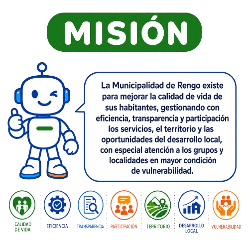
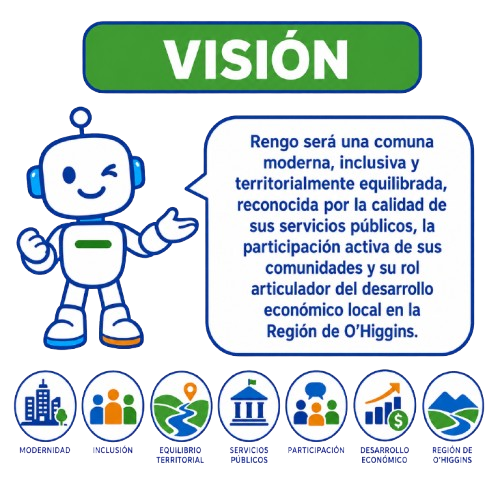
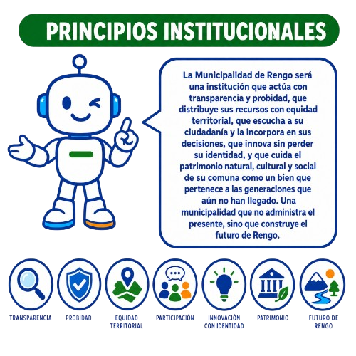
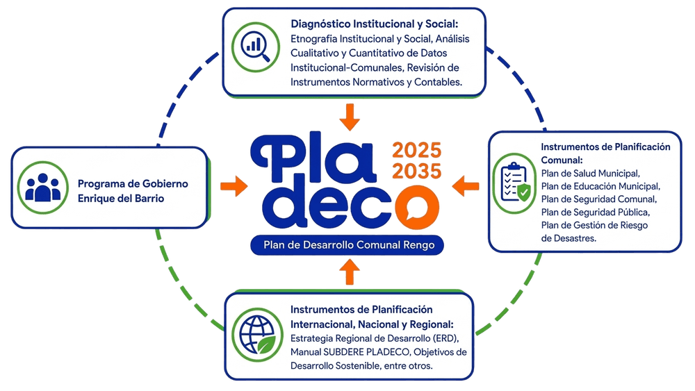

Este portal del Plan de Desarrollo Comunal Rengo 2025-2035 se encuentra en construcción activa. Los contenidos se actualizan continuamente conforme avanza el proceso participativo, validaciones técnicas e incorporación de aportes ciudadanos. Algunas secciones pueden cambiar.
Pulso ejecutivo del PLADECO 2025-2035 con indicadores clave de proceso. Las cifras se actualizan con el avance real de las 225 acciones y la cobertura territorial de las intervenciones priorizadas.
📝 Bienvenida & Marco del PLADECOComienza por entender qué es el Plan de Desarrollo Comunal Rengo 2025-2035, qué lo inspira y cómo se conecta con tu vida cotidiana en la comuna.
🏛️ Identidad Institucional
Misión, Visión, Principios y Proyección
Los pilares que orientan la gestión de la Ilustre Municipalidad de Rengo y la imagen objetivo del PLADECO 2025-2035.

🎯 Misión
Nuestro propósito
La Municipalidad de Rengo existe para mejorar la calidad de vida de sus habitantes, gestionando con eficiencia, transparencia y participación los servicios, el territorio y las oportunidades del desarrollo local, con especial atención a los grupos y localidades en mayor condición de vulnerabilidad.
💚 Calidad de vida✅ Eficiencia🔎 Transparencia🤝 Participación

🔮 Visión
El Rengo que soñamos
Rengo será una comuna moderna, inclusiva y territorialmente equilibrada, reconocida por la calidad de sus servicios públicos, la participación activa de sus comunidades y su rol articulador del desarrollo económico local en la Región de O'Higgins.
🌎 Modernidad Inclusión⚖️ Equilibrio📈 Desarrollo

🏆 Principios
Cómo actuamos
Una institución que actúa con transparencia y probidad, que distribuye recursos con equidad territorial, que escucha a su ciudadanía, que innova sin perder su identidad, y que cuida el patrimonio natural, cultural y social como un bien que pertenece a las generaciones futuras.
🛡️ Probidad⚖️ Equidad🏭 Patrimonio💚 Futuro
🔮 Imagen Objetivo Comunal
Proyección Rengo 2035
En el 2035, Rengo habrá consolidado un modelo de desarrollo territorial inclusivo y sostenible, que reduce las desigualdades entre sus localidades urbanas y rurales, aprovecha sus ventajas comparativas en agricultura, agroindustria y cultura, y posiciona a sus comunidades como protagonistas activas de la transformación local en la macrozona central de Chile.
📚Fuente: Elaboración SECPLAC Municipalidad de Rengo · Imagen objetivo construida con base en el proceso participativo PLADECO 2025-2035 (472 vecinos, 95 organizaciones, 21 unidades vecinales) · Marco normativo: Ley Orgánica Constitucional de Municipalidades 18.695 · Articulado con la Estrategia Regional de Desarrollo (ERD) O’Higgins 2024-2036.
📚 ¿Qué es el Plan de Desarrollo Comunal?
Instrumento rector de la planificación municipal, establecido en la Ley Orgánica Constitucional de Municipalidades, que orienta el desarrollo armónico y participativo de la comuna (CEPAL, 2024).
Art. 7 LOCM: «Contemplará las acciones orientadas a satisfacer las necesidades de la comunidad local y a promover su avance social, económico y cultural.»
Art. 1 Inc. 2: Las Municipalidades tienen por finalidad satisfacer las necesidades de la comunidad local y asegurar su participación en el progreso económico, social y cultural de las respectivas comunas.
Art. 7 Inc. 2: «En la elaboración y ejecución del plan comunal de desarrollo, tanto el alcalde como el concejo deberán tener en cuenta la participación ciudadana y la necesaria coordinación con los demás servicios públicos que operen en el ámbito comunal.»
— Ley 18.695 Orgánica Constitucional de Municipalidades
📋 Metodología Participativa
1Encuestas de Participación Ciudadana
2Entrevistas a actores locales (funcionarios, vecinos, activistas)
3Encuentros Participativos territoriales
4Entrevistas a Autoridades Comunales (Alcalde, Concejales, COSOC)
📊 DiagnósticoFuentes de Información del PLADECO
El diagnóstico comunal se construyó integrando 4 fuentes complementarias que garantizan una visión integral del territorio y sus comunidades.

📊
Datos Secundarios
Indicadores socioeconómicos de INE (Censo 2024), CASEN, SINIM, ICVU y SUBDERE que conforman la línea base cuantitativa del territorio.
🗣
Entrevistas Semiestructuradas
Diálogos con autoridades comunales (Alcalde, Concejales, COSOC), funcionarios municipales, dirigentes sociales y actores institucionales clave.
👥
Participación Territorial
Encuentros participativos en 21 unidades vecinales (9 urbanas + 12 rurales), trabajo etnográfico de campo y cartografía comunitaria.
📝
Encuesta Ciudadana
2.096 respuestas que capturan prioridades, satisfacción, identidad y necesidades comunitarias en todas las unidades territoriales.
Este proceso de actualización del PLADECO de la Ilustre Municipalidad de Rengo se plantea como una legitimación de las orientaciones de la nueva administración, herramientas de Planificación Subnacional, Participación de Actores Locales y la consagración de redes de Políticas (Policy Networks).
💡
Innovación
Implementación de medios digitales que faciliten la recopilación y visualización de datos para la toma de decisiones.
🔗
Policy Networks
Articulación de redes inter-institucionales que potencien la cooperación y el aprendizaje colectivo.
✅
Viabilidad y Aplicabilidad
Definición de Objetivos Estratégicos y Matrices que se traduzcan en proyectos de inversión y políticas públicas ejecutables.
🏛
Desarrollo Comunal
Impulso de programas y proyectos que mejoren el bienestar socioeconómico y la infraestructura local.
📚Fuente: Ley Orgánica Constitucional de Municipalidades N° 18.695 · Ley 20.500 sobre Asociaciones y Participación Ciudadana en la Gestión Pública · Subsecretaría de Desarrollo Regional y Administrativo (SUBDERE) · Manual de Elaboración de PLADECO · Contraloría General de la República, dictamen sobre cumplimiento PLADECO.
Dashboard Comunal
Indicadores Clave de Rengo
Así se ve la comuna hoy (2024) y las metas que queremos alcanzar en 2028 y 2035
Cobertura Preescolar ▲ Aumentar
50,9%
Meta 2028: 65% | Meta 2035: 75%
NNA Inseguros en Calle ▼ Reducir
54,4%
Meta 2028: 35% | Meta 2035: 20%
Empresas Comunales ✓ Líder
4.829
1a de la Región de O'Higgins
Deserción Ed. Media ▼ Reducir
11,6%
Meta 2028: <8% | Meta 2035: <5%
Escolaridad Promedio
11,1 años
Nacional: 12,1 | Brecha: -1,0 año
Áreas Verdes ▼ Crítico
1,96 m²/hab
OMS: 9-10 m² | Meta 2035: 9 m²
Alcantarillado ▲ Aumentar
77%
Meta 2028: 83% | Meta 2035: 90%
VIF Mujer ▼ Reducir
426 casos
Meta 2028: <300 | Meta 2035: <150
Robos con Violencia ▼ Reducir
166 casos
Meta 2028: <120 | Meta 2035: <60
Cumplimiento PLADECO Ant.
40%
Meta 2028: 60% | Meta 2035: 100%
Transparencia CPLT ✓ Líder
97,89%
Nacional: 81,76% | +16,13 pp
Web Index ✓ 1°
0,846
1° de 33 comunas O'Higgins
Rengo vs Promedios Nacionales
Indicadores clave comparados con el promedio del país
Evolución de Transparencia Municipal
Ranking CPLT 2012-2024 — De 16% a 97,89%
📚Fuentes: INE, Censo Nacional de Población y Vivienda 2024 • CASEN 2022, Ministerio de Desarrollo Social • CPLT, Ranking de Transparencia Municipal 2024 • MINEDUC, Estadísticas de Educación 2023 • SII, Registro de Empresas 2024 • Encuesta Ciudadana PLADECO Rengo 2025 (n=119) • Subsecretaría de Prevención del Delito, Estadísticas 2023
📍 Conoce tu Comuna · Diagnóstico TerritorialEl Censo 2024 retrata quiénes somos: 63.620 habitantes en 826 manzanas. Aquí descubrimos las fortalezas, brechas y desafíos del territorio que habitamos.
Observatorio Laboral
Ficha Comunal · Realidad y Proyección 2024–2029
Síntesis ejecutiva integrada de la realidad económica, demográfica y laboral de Rengo, que conecta datos del presente con las inversiones proyectadas hasta 2029. Cada indicador se vincula con un Eje Estratégico del PLADECO para dar coherencia entre diagnóstico y planificación.
Estudio Realidad Comunal · Observatorio Laboral
Rengo.
Región del Libertador Gral. Bernardo O'Higgins · Datos 2024–2025
63.620
habitantes · Censo 2024
4.439
empresas · SII 2024
US$ 208M
inversión 2025–2029
30.925
Hombres
32.695
Mujeres
13,8%
65 años o más
31.632
Fuerza de trabajo
38,0%
Ocupados formales
719
Vacantes BNE
👥
DemografíaCenso 2024
Población total censada63.620
Personas de 65 años o más13,8%
Distribución por sexo
63.620
total
Mujeres32.695
Hombres30.925
📈
Mercado Laboral e IngresosENE · MIDESO 2024
Población en edad de trabajar (PET)57.301
Fuerza de trabajo31.632
Promedio ingresos asalariados formales$978.243
Mediana ingresos asalariados dependientes$754.760
Asalariados formales que ganan el mínimo4,8%
Composición de la fuerza de trabajo
🏢
Tejido EmpresarialSII 2024
Total de empresas4.439
Trabajadores dependientes26.625
Trabajadores a honorarios4.696
Trabajadores por modalidad
🔍
Bolsa Nacional de Empleo — VacantesBNE 2025
Avisos publicados82
Total de vacantes719
① Apoyo a la producción205 vacantes
② Control abastecimiento / Etiquetado200 vacantes
③ Procesamiento de alimentos100 vacantes
Vacantes por ocupación (top 3)
🏗️
Proyectos de Inversión 2025–2029CBC 2025
208
millones USD · 4 proyectos 2025–2029
531
empleos fase operación
1.211
empleo peak total
Empleos creados por tipo — fase construcción (total 741)
Empleo Peak Total (n° personas)1.211
Cantidad de proyectos de inversión4
Del Presente al Futuro
Estrategias PLADECO Vinculadas a la Ficha Comunal
Cada indicador del observatorio se conecta con un Eje Estratégico del PLADECO 2025-2035 para garantizar coherencia entre el diagnóstico actual y la planificación futura.
📚Fuentes: INE Censo 2024 • Encuesta Nacional de Empleo ENE 2024 • MIDESO Ingresos 2024 • SII Registro Empresas 2024 • Bolsa Nacional de Empleo BNE 2025 • Corporación de Bienes de Capital CBC 2025 • Subsecretaría del Trabajo · Observatorio Laboral Comunal • Ficha basada en Estudio Realidad Comunal
Censo 2024
Censo Nacional de Población y Vivienda 2024
Resultados oficiales INE para la comuna de Rengo — 63.620 habitantes, 25.124 viviendas, 22.338 hogares — 683,7 km²
Distribución Urbano-Rural
79,9% población urbana / 20,1% rural — 683,7 km²
Migración Internacional
2.796 migrantes (4,4%) — Nacionalidades principales
Pirámide Poblacional
7 grupos etarios — Hombres (izquierda) vs Mujeres (derecha) — Total: 63.620 hab. — Mediana: 37 años
Composición Etaria
Tipos de Vivienda
25.124 viviendas — 97,3% casas — Distribución por tipología
Indicadores de Vivienda
Ocupación, hacinamiento y hogares unipersonales
Servicios Básicos
Educación, Empleo y Diversidad
Datos oficiales INE
¿Dónde hay más necesidades en Rengo?
Mapa de necesidades por localidad según datos del Instituto Nacional de Estadísticas: acceso a internet, nivel educativo, servicios básicos y más en 20 localidades
Ranking de Vulnerabilidad por Localidad
Top 15 localidades por ICP — Rojo: Rural / Azul: Urbano
Brechas Urbano-Rural
Comparación de 7 índices entre áreas urbanas y rurales
Mapa de Calor — Dimensiones de Vulnerabilidad
6 dimensiones para las 15 localidades más vulnerables — Verde (bajo) a Rojo (alto)
Mapa de Vulnerabilidad Territorial
24 localidades — Tamaño proporcional a población — Color según nivel ICP
Composición del ICP — Top 10 Localidades
Aporte de cada dimensión al índice compuesto de vulnerabilidad
📚Fuentes: INE, Censo Nacional de Población y Vivienda 2024 — Resultados oficiales comuna de Rengo • Índices de vulnerabilidad: elaboración propia con datos INE 2024 (servicios básicos, capital humano, brecha digital, precariedad habitacional) • FONASA, Cobertura de Salud 2024
Benchmarking Territorial
⚖️ Comparador con Comunas Vecinas
Posición relativa de Rengo frente a las comunas vecinas del Valle de Cachapoal y la provincia. Compara indicadores demográficos, sociales, de pobreza, educación y desempeño municipal según datos oficiales del INE, MIDESO, SUBDERE y SINIM. Selecciona hasta 5 comunas para analizarlas en paralelo.
Selecciona comunas para comparar
📚Fuentes: INE Censo 2024 (población, ruralidad) · MIDESO CASEN 2022 (pobreza multidimensional) · SUBDERE-SINIM 2023 (FCM, IDH municipal) · PNUD IDH Comunal 2024 · SIEDU Mineduc (escolaridad promedio). Las cifras son aproximadas para fines comparativos del PLADECO.
📊 Análisis Territorial · Datos en ProfundidadMapas, comparadores y índices que revelan las desigualdades territoriales: la brecha urbano-rural, la situación de la niñez y la diversidad interna de las 21 unidades vecinales.
PLADECO · Sección 11.3
Índice de Calidad Territorial · Espacios Públicos
Levantamiento territorial actualizado en Abril 2026 con catastro georreferenciado de 65 puntos de observación distribuidos en 5 agrupaciones territoriales: Zona Urbana Central de Rengo (n=15), Localidades y Periferias Rurales (n=15), Conjuntos Habitacionales y Plazas Vecinales (n=15), Expansión Urbana y Equipamiento Mayor (n=12) y Equipamiento Institucional y Bordes Críticos (n=8). Cada punto fue evaluado mediante un protocolo estandarizado de 5 variables (estado de infraestructura, áreas verdes, iluminación/seguridad, accesibilidad universal, limpieza/mantención) y clasificado en escala ordinal de 5 categorías (Excelente=5 / Bueno=4 / Regular=3 / Deficiente=2 / Crítico=1). El Índice de Calidad Territorial (ICT) normaliza estos puntajes en escala 0-100. Cada espacio incluye coordenadas GPS, tipología, problemáticas identificadas y propuestas de intervención con instrumentos identificables (FRIL, PMU, FNDR, Consejo de Monumentos Nacionales, Patrimonio Cultural).
📄 Documento Técnico Completo
Informe Levantamiento Espacios Públicos · Comuna de Rengo
PDF con los 65 puntos de observación, registro fotográfico georreferenciado, análisis de coherencia urbana y propuestas detalladas por espacio · Elaborado SECPLAC PLADECO 2025-2035 · Abril 2026 · ~54 MB.
Tabla N°11 · Levantamiento Abril 2026 SECPLAC · 65 puntos de observación en 5 agrupaciones territoriales · Metodología: observación directa + GPS + registro fotográfico + 5 variables evaluadas (infraestructura, áreas verdes, iluminación/seguridad, accesibilidad universal, limpieza). Métrica ICT 0–100 normalizada (Excelente=100, Bueno=75, Regular=50, Deficiente=25, Crítico=0). Clic en cada espacio para acceder a problemáticas y propuestas detalladas.
—
ICT Promedio Comunal
0
Excelente
—
0
Bueno
—
0
Regular
—
0
Deficiente
—
0
Crítico
—
📊Cargando…
Estado
Zona
Distribución por Estado
Clic en segmento para filtrar · 5 estados de conservación
ICT Promedio por Zona Territorial
Clic en barra para filtrar por zona · Centro-Periferia
Ranking Comunal de Espacios · ICT 0–100
65 puntos ordenados · Clic para ir al mapa · Hover para ubicar marcador
Matriz de Priorización Centro-Periferia
Distribución de espacios por zona territorial × estado de conservación · Identifica brechas y focos de intervención
Brecha de Calidad por Zona
100 − ICT promedio · Distancia al óptimo teórico
Composición de Estado por Zona
Proporción relativa (%) de cada estado dentro de la zona
Del Diagnóstico Espacial al Plan de Inversión
6 Líneas de Intervención Activadas por el Catastro ICT
El estado de conservación de cada espacio se traduce directamente en su prioridad para el banco comunal de proyectos. Los espacios Críticos activan FNDR + Consejo de Monumentos para recuperación patrimonial; los Deficientes se priorizan vía FRIL y PMU; los Buenos y Excelentes se documentan como modelos replicables. Cada decisión de inversión queda trazable al diagnóstico que la respalda.
Protocolo estandarizado aplicado a los 65 puntos de observación por el equipo SECPLAC. Cada espacio fue evaluado en terreno por dos profesionales, con registro GPS, fotografía georreferenciada y ficha de campo. Los puntajes ordinales (1-5) se promedian y normalizan al Índice de Calidad Territorial (ICT 0-100).
Calidad y mantención de jardines, arbolado, césped, riego, especies adecuadas al clima mediterráneo de Rengo.
💡
Iluminación y Seguridad
Cobertura lumínica nocturna, cámaras, vigilancia natural, percepción de seguridad, ausencia de "puntos ciegos".
♿️
Accesibilidad Universal
Rampas, anchos de circulación, baldosa podotáctil, baja altura de mobiliario, accesos sin barreras (ley 20.422).
🧹
Limpieza y Mantención
Recolección de residuos, basureros operativos, ausencia de microbasurales, grafiti vandalismo, pintura conservada.
Escala ordinal de evaluación (5 categorías)
5
Excelente
ICT ≈ 100
4
Bueno
ICT ≈ 75
3
Regular
ICT ≈ 50
2
Deficiente
ICT ≈ 25
1
Crítico
ICT ≈ 0
📍 5 Agrupaciones Territoriales
El catastro Abril 2026 organizó los 65 puntos en cinco agrupaciones territoriales según criterios de centralidad, densidad urbana y tipología de equipamiento. Cada agrupación revela patrones específicos de calidad y prioridades de intervención.
1
Zona Urbana Central
n = 15 espacios
Centro histórico y consolidado de Rengo: Plaza de Armas, Boulevard Palmeras, ejes cívicos, áreas de servicios y equipamiento de uso comunal frecuente.
FocoPatrimonio + uso intensivo
Énfasis de evaluación
Recuperación patrimonial (medialuna, EFE)
Accesibilidad universal
Cuidado de arbolado urbano histórico
2
Localidades y Periferias Rurales
n = 15 espacios
Rosario, Popeta, Cerrillos, El Trebal-Huilquío, La Chimba: plazas barriales rurales, medialunas locales, equipamiento de uso comunitario disperso.
FocoEquidad territorial
Énfasis de evaluación
Conectividad y accesibilidad
Riego solar autónomo
Cooperación con JJ.VV. locales
3
Conjuntos Habitacionales y Plazas Vecinales
n = 15 espacios
Villas y conjuntos habitacionales SERVIU/DS49 con sus plazas internas: Esmeralda, La Torre, Vista Hermosa, Bellavista, Aida Oteíza, conjuntos recientes.
FocoPlazas barriales FRIL/PMU
Énfasis de evaluación
Renovación de juegos infantiles
Calistenia / equipamiento deportivo
Iluminación LED + mobiliario
4
Expansión Urbana y Equipamiento Mayor
n = 12 espacios
Zonas de crecimiento norte/sur, parques de mayor escala, multicanchas, polideportivos, equipamiento deportivo regional y áreas de futura consolidación.
FocoInversión FNDR sectorial
Énfasis de evaluación
Escala y dimensionamiento
Integración con planes maestros
Capacidad de eventos comunales
5
Equipamiento Institucional y Bordes Críticos
n = 8 espacios
Sedes municipales, DIDECO, comisaría, biblioteca, edificios públicos + bordes línea férrea, sitios eriazos urbanos y zonas residuales de alta vulnerabilidad.
FocoAtención urgente + gobernanza
Énfasis de evaluación
Rehabilitación de bordes ferroviarios
Modernización institucional
Recuperación de sitios eriazos
📚 Glosario de Estados de Conservación
Criterios cualitativos que definen la asignación de cada espacio en una de las 5 categorías ordinales del ICT.
Excelente
100
Las 5 variables en su máximo: infraestructura nueva o muy bien conservada, áreas verdes saludables con riego operativo, iluminación LED total, accesibilidad universal completa (rampas + podotáctil), limpieza diaria. Espacio modelo replicable.
Bueno
75
Espacio operativo con mantención regular. Una de las 5 variables presenta debilidades menores (ej: una luminaria fundida, falta de baldosa podotáctil, basurero faltante). Requiere mejora puntual, no intervención integral.
Regular
50
Mantención irregular: 2-3 variables comprometidas. Infraestructura con desgaste visible pero funcional. Necesita renovación parcial vía FRIL o PMU; priorizar accesibilidad e iluminación.
Deficiente
25
3-4 variables en mal estado: infraestructura dañada, áreas verdes secas o ausentes, iluminación parcial o inexistente, sin accesibilidad. Renovación integral via FRIL ($80M) o PMU ($80M).
Crítico
0
Espacio inseguro o inutilizable. Riesgo estructural, microbasurales activos, ausencia total de servicios, abandono. Requiere intervención urgente FNDR + cerco perimetral temporal de seguridad.
🌏 Tipologías de Espacios Públicos Catastrados
Diversidad funcional de los 65 puntos. Cada tipología tiene un estándar de evaluación adaptado y un mix óptimo de variables prioritarias.
🌳 Plaza Vecinal Barrial 18🎪 Plaza Cívica / Patrimonial 5⚽ Multicancha / Polideportivo 8🍔 Medialuna Cultural 3🏠 Equipamiento Institucional 7🗻 Parque Lineal / Borde 4🌿 Plaza Rural / Localidad 9📰 Equipamiento Educativo 5🏘️ Sede / Edificio Público 3⚠️ Sitio Eriazo / Borde Férreo 3
📊 Hallazgos Clave del Diagnóstico
Síntesis de las brechas territoriales identificadas en Abril 2026 que orientan la priorización de inversión PLADECO.
⚠️
Brecha Centro-Periferia
~20 puntos ICT
Diferencia promedio entre Zona Urbana Central (mejor estado) y Localidades Rurales (peor estado). La brecha es estructural y requiere plan de inversión diferenciado por zona.
🏘️
Concentración Patrimonial
3 piezas críticas
Medialuna, Estación EFE Histórica y Boulevard Palmeras Phoenix concentran el riesgo patrimonial. Necesario gestionar con Consejo de Monumentos Nacionales + FNDR Cultura.
🌿
Déficit de Áreas Verdes Rurales
< 3 m²/hab
Las localidades rurales tienen menos áreas verdes por habitante que la OMS recomienda (9 m²/hab). Requiere arborización masiva con especies adaptadas al clima mediterráneo.
♿️
Brecha de Accesibilidad Universal
∼60%
Aproximadamente 6 de cada 10 espacios catastrados no cumplen estándar de accesibilidad universal (rampas + podotáctil + anchos mínimos). Inversión transversal vía SENADIS + FRIL.
👨🏫
Falta de Modelo de Mantención
~70% sin plan
La mayoría de espacios carece de protocolo de mantención periódico. Necesario institucionalizar contratos anuales DOM + protocolo de inspección trimestral.
🏆
Casos Éxito Replicables
4 referentes
Plaza Edmundo Ureta, Plaza Conjunto Habitacional Nuevo, Plaza Valentín Letelier y Parque Lineal Rosario Urbano. Documentar especies, materiales y modelo de mantención.
📝 Tabla Comparativa por Zona Territorial
Indicadores agregados por las 4 zonas haversianas (Centro Urbano, Periferia Urbana, Localidades, Rural Disperso) calculados sobre los 65 puntos del catastro Abril 2026. La última columna activa el filtro correspondiente en el mapa interactivo.
Zona
Habitantes
UV
N° espacios catastrados
ICT promedio
Estado dominante
Proyectos PLADECO
📍 Centro Urbano
35.200
5
21
62
Bueno / Regular
18
📍 Periferia Urbana
15.623
4
19
48
Regular / Deficiente
14
📍 Localidades
8.500
6
16
42
Deficiente
22
📍 Rural Disperso
4.297
6
9
35
Deficiente / Crítico
28
Comuna (total/promedio)
63.620
21
65
~47
Regular / Deficiente
82
Notas: ICT promedio calculado como media aritmética de los espacios asignados haversianamente a cada zona. Estado dominante: moda estadística. Proyectos PLADECO: acciones priorizadas en la matriz que afectan cada zona (suma puede exceder 225 por proyectos transversales). «Comuna» usa promedio ponderado por nº de espacios.
Diagnóstico científico de la vulnerabilidad socioterritorial de Rengo construido con 7 índices calculados sobre las 826 manzanas censales del CPV 2024 (INE). Supera la lectura agregada comunal evidenciando que detrás del ICP medio de 0,210 coexisten manzanas con vulnerabilidad mínima (0,073) y manzanas en riesgo crítico (0,493). El estudio incluye fundamentación metodológica, análisis por dimensión, ranking comparado de 24 localidades y recomendaciones estratégicas operacionalizables para el PLADECO 2025-2035.
Análisis Estratégico con Inteligencia Territorial
Vulnerabilidad multidimensional a escala de manzana censal
El marco de inteligencia territorial (Girardot 2009) aplicado al CPV 2024 con metodología SIVUST (MDSF 2025) e ISMT (OCUC 2022) integra seis dimensiones —habitacional, dependencia de cuidados, brecha digital, vulnerabilidad funcional, capital humano y servicios básicos— en un Índice Compuesto Ponderado (ICP). El resultado documenta una brecha rural-urbana del 38,7% y demuestra que las 15 localidades más vulnerables son todas rurales, configurando el principal eje de desigualdad territorial de la comuna.
63.620
habitantes · 79,9% urbano
826
manzanas en 24 localidades
+38,7%
brecha rural-urbana ICP
2,74×
brecha IPSB rural / urbano
Enfoque conceptual y marco teórico
La inteligencia territorial (Girardot, 2009) permite superar las lecturas agregadas del territorio mediante diagnósticos multiactor y multidimensionales. La integración de datos censales con SIG (Fuenzalida et al., 2015) posibilita el análisis socio-espacial a escala submunicipal, revelando patrones de desigualdad que los promedios comunales ocultan. Este estudio adopta el marco del Sistema de Indicadores de Vulnerabilidad Socioterritorial (SIVUST, 2025) del Ministerio de Desarrollo Social y amplía el alcance del Índice Socio Material Territorial (ISMT) del Observatorio de Ciudades UC (2022) incorporando seis dimensiones complementarias a nivel de manzana.
Tabla 1 · Construcción de los 7 índices territoriales
Cada índice integra entre 3 y 4 componentes con ponderaciones específicas. Todos se normalizan en escala 0–1 donde 1 indica máxima vulnerabilidad. El ICP es el promedio simple de los seis índices temáticos (con ICHT invertido a ICHT_VUL = 1 − ICHT).
Índice
Componente
Pond.
Descripción
Clasificación cartográfica en cuatro rangos
Los resultados se representan en coropletas con cuatro umbrales de riesgo:
0,00 – 0,25
Bajo riesgo
⬤ Verde
0,25 – 0,50
Riesgo moderado
⬤ Amarillo
0,50 – 0,75
Riesgo alto
⬤ Naranja
0,75 – 1,00
Riesgo muy alto
⬤ Rojo
Tabla 2 · Estadísticas descriptivas por índice (826 manzanas)
El ICP medio (0,210) sitúa a Rengo en el rango bajo-moderado de vulnerabilidad, con dispersión alta en algunas dimensiones: IBDT alcanza 0,969 (brecha digital casi total), IVFT 0,978 y ICHT_VUL 0,850. El déficit de capital humano (ICHT_VUL=0,438) es la dimensión más generalizada.
Índice
Mínimo
Máximo
Media
Mediana
Desv. Est.
Distribución de los 7 índices (media comunal)
Bar chart comparativo — ICHT_VUL e IDDC dominan en magnitud promedio
Tabla 3 · Distribución poblacional por quintil ICP
Patrón equilibrado entre quintiles: Q3 concentra la mayor proporción (22,2%) y los extremos (Q1-Bajo y Q5-Alto) presentan proporciones similares (~18%), sugiriendo distribución simétrica de la vulnerabilidad poblacional.
Distribución por quintil
Población por quintil del índice compuesto
Quintil
Manzanas
Población
% Pob.
Tabla 4 · Brecha urbano-rural — hallazgo estructural
El ICP rural (0,269) supera al urbano (0,194) en un 38,7%. La mayor brecha se concentra en IPSB (2,74×) — servicios básicos — e IVSH (1,89×) — vulnerabilidad habitacional. La dependencia de cuidados (IDDC) es la única dimensión transversal con brecha mínima (1,05×).
Área
Pob.
IVSH
IDDC
IBDT
IVFT
ICHT_VUL
IPSB
ICP
Comparación urbano-rural por índice
Azul: Urbano / Rojo: Rural — IPSB con el mayor contraste territorial
Las 6 dimensiones de vulnerabilidad explicadas
Cada índice presenta una distribución espacial distintiva. Las cartografías revelan que algunos índices son focalizados (concentrados en manzanas específicas) mientras que otros son generalizados (afectan amplias zonas del territorio).
Tabla 5 · Ranking de las 15 localidades más vulnerables
Las 15 localidades más vulnerables son TODAS rurales, confirmando el patrón estructural de desigualdad territorial. El Trebal Huilquío lidera con ICP=0,348. En contraste: Rengo ciudad ICP=0,186 · Rosario ICP=0,215 · Esmeralda ICP=0,264.
#
Localidad
Área
Pob.
IVSH
IDDC
IBDT
IVFT
ICHT_VUL
IPSB
ICP
Composición del ICP por dimensión
Tres perfiles-tipo emergen entre las localidades más vulnerables: carencia infraestructural (Chapetón, Camarico), exclusión múltiple equilibrada (El Trebal Huilquío, Apalta) y vulnerabilidad demográfico-digital (El Placer, La Ariana).
4 perfiles diferenciados de vulnerabilidad
El análisis identifica patrones específicos que demandan respuestas diferenciadas. Dos localidades con el mismo ICP pueden requerir intervenciones completamente distintas según su perfil.
Cuatro hallazgos estructurantes del PLADECO 2025-2035
El análisis multidimensional permite identificar conclusiones que reordenan las prioridades de inversión pública comunal:
0,210
ICP medio comunal en el rango bajo-moderado, pero con rango de 0,073 a 0,493. El promedio oculta una vulnerabilidad polarizada que solo se ve a escala de manzana censal.
+38,7%
ICP rural (0,269) supera al urbano (0,194). La brecha urbano-rural es el principal eje de desigualdad territorial, con un máximo de 2,74× en servicios básicos (IPSB).
15/15
Las 15 localidades más vulnerables son todas rurales sin excepción (rango ICP 0,282 a 0,348). La política urbana ha sido efectiva; la política rural está pendiente.
0,438
ICHT_VUL: el déficit de capital humano es la vulnerabilidad más generalizada. Afecta a urbano y rural simultáneamente: limitar el desarrollo endógeno comunal.
6 recomendaciones estratégicas territorializadas
Cada recomendación se vincula a localidades específicas según el patrón de vulnerabilidad detectado:
Bibliografía y referencias académicas
22 referencias que fundamentan el marco metodológico y los hallazgos del análisis (Girardot, Fuenzalida, Huenchuan, Hernández-Guerrero, PNUD, CEPAL, OCUC, MDSF, entre otros).
Del Diagnóstico a la Acción Pública
6 Estrategias PLADECO Activadas por los Hallazgos Censales
Cada brecha medida con datos del CPV 2024 desencadena una línea de inversión del PLADECO 2025-2035 con instrumentos de financiamiento concretos (FNDR, FRIL, PMB, SUBTEL FDT, DS49/DS27, INDAP, SENCE) y localidades priorizadas según criterios objetivables. La inteligencia territorial deja de ser diagnóstico para convertirse en hoja de ruta operacionalizable.
📚Fuente: Elaboración propia (Marzo 2026) sobre la base del Censo de Población y Vivienda 2024 (INE Chile) • Marco metodológico SIVUST (MDSF 2025) e ISMT (OCUC 2022) • 826 manzanas censales agregadas en 24 localidades • 22 referencias académicas integradas en el análisis • Compilado para la actualización del PLADECO Rengo 2025-2035.
Gráficos en Vivo
⚡ Indicadores Clave Interactivos
Complemento del Dashboard de Indicadores: 3 visualizaciones interactivas que profundizan en los datos más críticos del diagnóstico —prioridades ciudadanas, trayectoria ICVU 2015-2025 y evolución delictual 2005-2024. Mientras el dashboard muestra KPIs sintéticos, esta sección permite explorar la dinámica temporal y cualitativa detrás de cada cifra. Toca cualquier gráfico para acceder al detalle.
25 localidades con datos de población, inversión BIP y participación ciudadana
📚Fuentes: INE, Censo Nacional de Población y Vivienda 2024 • Instituto Geográfico Militar (IGM) • Municipalidad de Rengo, Catastro de Unidades Vecinales • SECPLA Rengo, Cartografía Comunal 2025
Diagnóstico Territorial
21 Unidades Vecinales
9 urbanas y 12 rurales con datos de población, inversión BIP y participación
UV
Localidad
Tipo
Población
NNA
Proyectos BIP
Inversión M$
Inv./Cápita M$
Proy./1000 hab
📚Fuentes: INE, Censo 2024 • Municipalidad de Rengo, Catastro de Unidades Vecinales • SECPLA Rengo, Cartografía Comunal 2025 • Trabajo de campo y entrevistas PLADECO 2025
Comparador
Comparador de Unidades Vecinales
Selecciona dos unidades vecinales para comparar sus indicadores clave
📚Fuentes: INE, Censo Nacional de Población y Vivienda 2024 • Diagnóstico PLADECO Rengo 2025 • Índices de vulnerabilidad: elaboración propia
Alertas
Diferencias entre Localidades
¿Todas las localidades tienen las mismas oportunidades? 12 indicadores muestran dónde hay más diferencias
Inversión BIP por Sector
1.182 proyectos históricos (1997-2025) por sector de inversión
Identidad Local Percibida
Distribución según encuesta ciudadana (n=119) y NNA (n=21)
📚Fuentes: CASEN 2022, Ministerio de Desarrollo Social • BIP, Banco Integrado de Proyectos MIDESO (1997-2025) • INE, Censo 2024 • Encuesta Ciudadana PLADECO (n=119) • Encuesta NNA (n=21)
Ciudad vs. Campo
¿Viven igual en la ciudad y en el campo?
Comparamos cómo viven las personas en las 9 localidades urbanas versus las 16 localidades rurales de Rengo
Dispersión Territorial: Inversión vs Proyectos
Cada burbuja = 1 localidad. Tamaño = población. Color: urbano/rural
UrbanoRuralTamaño = Población
Inversión Per Cápita por Localidad
Miles de pesos por habitante — Brechas visibles entre localidades
Proyectos BIP por 1.000 Habitantes
Densidad de proyectos — Concentración en localidades rurales
Población por Localidad
Distribución de los 63.620 habitantes en 42 localidades (Censo 2024)
📚Fuentes: INE, Censo Nacional de Población y Vivienda 2024 • BIP MIDESO, Inversión Pública 1997-2025 • Municipalidad de Rengo, Catastro de Localidades • Elaboración propia equipo PLADECO 2025
Infancia y Adolescencia
¿Qué piensan los niños y jóvenes de Rengo?
4.036 niños, niñas y adolescentes encuestados en 27 colegios y escuelas de la comuna
♥
4.036
NNA encuestados
■
27
Establecimientos
■
50,4%
Mujeres / 49,6% Hombres
⚠
58,7%
Apoderados sin herramientas
▲
62,1%
Apoderados acompañan tareas
✓
100%
Quiere participar
Salud Mental y Violencia NNA
Indicadores críticos del diagnóstico infantil (4.036 NNA)
Composición Etaria NNA
Distribución por grupo etario de los 4.036 encuestados
Participación y Derechos NNA
¿Participa, se siente escuchado, conoce sus derechos?
Voz de la Ciudadanía
Identidad local percibida — Ciudadanos vs NNA
📚Fuente: Encuesta NNA PLADECO Rengo 2025 (n=4.036) aplicada en 27 establecimientos educativos de la comuna • Instrumento validado por equipo técnico PLADECO • SENAME, Estadísticas Regionales 2023
🗣️ La Voz de la Comunidad · Participación Ciudadana472 personas, 95 organizaciones, 115 funcionarios y 4.036 niños entregaron sus voces. Aquí escuchas qué dicen los vecinos, los directivos, los jóvenes y los actores territoriales sobre la comuna que soñamos.
Sociedad Civil
Diagnóstico de la Sociedad Civil Organizada
Análisis participativo de 95 organizaciones con 472 participantes de Rengo, integrado nativamente con cinco vistas analíticas: Mapa territorial · Análisis Cuantitativo · FODA por Actor · Cruce de Datos · Red SNA de Articulaciones. Levantamiento entre septiembre 2024 y abril 2025.
🏘 Organizaciones
95
Convocadas al proceso
👥 Participantes
472
Personas registradas
📍 Con GPS
89
Mapeadas en territorio
📅 Reuniones
74
Internas y externas
📝 Entrevistas
30
Actores clave
🔍 Grupos FODA
8
Análisis cualitativo
📍 Mapa de Participación Territorial
89 organizaciones georreferenciadas · Tamaño del punto = asistentes · Click para ver detalle
Distribución por tipo de organización
12 categorías de actores convocados
Cronología del proceso participativo
Intensidad mes a mes · Peak en enero 2025 (38 reuniones)
Externas (terreno) 61% Municipales 39% 8 meses continuos (Sep 2024 – Abr 2025)
FODA por Actor Social
8 grupos actor analizados con entrevistas en profundidad y grupos focales · 472 participantes
Análisis Cualitativo
Cruce de Datos · Integración multi-fuente
Organizaciones con participación territorial y entrevista cualitativa registrada · 20 registros cruzados
✅Cobertura completa
8 grupos actor con participación territorial y entrevista registrada.
🏘50 JJVV Urbanas
Todas participaron en reuniones y respondieron cuestionario completo.
🌿24 JJVV Rurales
Con diagnóstico hídrico JV Río Claro y levantamiento territorial.
⚠️Brechas detectadas
7 organizaciones sin registro de asistencia. Requieren seguimiento.
Organización / Grupo
Tipo
Asistentes
GPS
Entrev.
FODA
Mes
Sede
🔌 Red SNA · Mapeo de Relaciones entre Actores
Grafo interactivo de 13 actores conectados por 9 temas comunes · Arrastra los nodos, haz clic en chips para filtrar la red, doble clic para fijar/liberar.
💡 Arrastra los nodos · Hover para resaltar conexiones · Doble clic para fijar
🔌 Articulaciones Estratégicas · 9 Proyectos de Trabajo Conjunto
Proyectos colaborativos derivados del cruce FODA · Cada uno articula 3-6 actores
🔗 9 temas comunes🚨 Seguridad (5)🏥 Salud y Bienestar (5)🎭 Cultura y Patrimonio (4)🚌 Movilidad (5)💧 Gestión Hídrica (3)🌲 Espacios Públicos (5)🏛 Gobernanza Local (6)📚 Educación Cívica (4)💼 Economía Local (5)
💧
Mesa Hídrica Río Claro · Embalse El Bollenar
Coordinación entre Junta Vigilancia, JJVV Rurales y Medio Ambiente para acelerar el proyecto Embalse El Bollenar, asegurar derechos de 1.200 regantes y promover riego tecnificado frente a 20 años de sequía.
JV Río ClaroJJVV RuralesMedio Ambiente
🚨
Plan Comunal de Seguridad Vecinal
Articulación entre Carabineros, Bomberos, JJVV Urbanas/Rurales y COSOC para abordar luminarias deficientes, sitios eriazos, alcoholismo y baja dotación policial. Incluye cámaras de televigilancia, drones y educación cívica preventiva.
CarabinerosBomberosJJVV UrbanasJJVV RuralesCOSOC
🚌
Terminal de Buses + Paraderos Inteligentes
Proyecto compartido entre Transporte Público, JJVV, Cámara de Comercio y UCAM. Terminal formal, paraderos iluminados UV, subvención adulto mayor para ampliar recorridos rurales y pago QR/tarjeta.
TransporteJJVV UrbanasJJVV RuralesComercioUCAM
🏥
Clínica del Adulto Mayor + Reciclaje Comunitario
Iniciativa UCAM-COSOC-JJVV-NNA para impulsar la Clínica del Adulto Mayor, jornadas exclusivas, recuperación de centros de reciclaje y reducción de filas en CESFAM con jornadas intergeneracionales.
UCAMCOSOCJJVV UrbanasNNA
🎭
Red Cultural y Patrimonio Vivo
Plataforma colaborativa entre Actores Culturales, Clubes de Huasos, JJVV Rurales y COSOC para catastro de artesanos, recorridos turísticos patrimoniales, jornadas de historia y dignificación de tradiciones campesinas.
CulturalesHuasosJJVV RuralesCOSOC
🌲
Recuperación de Espacios Públicos Estratégicos
Trabajo conjunto UCAM-JJVV-Culturales-Carabineros-Huasos para reactivar plazas (Valentín Letelier), áreas verdes, medias lunas rurales y sitios eriazos que generan inseguridad. Incluye plan de mantención y vigilancia comunitaria.
UCAMJJVV UrbanasCulturalesCarabinerosHuasos
🏛
Actualización PRC y Gobernanza Territorial
Liderado por COSOC con apoyo de JJVV, Cámara de Comercio, Culturales y Huasos para actualizar el Plan Regulador Comunal, mejorar coordinación interdirecciones municipales y reducir lenguaje técnico excluyente.
COSOCJJVV UrbanasJJVV RuralesComercioCulturales
📚
Programa Cívico Preventivo Comunal
Articulación NNA-Carabineros-Bomberos-COSOC para programa de prevención de drogas, educación vial, formación ciudadana en escuelas y campañas con jóvenes y consejos NNA.
Consultivo NNACarabinerosBomberosCOSOC
💼
Dinamización Económica Rural y Patrimonial
Cámara de Comercio, JJVV Rurales, Huasos, Transporte y Culturales articulados para impulsar ferias locales, emprendimiento agrícola, turismo rural-patrimonial (cabalgatas, equinoterapia) y comercio dinámico.
ComercioJJVV RuralesHuasosTransporteCulturales
📚Fuente: Diagnóstico Sociedad Civil Rengo 2024–2025 • Proceso participativo PLADECO 2025–2035 • 95 organizaciones • 472 participantes • Septiembre 2024 – Abril 2025 • Región del Libertador B. O’Higgins
Voces Ciudadanas
Voz de la Ciudadanía
Comentarios y prioridades expresadas por 119 vecinos adultos y 21 jóvenes encuestados en el proceso participativo — ¿Qué temas les preocupan más y cómo evalúan su comuna?
Prioridades Ciudadanas para el PLADECO
¿Qué áreas priorizaría usted en el plan? (n=119, opción múltiple)
Evaluación de Servicios Municipales
Calificación promedio 1-5 por área de servicio
Infraestructura con Mayores Deficiencias
Principales áreas de infraestructura señaladas como deficientes
Prioridades: Ciudadanos vs NNA
Comparación de prioridades entre adultos (n=119) y jóvenes (n=21)
Preparación ante Emergencias
Conocimiento del Plan Comunal y organización comunitaria
Salud: Principales Problemas
Aspectos del sistema de salud con mayores deficiencias (n=119)
Perfil Demográfico de Participantes
Distribución etaria y situación laboral de los 119 encuestados
Embudo de Participación Ciudadana
Desde el conocimiento hasta el compromiso activo
🔍 Análisis FODA — Entrevistas Cualitativas
Síntesis estratégica construida a partir de más de 120 entrevistas a 14 tipos de actores comunales: dirigentes vecinales, concejales, directores municipales, actores culturales, COSOC, adultos mayores, entre otros.
Cobertura Temática de Entrevistas
Dimensiones abordadas en los 30 instrumentos cualitativos
Frecuencia de Menciones por Categoría FODA
Número de menciones emergentes en entrevistas por tipo FODA
📚Fuentes: Encuesta Ciudadana PLADECO Rengo 2025 (n=119) • Encuesta NNA PLADECO (n=21) • Entrevistas cualitativas a 14 tipos de actores comunales (120+ entrevistas) • Talleres de participación ciudadana PLADECO 2025
¿Cómo imaginan los vecinos y vecinas la comuna en 10 años? Sistematización de palabras clave de 140 personas encuestadas (n=119 adultos + n=21 jóvenes) que respondieron qué quisieran ver en su Rengo del 2035. Los sueños ciudadanos son la materia prima de la imagen objetivo del PLADECO: cada concepto frecuente revela una expectativa colectiva que la planificación debe operacionalizar. La nube y la red SNA permiten leer la jerarquía y las co-ocurrencias temáticas que articulan estas aspiraciones.
☁️ Nube de Palabras — Frecuencias Ciudadanas
55+ conceptos más mencionados en encuestas y entrevistas (n=140). Tamaño = frecuencia relativa. Pasa el mouse para explorar
🔗 Red de Relaciones Temáticas (SNA)
Conexiones entre prioridades ciudadanas según co-ocurrencia en respuestas. Grosor = intensidad del vínculo
📚Fuente: Participación ciudadana PLADECO 2025 — Encuestas, talleres comunitarios y entrevistas en 21 unidades vecinales de Rengo · 140 personas encuestadas (119 adultos + 21 jóvenes).
16 testimonios representativos recogidos durante el proceso participativo PLADECO 2025-2035, seleccionados de un universo de más de 500 voces documentadas en talleres comunitarios, entrevistas en terreno y mesas temáticas. Las voces se ordenan por perfil (dirigentes, jóvenes, agricultores, mujeres, migrantes, adultos mayores, gestores culturales) y por unidad vecinal para reflejar la diversidad territorial de la comuna. Cada testimonio preserva su lenguaje original como evidencia cualitativa del proceso.
📚Fuente: Testimonios sistematizados del proceso participativo PLADECO 2025-2035 • Talleres territoriales, entrevistas en profundidad y mesas temáticas (género, migración, cultura, seguridad, salud, economía, NNA) • 472 participantes acreditados en actas • 95 organizaciones representadas • Levantamiento septiembre 2024 - abril 2025 • Método de selección: scoring por relevancia y representatividad de perfil.
🎯 Hacia Dónde Vamos · Planificación EstratégicaDe la escucha pasamos a la acción estructurada: 6 ejes estratégicos, 27 objetivos y 225 acciones priorizadas que darán forma a Rengo entre 2026 y 2035.
Diagnóstico de la Comuna
Análisis FODA Comunal
Identificamos lo que funciona bien (Fortalezas), lo que debemos mejorar (Debilidades), las oportunidades de crecimiento y los riesgos a prevenir en Rengo
Fortalezas
20 elementos identificados
F1: 4.829 empresas, 1a de la Región O'Higgins
F2: Red APS: 3 CESFAM + 1 SAR + 1 SAPU; 91.606 consultas/año
A6: Emigración juvenil: 100% NNA evalúa negativamente
A7: Cambio climático: 6 amenazas territoriales
A8: VIF +27%: 608 casos; 18-28% denuncia
A9: SLEP: riesgo pérdida autonomía educativa
A10: Escrutinio institucional: caso CIC N°20
A11: Pérdida bosque nativo: 145 ha
A12: Dependencia sectorial: 57% empleo estacional
A13: FCM 55,8%; gastos corrientes 82,1%
A14: Rotación política: riesgo discontinuidad
A15: 100% NNA evalúa negativamente Rengo; 66% identidad débil
FO — EXPLOTAR (Fortalezas + Oportunidades)
Capitalizar PACCC (F8) con Ley 21.455 (O6) para fondos climáticos. Usar liderazgo web (F7) para Ley 21.180 (O7): Plataforma Vecino Digital. Articular base empresarial 1° (F1) con cluster enológico (O4): programa "Rengo Origen".
FA — DEFENDER (Fortalezas + Amenazas)
Usar integridad (F9) para gestionar caso CIC N°20 (A10). Proteger base agrícola (F16) frente a megasequía (A4): Embalse El Bollenar. Red APS (F2) para anticipar envejecimiento (A3).
DO — CORREGIR (Debilidades + Oportunidades)
Usar PLADECO (O1) para articular 12 instrumentos (D20). Financiar con SUBDERE (O2) actualización Reglamento Capacitación (D26). Activar COSOC (O1) para corregir brecha participación (D4).
DA — SOBREVIVIR (Debilidades + Amenazas)
Reglamento que trascienda ciclos políticos (D19+D20 vs A14). Fondo contingencia presupuestaria (D15 vs A13). Actualizar Protocolo Acoso a Ley Karin (D3 vs A5) en 90 días.
Visualiza los 6 ejes, 27 objetivos estratégicos internos, 32 objetivos de imagen municipal y 225 acciones que guiarán a Rengo hasta el 2035. Explora la tabla completa o la red de conexiones entre objetivos.
⚠️ En construcción — contenido sujeto a cambios
6 Ejes Estratégicos
27 OE Internos PLADECO
32 OE Imagen Municipal
225 Acciones
Articulado ERD O'Higgins 2024–2036
N°
Eje Estratégico PLADECO 2025–2035
OE Imagen Municipal (32 OE institucionales)
OE Internos PLADECO (Matriz 2025-2035)
Objetivos Específicos Clave
N° Acciones
% Total
ODS Principales
1
Eje 1
Cultura, Turismo, Deportes, Recreación y Bienestar Social (Salud)
EJE 01 — Desarrollo Social y Comunitario
OE 1.1 Salud comunitariaOE 1.2 Salud mentalOE 1.3 Envejecimiento activoOE 1.4 Infancia y adolescenciaOE 1.5 Equidad de géneroOE 1.6 Inclusión discapacidadOE 1.7 Diversidad y migraciónOE 1.8 Protección social
EJE 05 — Cultura, Deporte e Identidad Local
OE 5.1 Cultura y patrimonioOE 5.2 Deporte comunalOE 5.3 Identidad localOE 5.4 Participación juvenil
EJE 02 parcial — Turismo
OE 2.3 Turismo rural y enturístico
OE 1.1Desarrollar Plan de Turismo Rural, Patrimonial y Enoturístico
OE 1.2Fortalecer la Identidad Cultural y el Patrimonio Local
OE 1.3Ampliar infraestructura deportiva y fomentar la Recreación
OE 1.4Ampliar Oferta Deportiva e inclusión social de adultos mayores, PcD y migrantes
OE 1.5Reducir consumo de alcohol y drogas mediante prevención comunitaria
Fortalecer infraestructura cultural y patrimonio local
Posicionar a Rengo como destino turístico rural
Ampliar acceso deportivo y recreativo para todos
Fortalecer protección social y bienestar comunitario
6 Ejes × 225 Acciones articuladas con Programa de Gobierno
225
100%
17 ODS articulados
Eje 1 Desarrollo Social
Eje 2 Desarrollo Económico
Eje 3 Educación
Eje 4 Territorio y MA
Eje 5 Seguridad
Eje 6 Gestión Municipal
Nota metodológica: La tabla integra dos taxonomías: los 32 OE Imagen corresponden a la arquitectura institucional municipal (EJE 01–06 imagen pública) y los 27 OE Internos PLADECO son los objetivos de la Matriz 2025–2035 (OE 1.1–OE 6.6). Totales: 58+18+14+53+32+50=225 acciones. Fuente: Matriz PLADECO RENGO 2025-2035 · SECPLAC Rengo.
225 políticas
Ejes estratégicos
6
OE internos PLADECO
27
Vínculos estructurales
27
Vínculos transversales
21
Filtrar por eje:
Eje estratégico (tamaño ∝ acciones)OE interno PLADECOVínculo estructuralVínculo transversalArrastrar · Hover para detalles · Clic para destacar
Flujos Eje → OE
27
Acciones distribuidas
225
Niveles del Sankey
3
Ejes representados
6
Resaltar eje:
📊 Lectura del flujo: El diagrama Sankey muestra cómo las 225 acciones priorizadas del PLADECO se distribuyen desde sus 6 ejes estratégicos (izquierda) hacia los 27 objetivos estratégicos internos (centro) y, finalmente, hacia las 5 categorías funcionales de impacto (derecha). El grosor de cada flujo es proporcional al número de acciones que lo recorren, revelando concentraciones presupuestarias y vacíos programáticos.
Eje estratégicoObjetivo EstratégicoCategoría FuncionalHover sobre flujo o nodo para detalles · Grosor ∝ n° acciones
Mayor concentración
Eje 1 Desarrollo Social
58 acciones (26%). Flujo dominante hacia Servicios Sociales y Salud.
Segundo en peso
Eje 4 Territorio y MA
53 acciones (24%). Concentra Infraestructura, Urbanismo y Gestión Ambiental.
Modernización transversal
Eje 6 Gestión Municipal
50 acciones (22%). Flujo distribuido hacia Gobernanza y Modernización digital.
Brecha programática
Eje 3 Educación
14 acciones (6%). El flujo más delgado — requiere refuerzo programatico.
🏔 Estrategia Regional de Desarrollo O'Higgins 2024-2036
El PLADECO Rengo 2025-2035 se articula directamente con la Estrategia Regional de Desarrollo (ERD) de la Región del Libertador Bernardo O'Higgins, aprobada por el Consejo Regional (CORE) en diciembre 2024 (Resolución Exenta N° 439). Este instrumento — elaborado conjuntamente por el Gobierno Regional y la Universidad de O'Higgins en un proceso que involucró talleres en las 33 comunas de la región y consultó a más de 12.000 vecinos, expertos y líderes públicos — define la imagen objetivo, las 10 deliberaciones estratégicas y las 4 agendas que guiarán el desarrollo regional hasta 2036.
🌙 Imagen Objetivo O'Higgins 2036
Visión consensuada que orienta la planificación del desarrollo regional al horizonte 2036, construida con metodología del Narrative Policy Framework sobre la base de 33 talleres comunales, 28 entrevistas a expertos, 11 foros híbridos, 9 mesas de trabajo y 2 encuestas regionales representativas.
📝 Resolución Exenta N° 439🏠️ GORE O'Higgins + UOH📍 33 comunas consultadas📅 Vigencia 2024-2036 (12 años)
🎯 Imagen Objetivo Regional (síntesis)
La región proyecta consolidarse como referente nacional de desarrollo sostenible, articulando cinco dimensiones simultáneas: (1) revitalización de los recursos naturales y adaptación al cambio climático; (2) bienestar y seguridad de las personas mediante servicios accesibles, infraestructura moderna y conectividad; (3) gestión inclusiva, equitativa y abierta a la ciudadanía; (4) matriz productiva diversificada con clústeres emergentes (turismo, agricultura avanzada) impulsados por educación técnica; y (5) valorización del patrimonio cultural y agricultura familiar campesina, descentralización interna, equidad de género y soluciones basadas en la naturaleza.
Las 10 deliberaciones regionales son los grandes nudos críticos que la ERD identifica como motor del desarrollo de O'Higgins. Surgen del proceso de escucha ciudadana (Mapa Subjetivo) realizado en las 33 comunas. Cada deliberación condensa tensiones, expectativas y prioridades que la región debe abordar simultáneamente.
💧1. Escasez y Gestión Hídrica
Reducción de precipitaciones, inequidad en el acceso al agua, regulación de napas subterráneas y eficiencia de uso productivo vs. consumo humano. Tema central que cruza todas las dimensiones del desarrollo regional.
🏗️2. Disputas por el Uso del Suelo
Venta de predios agrícolas, reconversión a paneles solares y parcelaciones de segunda vivienda. Tensión entre uso productivo tradicional y nuevos usos no agrícolas.
🍇3. Impactos de la Agroindustria
Impactos ambientales y laborales del sector clave de la economía regional. Precarización del empleo, uso intensivo de agroquímicos y dependencia de monocultivos.
⚖️4. Distribución de Oportunidades en los Territorios
Brechas entre zonas urbanas y rurales, entre la zona central (Cachapoal) y los extremos (Colchagua y Cardenal Caro). Demanda por descentralización interna de la región.
🌊5. Borde Costero: Visibilidad, Manejo y Política
Provincia Cardenal Caro y zonas costeras invisibilizadas en la planificación. Manejo deficitario de servicios, conectividad y oportunidades económicas en el litoral.
⚠️6. Violencias
Narcotráfico, violencia de género, violencia juvenil y violencia rural (abigeato, robos). Tema emergente que demanda respuestas integrales y territorializadas.
🌏7. Impactos de la Inmigración
Migración laboral hacia sectores agrícolas y de servicios. Desafíos de integración cultural, regularización migratoria y acceso a servicios sociales.
🌵8. Matriz Productiva, Enclaves y Vida Rural
Concentración productiva en agroindustria y minería (El Teniente). Riesgo de enclaves económicos sin encadenamiento local. Pérdida de formas de vida rural.
🎓9. Educación, Empleo y Proyectos de Vida Juveniles
Desajúste entre oferta educativa y demanda laboral regional. Migración juvenil hacia Santiago. Demanda por educación técnica vinculada a sectores productivos locales.
🎣10. Cultura, Identidades y Urbanidad
Patrimonio cultural rural (vendimias, fondas, religiosidad popular) en tensión con urbanización acelerada. Identidades campesinas, huasas y costeras vs. modernización.
Las 4 agendas estratégicas organizan la propuesta de acción pública regional. Cada agenda se descompone en ejes estructurantes que a su vez contienen programas y líneas de acción específicas. La ERD presenta también tres ejes transversales: equidad de género, descentralización interna y participación ciudadana.
🧑⚕️1. Agenda de Desarrollo Humano
Garantizar bienestar y derechos sociales con enfoque inclusivo, fortaleciendo la convivencia, la ruralidad y la cultura como motores de cohesión territorial.
Derechos Sociales
Salud, educación, vivienda digna, protección social y cuidados integrales.
Convivencia Social
Seguridad ciudadana, prevención de violencias, integración migrante y cohesión comunitaria.
Ruralidad
Servicios básicos rurales (APR), conectividad digital, transporte y mantención del tejido rural.
Recuperar la confianza pública fortaleciendo capacidades institucionales y desplegando una gobernanza efectiva para la implementación de la ERD.
Confianza Pública
Transparencia, rendición de cuentas, control ciudadano y comunicación de políticas públicas.
Fortalecimiento de Capacidades Institucionales
Modernización del Estado regional, capacitación de funcionarios, sistemas de gestión.
Gobernanza para la ERD
Articulación GORE-municipios-sociedad civil para implementar las 4 agendas con seguimiento e indicadores.
🌍3. Agenda de Medio Ambiente
Liderar la transición hacia un desarrollo sostenible que adapte la región al cambio climático, conserve la biodiversidad y promueva la economía circular.
Adaptación al Cambio Climático
Gestión hídrica integrada, planes de adaptación, eficiencia energética y resiliencia urbana/rural.
Preservación y Conservación de la Naturaleza
Bosque nativo, biodiversidad, fauna endémica, áreas protegidas y soluciones basadas en la naturaleza.
Ordenamiento y Planificación Territorial
Plan Regional de Ordenamiento Territorial, regulación uso de suelo, planes reguladores comunales.
Economía Circular y Gestión de Residuos
Reciclaje, valorización de residuos, compostaje comunal y reducción de relaves mineros.
💰4. Agenda de Desarrollo Económico
Diversificar la matriz productiva con sustentabilidad ambiental, mejorando los derechos laborales y promoviendo asociatividad para cerrar brechas entre comunas.
Reducción de informalidad, cierre de brechas salariales por género, garantía de derechos laborales.
Sustentabilidad Medioambiental y Producción
Compatibilidad entre producción y conservación, transición a prácticas sostenibles.
Asociatividad y Cooperativismo
Fortalecimiento de cooperativas, asociaciones de productores, encadenamientos productivos locales.
🔗 Cómo el PLADECO Rengo se alinea con la ERD O'Higgins
El PLADECO Rengo 2025-2035 fue diseñado explícitamente para aterrizar la ERD a escala comunal, manteniendo coherencia con las 4 agendas regionales y aportando soluciones específicas a las deliberaciones más relevantes para Rengo (escasez hídrica, distribución de oportunidades, cultura/identidades, educación juvenil, matriz productiva agroindustrial). La siguiente tabla muestra la cascada ERD → PLADECO:
ERD Agenda 1 · Desarrollo Humano
→
PLADECO Eje 1 · Cultura, Turismo, Deportes, Recreación y Bienestar Social (Salud)
ERD Agenda 4 · Desarrollo Económico
→
PLADECO Eje 2 · Desarrollo Económico Local
ERD Agenda 1 · Ejes Derechos Sociales + Ruralidad
→
PLADECO Eje 3 · Educación y Capital Humano
ERD Agenda 3 · Ordenamiento Territorial
→
PLADECO Eje 4 · Territorio, Infraestructura y Vivienda
📊 Aporte de Rengo a la ERD: Con 63.620 habitantes (3,4% de la región), Rengo es la 4ª comuna más poblada del Cachapoal y aporta evidencia clave para 7 de las 10 deliberaciones regionales: hidrología (Mesa Hídrica Río Claro), matriz productiva (Apalta + agroindustria), juventudes (4.036 NNA encuestados), brecha urbano-rural (38,7% medida con índices SIVUST), y patrimonio identitario (toqui Rengo). El portal PLADECO funciona como un caso piloto de articulación multinivel ERD-PLADECO para las 32 comunas restantes de la región.
📚Fuentes: Gobierno Regional de O'Higgins & Universidad de O'Higgins (2025). Estrategia Regional de Desarrollo de O'Higgins 2024-2036. Resolución Exenta N° 439, Código BIP N° 40017868-0. Documento aprobado por unanimidad por el Consejo Regional (CORE) de O'Higgins en sesión de diciembre 2024. Más información: erd.uoh.cl · goreohiggins.cl.
Compromisos Internacionales
Rengo y los Objetivos Globales de la ONU
Las 225 acciones del plan están conectadas con 13 de los 17 Objetivos de Desarrollo Sostenible que promueve Naciones Unidas
Mapa de Calor: Cobertura ODS por Eje Estratégico
Intensidad del color = número de acciones vinculadas. Hover para detalle.
Multi-cobertura ODS
Cada acción contribuye a 2,5 ODS en promedio (563 contribuciones totales)
ODS Críticos: Brecha de Cobertura
ODS no cubiertos y con menor vinculación en el PLADECO
📚Fuentes: ONU, Agenda 2030 para el Desarrollo Sostenible • PNUD Chile, Localización de los ODS • PLADECO Rengo 2025-2035, Matriz de Alineación ODS-Políticas
Puesta en Marcha
¿Cómo se hará realidad el plan?
Las 225 acciones con sus responsables, presupuesto estimado y cómo se incluirá a todos los vecinos
Principales áreas municipales a cargo de la implementación
📚Fuente: Matriz de Acciones PLADECO Rengo 2025-2035 — 225 acciones distribuidas en 6 ejes, 32 objetivos estratégicos • Municipalidad de Rengo, Presupuesto Municipal 2025 • SUBDERE, Fuentes de Financiamiento Municipal
Argumentario
Las Razones detrás del PLADECO
El PLADECO no es un ejercicio burocrático: es una respuesta articulada a problemas medidos. 15 argumentos estructurales que justifican cada eje estratégico, construidos a partir de datos del Censo 2024 (63.620 habitantes, 826 manzanas), 40+ entrevistas cualitativas, 4.036 niños, niñas y adolescentes encuestados, el FODA participativo (904 menciones sistematizadas) y el portafolio BIP MIDESO (1.182 proyectos históricos). Cada argumento conecta una brecha medida con una respuesta estratégica del plan.
✎
40+
Entrevistas
▲
21
UV Diagnosticadas
★
4.036
NNA Encuestados
◆
1.182
Proyectos BIP
Peso Relativo de los Argumentos
Valoración ponderada según evidencia, urgencia e impacto
Dimensiones del Diagnóstico
Cobertura de las 8 dimensiones del análisis cualitativo
📚Fuente: Argumentario Estratégico PLADECO Rengo 2025-2035 — Documento de respaldo político-técnico • Equipo técnico PLADECO, Municipalidad de Rengo
Infografía
Resumen Ejecutivo PLADECO
Cifras clave del Plan de Desarrollo Comunal en una mirada
Top 8 Objetivos de Desarrollo Sostenible presentes en las acciones
📚Fuente: Resumen Ejecutivo PLADECO Rengo 2025-2035 • Síntesis del proceso participativo, diagnóstico y formulación estratégica
🏛️ Quiénes lo Construyen · Equipo, Gobernanza y ActoresEl PLADECO se hace con personas. Conoce al equipo SECPLAC, las 30 direcciones municipales, las 21 unidades vecinales y las redes inter-institucionales que sostienen la implementación.
Diagnóstico Institucional
Funcionarios y Directores Municipales · Etnografía Institucional
Análisis cualitativo y cuantitativo de 115 entrevistas a funcionarios y directores de la Municipalidad de Rengo: cultura organizacional, gestión interna, FODA institucional, percepción sobre burocracia y propuestas de innovación. Levantamiento etnográfico realizado durante el proceso PLADECO 2025–2035.
🎬¿POR QUÉ UNA ETNOGRAFÍA INSTITUCIONAL?
Antes de planificar el futuro, necesitamos comprender cómo trabaja realmente la Municipalidad desde quienes la habitan día a día. La etnografía institucional —método desarrollado por Dorothy E. Smith— nos permite ir más allá del organigrama formal y observar las relaciones cotidianas, los flujos de información, las tensiones invisibles y las prácticas concretas que dan vida a la gestión municipal. Estas 115 entrevistas revelan que más del 67% de las menciones son fortalezas, evidenciando un capital humano comprometido, pero también exponen 249 debilidades que el PLADECO 2025-2035 debe abordar de forma estructural.
👥 Personas Entrevistadas
115
Funcionarios + Directores
💼 Funcionarios
101
Hoja 1 · nivel operativo
🏫 Directores
14
Hoja 2 · nivel estratégico
🏛 Direcciones
30
DIDECO, SECPLAC, DOM, etc.
📚 Unidades
46
Departamentos analizados
💬 Respuestas
1.855
Datos cualitativos analizados
🔍
Hallazgos Clave del Análisis Etnográfico
⚗️CAPITAL POSITIVO 67%
Ratio F:D de 2.4:1 — 610 menciones de Fortalezas vs 249 Debilidades. Existe un capital institucional positivo sobre el cual el PLADECO puede construir, pero requiere consolidar prácticas existentes.
🧑🤝🧑CULTURA = TEMA #1
55,9% de las respuestas abordan Cultura Organizacional (680 menciones). El clima laboral, las relaciones humanas y la comunicación interna emergen como el eje crítico del funcionamiento municipal.
⚠️GESTIÓN = MAYOR BRECHA
60 debilidades en Gestión (24% del total D). Procesos lentos, falta de manual de procedimientos, descoordinación entre direcciones y burocracia interna son las brechas más estructurales.
🚀OPORTUNIDADES SUB-EXPLORADAS
Solo 35 menciones de Oportunidades frente a 249 Debilidades (ratio 1:7). Existe un déficit de visión prospectiva: los funcionarios identifican problemas pero requieren acompañamiento para imaginar soluciones.
📍DDEL+SECPLAN+DIDECO 38%
Tres direcciones concentran el 38% del corpus: DDEL (260 resp.), SECPLAN (242) y DIDECO (213). Son los nodos articuladores de la gestión cotidiana: desarrollo económico, planificación y vínculo comunitario.
🔭MIRADA INTROSPECTIVA
Solo 10 menciones de Amenazas externas (1,1% del FODA). Los funcionarios concentran su preocupación en lo interno: lo institucional pesa más que el contexto externo. Falta articulación con escenarios regionales y nacionales.
Comparación directa Fortalezas vs Debilidades en cada dimensión temática
💪 Fortalezas Internas
Vinculación fuerte y potente con salud comunitaria
Coordinación inicial sectorial positiva
Profesionalidad para superar conflictos internos
Cambio positivo en atención municipal (nueva administración)
Trabajo en terreno con organizaciones territoriales
Escuela de Dirigentes y FONDEVE funcionales
⚡ Debilidades Internas
No existe manual de procedimientos internos
Falta capacitaciones continuas a funcionarios
«Cahuínes» y relaciones tóxicas entre funcionarios
Descoordinación entre direcciones municipales
Falta de validez/legitimidad oficinas territoriales (Rosario)
Duplicidad de funciones administrativas
Falta de autocuidado emocional institucional
🚀 Oportunidades Externas
«Gobierno en Terreno» como nueva metodología
Mesas de trabajo con Uniones Comunales
Articulación con empresas privadas para emprendimiento
Trabajo comunitario con adultos mayores productivos
Plataformas digitales para postulación a beneficios
Descentralización hacia Oficina Rosario
⚠️ Amenazas Externas
Burnout y desgaste emocional de dirigentes sociales
Brecha en comprensión vecinal de procesos administrativos
Personal clave que se va (pérdida de conocimiento)
Resistencias internas que perjudican atención al vecino
Falencias presupuestarias para actividades comunitarias
Falta de instructivos formales para beneficios sociales
🔌 Red Institucional · Conexiones entre Direcciones
Grafo SNA: 15 direcciones más activas conectadas por temas/categorías compartidas. Cada arista representa un área común entre dos direcciones. Filtra por temas, arrastra los nodos.
💡 Click en chips de tema · Hover en arista para ver detalle · Drag para reorganizar
📊 Diagrama Sankey · Flujo Direcciones → Categorías → FODA
Visualización del flujo de las 1.216 respuestas: cómo cada dirección municipal aporta a las 6 dimensiones temáticas, y cómo éstas se distribuyen en los cuadrantes FODA. El ancho del flujo es proporcional al volumen.
💡 Hover en los flujos para ver volumen exacto · Click en nodos para resaltar trayectoria
🎯NODO MÁS CENTRAL
DIDECO es el actor con mayor centralidad en la red institucional: se conecta con todas las 6 dimensiones y articula con 11 de las 14 direcciones principales.
🏔CLUSTER DOMINANTE
El cluster Cultura Organizacional agrupa la mayor cantidad de direcciones (680 respuestas). Indica que el clima laboral es una preocupación transversal.
⚠️FLUJO MÁS CRÍTICO
El flujo Gestión → Debilidades es el más denso del Sankey (60 menciones). Las debilidades de proceso son la brecha más relevante de toda la red.
🔌DIRECCIONES PUENTE
SECPLAN, GABINETE y DIRECCIÓN DE CONTROL actúan como puente entre Planificación y Gestión: requieren reforzamiento para fluidificar la coordinación inter-direcciones.
💬 Citas Textuales de Funcionarios y Directores
Fragmentos directos de las entrevistas etnográficas, organizados por dimensión. Se preservan voces originales como evidencia cualitativa.
📫Cultura Organizacional
«La dinámica interna en su inicio fue generando resistencia al interior por no aportar y no apoyarse a nivel interno. Se aprendió de manera autónoma el proceso interno de la Municipalidad; no existió acompañamiento del superior jerárquico. No existe un manual de los procedimientos internos, no existe la entrega de un PLADECO, no existe una entrega del reglamento interno de la municipalidad.»
DIDECO · Comunitaria (Operativo) · Funcionario
🤝Coordinación Interna
«No hay una primera recepción al público objetivo. Sería ideal que tengamos información en los pisos para entregar información a nivel municipal sobre los procedimientos de la Municipalidad. Los guardias entregan harta información de los procesos internos de la comuna.»
DIDECO · Atención al público · Funcionario
📋Gestión y Trámites
«No todos pueden dar el servicio de Registro Social de Hogares. Hay una clave que solo da cartolas y no se tiene en Rosario. Solo miércoles se puede dar porque viene un funcionario de Rengo. No existen capacitaciones de los funcionarios para mejorar los servicios y atención.»
DIDECO · Oficina Rosario · Funcionario
⚠️Clima Organizacional
«Existe una gran frecuencia de cahuínes y comentarios entre funcionarios. Existen nodos de cahuínes y relaciones de toxicidad por los funcionarios. Los procesos internos a nivel interno, más allá de los cahuínes y malos comentarios, se logran superar por profesionalidad.»
DIDECO · Clima laboral · Funcionario
💪Fortaleza Institucional
«La vinculación con la salud es fuerte y potente; existen actividades junto con compromisos con los diversos actores de la municipalidad. Trabajar con adultos mayores para emprender la venta y exposición de sus productos; realizar una coordinación con DDEL. Creación de mesas de trabajo con las Uniones Comunales.»
DIDECO · Articulación sectorial · Funcionario
🥺Salud Mental y Burnout
«Se impulsó lo relacionado a la Salud Mental de los dirigentes. El psicólogo fue una ayuda para atender a los vecinos para abordar los desgastes institucionales y sociales. Existe un desgaste emocional con los funcionarios que deben ser atendidos para abordar el burnout de los dirigentes sociales.»
DIDECO · Bienestar funcionarios · Funcionario
💡Innovación Propuesta
«Se requiere más comunidad y trabajo en terreno, lo que requiere un trabajo con las organizaciones comunitarias en el levantamiento de información, mediante una escucha activa. La atención en la municipalidad ha cambiado mucho, todo esto con el propósito de contar con una buena atención de los funcionarios.»
DIDECO · Innovación · Funcionario
📋Política Pública
«Los vecinos no entienden los procesos administrativos. Es clave contar con un procedimiento de atención al público con una metodología más clara. Se crearon programas comunitarios para derivar la información a la comunidad. La Escuela de Dirigentes permitió contar con una proyección de información comunal para los vecinos.»
DIDECO · Comunicación vecinal · Funcionario
🎯Planificación Estratégica
«Definir cuál es el foco y comunicarlo; muchas veces hay intuición por lo que se escucha. El PLADECO debe fijar los objetivos; inversión al espacio público en un plan integral. El foco debe ser en espacios grandes, mejorar veredas, mucho espacio que desarrollar, caminos, infraestructura vial.»
SECPLAN · Formulación · Funcionario
🏗️Obras Municipales
«Solo memo y correo. Se fortalece con trabajo en equipo. La nueva ordenanza de espacios públicos requiere un trabajo coordinado, donde profesionales de cada dirección se articulen. Aumentar el número de reuniones y retroalimentación. Crear un diario mural para los procesos de retroalimentación.»
DIRECCIÓN DE OBRAS MUNICIPALES · Formulación · Funcionario
🌵Aseo & Ornato
«Cambiar las empresas contratantes en base a un proceso transparente. Programa efectivo de residuos por parte de la Municipalidad. Planificación trimestral. El desafío es subdividir al personal en diferentes equipos de trabajo. El crecimiento de áreas verdes y lo urbano será extenso debiendo impulsarse una serie de trabajos.»
DIRECCIÓN DE ASEO Y ORNATO · Gestión General · Funcionario
⚠️Control Interno
«Los procesos de remuneración están al debe lo que es tecnología. Existe un alto riesgo en detrimento municipal: existen muchos cálculos a mano pero no en sistema. Se requiere modernizar urgentemente la base administrativa.»
DIRECCIÓN DE CONTROL · Gestión General · Funcionario
📱Modernización Digital
«Modernizarse: la modernidad en cuanto a procesos principales, y que los servicios sean más eficientes; debería ser digital. Los procesos son los mismos; ahora solo hay computadores, pero no ha cambiado tanto. Aumentar el trabajo en equipo para impulsar actividades en conjunto.»
SECRETARÍA MUNICIPAL · Procesos transversales · Funcionario
🎔Desarrollo Económico
«Superficie productiva agrícola importante. Agroindustria importante para el funcionamiento de prestadores de servicios. Tenemos comercio pero apunta a la persona local. Poco financiamiento, porque es nuevo; la idea es llamar a más gente. No hay problemas de logística.»
DDEL · Gestión de riesgos y desastres · Funcionario
🧴Prevención & Articulación
«Coordinación: trabajan mucho con contactos. Cómo se muestra el servicio. Actividades pequeñas, pero se masifican, amplian la oferta programática, es fácil trabajar. La articulación territorial permite llegar a comunidades alejadas.»
SENDA · Coordinación preventiva · Funcionario
🏭Gabinete & Prioridades
«Aumentar la seguridad en la comuna. Mejorar la atención primaria —es fundamental categorizar rápido según requerimientos internos. Se deben priorizar según esta agenda. El vínculo con el Alcalde es directo pero requiere mejorar canales formales con direcciones.»
GABINETE · Planificación · Funcionario
📚 Metodología: Las citas fueron seleccionadas mediante análisis de frecuencia y relevancia (scoring 1-7) sobre 1.855 respuestas. Se preserva la voz original de funcionarios y directores como evidencia cualitativa. La etnografía institucional busca comprender el habitar cotidiano del municipio desde quienes lo construyen día a día.
🎯
Implicancias Estratégicas para el PLADECO 2025–2035
Los hallazgos del diagnóstico institucional se traducen en 6 líneas de acción prioritárias que el PLADECO debe abordar para modernizar la gestión municipal y mejorar la calidad del servicio al vecino. Cada implicancia está vinculada a uno de los 6 ejes estratégicos del plan.
📋1. Manual de Procedimientos & Inducción
La ausencia repetida de un manual interno y la entrega del PLADECO/Reglamento emerge como la brecha más mencionada. Funcionarios aprenden «a punta de prueba y error», lo que genera ineficiencias y resistencia al interior.
→ Eje 6 · Gestión Municipal Moderna
🤝2. Mesa Inter-Direcciones
La descoordinación entre direcciones aparece en 8 de las 25 unidades. Mesas de coordinación quincenales con DOM, DIDECO, SECPLAN, Salud y Aseo&Ornato permitirían alinear procesos transversales.
→ Eje 6 · Gobernanza Inter-Direcciones
🏫3. Plan de Capacitación Continua
Reglamento de capacitación con 14 años sin actualizar (referenciado en literatura previa). Funcionarios solicitan: clave única RSH, atención a público, ofimática, salud mental, redacción administrativa.
→ Eje 6 · Recursos Humanos
🥺4. Salud Mental Institucional
Burnout, «cahuínes», nodos tóxicos y desgaste emocional son menciones recurrentes. Programa de autocuidado, supervisión clínica para equipos de atención directa y código de convivencia institucional.
→ Eje 1 · Cuidado y Bienestar
🏘5. Descentralización Oficina Rosario
La Oficina Rosario opera con baja validez institucional según los propios funcionarios: clave RSH disponible solo miércoles, sin sala de reuniones, sin presupuesto propio. Plan de fortalecimiento territorial.
→ Eje 4 · Descentralización
💻6. Digitalización de Trámites
Postulaciones digitales sin instructivos formales, tablas de puntaje erróneas, falta de formularios de rendición. Plataforma única de trámites alineada con Ley 21.180 (Transformación Digital).
→ Eje 6 · Gobierno Digital
📝SÍNTESIS: De la Escucha a la Acción
Esta etnografía institucional no es un diagnóstico más: es la voz de quienes habitan la Municipalidad día a día. Las 1.855 respuestas constituyen el insumo cualitativo más extenso jamás producido para el PLADECO de Rengo. Las próximas etapas requieren: (1) validar los hallazgos con los entrevistados, (2) traducir las 6 implicancias en acciones concretas en la Matriz Estratégica, y (3) establecer un monitoreo bianual del clima organizacional para medir avances hacia la «Municipalidad que construye el futuro».
Profesionales responsables de la elaboración del Plan de Desarrollo Comunal 2025-2035
🏛 Direcciones Municipales Participantes
📚Fuente: Municipalidad de Rengo, Departamento de Planificación • Equipo técnico PLADECO 2025-2035
Trabajo en Equipo
¿Quién trabaja con quién en Rengo?
14 instituciones públicas conectadas entre sí para llevar adelante las 225 acciones del plan comunal
★
14
Actores clave
⇄
127
Vínculos
◆
6
Cross-links OE
⚠
Nivel 2
Madurez promedio
Co-responsabilidad Institucional
Top 10 pares de departamentos que comparten más acciones en el PLADECO
Centralidad de Actores
Grado de centralidad normalizado — capacidad de articulación transversal
Convergencia: Áreas de Gobierno → Ejes
Participación de cada área gubernamental en los 6 ejes estratégicos
Madurez Instrumental
Evaluación de 5 instrumentos normativos críticos de gestión municipal
🔗 Cross-links entre Objetivos Estratégicos
Conexiones inter-eje que requieren coordinación departamental para evitar duplicidad y generar sinergias
Distribución ERD → Ejes
7 Estrategias Regionales de Desarrollo vinculadas a los ejes locales
Red de OE por Eje
32 Objetivos Estratégicos distribuidos por eje con peso de acciones
📚Fuente: Análisis de Redes Sociales (SNA) elaborado por equipo técnico PLADECO 2025 • Matriz de co-responsabilidad institucional • ERD O’Higgins 2020-2030, GORE • Organigramas municipales 2024
Lo que escuchamos en terreno
Voces desde los Barrios y las Instituciones
26 descubrimientos clave recogidos en más de 40 entrevistas y visitas a las 21 unidades vecinales de Rengo
Hallazgos por Dominio
Distribución de los 26 hallazgos etnográficos identificados
Historial CGR: Fiscalizaciones 2010-2024
24 intervenciones de Contraloría en 15 años — razón de reformas institucionales
Capacidad Institucional
Evaluación multidimensional del municipio según hallazgos etnográficos
Capital Social Comunitario
Indicadores de cohesión social y participación desde la etnografía
Matriz de Tensiones Institucionales
Fuerzas impulsoras vs. restrictivas identificadas en el trabajo de campo
📚Fuente: Trabajo de campo PLADECO 2025: 40+ entrevistas en profundidad, observación participante en 21 unidades vecinales • Actores entrevistados: dirigentes vecinales, concejales, directores municipales, líderes culturales, COSOC, adultos mayores, entre otros
Implementación
Comisiones de Trabajo
Calendario de sesiones por eje estratégico — Mayo 2026
📚Fuente: Proceso participativo PLADECO 2025 — Comisiones técnicas de trabajo por eje estratégico • Actas de sesiones municipales
📈 Cómo lo Mediremos · Seguimiento, Metas y FinanciamientoPara que el plan no quede en papel, definimos semáforos, cronogramas, mix de financiamiento (Municipal 64% + FNDR 18% + Sectorial 12% + Otras 6%) y evidencia visual del cambio antes/después.
Panel Estratégico
🎯 Panel Estratégico de Planificación
Visualizaciones orientadas a la decisión: radar de brechas 2024→2035, distribución de las 225 acciones por eje, treemap de políticas, medidores de progreso hacia metas 2035, alineación ODS y waterfall del saneamiento financiero municipal. A diferencia de la sección «Rengo en Números» (que organiza datos por tema), este panel se centra en la lógica del plan: cómo se distribuyen los esfuerzos, qué tan lejos estamos de las metas, y dónde están las brechas estructurales que justifican cada eje.
Radar de Brechas 2024 → 2035
16 indicadores normalizados — más alejado del centro = mejor
225 Acciones por Eje Estratégico
Click en un segmento para filtrar
Plazos de Implementación por Eje
Corto (2025-28) · Mediano (2028-32) · Largo (2032-35)
Enfoque de Inclusión
Políticas que benefician a grupos prioritarios
Alineación con Objetivos de Desarrollo Sostenible (ODS)
225 acciones vinculadas a 13 de 17 ODS
Treemap: 225 Políticas por Eje y Objetivo Estratégico
Cada bloque = 1 acción. Tamaño proporcional al peso del eje. Hover para detalles.
🎯 Medidores de Progreso hacia Metas 2035
Posición actual de cada indicador respecto a su meta 2035. Indicadores crecientes: LB/Meta×100. Indicadores decrecientes: Meta/LB×100. Valores simétricos — ambos alcanzan 100% al cumplir la meta.
Avance alto (>66%)
Avance medio (33-66%)
Avance bajo (<33%)
Estructura Demográfica de Rengo
63.620 habitantes (Censo 2024) — 79,9% urbano / 20,1% rural — Distribución por grupo etario y sexo
Evolución Financiera Municipal
Ingresos, gastos y patrimonio 2018-2024 (millones $)
Metas 2035: Línea Base vs Objetivos
Distancia actual respecto a las metas escalonadas
Cobertura de Grupos Prioritarios
% de acciones que benefician a cada grupo vulnerable
Índice de Concentración Territorial
Distribución de la inversión BIP entre 25 localidades
Balance de Complejidad por Eje
Comparación: acciones, objetivos, ODS, grupos beneficiados
Recuperación Patrimonial Municipal
De -$1.460M a +$9.400M — Saneamiento financiero 2018-2024
Seguridad Pública: Indicadores Críticos
Casos anuales y metas de reducción al 2035
📚Fuentes: Diagnóstico PLADECO Rengo 2025 • INE, Censo 2024 • CASEN 2022 • SII, Registro de Empresas • Encuesta Ciudadana PLADECO (n=119) • Encuesta NNA PLADECO (n=4.036)
Seguimiento
🚦 Semáforo de Avance
16 indicadores con colores tipo semáforo: verde = vamos bien, amarillo = hay que mejorar, rojo = requiere atención urgente
Brecha al 2035 por Meta
Distancia porcentual entre línea base 2024 y meta 2035
Progreso Promedio por Eje
Avance estimado según línea base respecto a metas
📊 Comparador: Línea Base 2024 vs Meta 2028 vs Meta 2035
Los 16 indicadores del semáforo comparados en sus tres horizontes temporales
📚Fuentes: PLADECO Rengo 2025-2035, Línea Base 2024 y Metas Escalonadas • INE, Censo 2024 • CASEN 2022 • CPLT • MINEDUC • Municipalidad de Rengo
Gobernanza
✅ Compromisos Públicos
Compromisos asumidos por la autoridad comunal en el marco del PLADECO 2025-2035
0%
📚Fuente: Compromisos públicos del PLADECO Rengo 2025-2035 • Acuerdos del Concejo Municipal • Municipalidad de Rengo
Recursos & Financiamiento
💰 ¿De dónde salen los recursos?
El financiamiento de las 225 acciones del PLADECO 2025-2035 combina cuatro fuentes principales según el tipo de intervención: Municipal (recursos propios vía presupuesto anual), FNDR (Fondo Nacional de Desarrollo Regional vía GORE O’Higgins), Sectorial (MOP, MINVU, MIDESO, MinEnergia, MMA, etc.) y Otras fuentes (FRIL, PMU, PMB, SUBTEL FDT, cooperación internacional, privados). La distribución varía por eje y por horizonte temporal: las acciones de corto plazo tienden a financiarse municipalmente, las de mediano-largo plazo dependen de fondos regionales y sectoriales.
📊 Mix de Fuentes del PLADECO 2025-2035
Distribución porcentual estimada del financiamiento agregado de las 225 acciones priorizadas
🏘 Municipal
~64%
Presupuesto anual + DAEM + Salud
🏔 FNDR Regional
~18%
GORE O’Higgins · FNDR
🏭 Sectorial
~12%
MOP · MINVU · MIDESO · MMA
⚙ Otras Fuentes
~6%
FRIL · PMU · PMB · SUBTEL FDT
💡 Hallazgo clave: 144 de las 225 acciones (64%) son de responsabilidad municipal directa — el resto requiere postulación y articulación con fondos extracomunales. La Oficina de Gestión de Proyectos PLADECO es crítica para activar los $36% restantes del portafolio.
Fuente de Financiamiento por Eje
Distribución Municipal / FNDR / Sectorial para cada eje estratégico
Plazo vs Financiamiento
Relación entre horizonte temporal y fuente de recursos
🎨 Treemap Presupuestario por Eje
Distribución visual del presupuesto estimado (MM$) — área proporcional al monto asignado
📚Fuentes: Municipalidad de Rengo, Presupuesto Municipal 2025 • SUBDERE, Fuentes de Financiamiento Municipal • FNDR O’Higgins • BIP MIDESO, Inversión Pública Sectorial • Catálogo SUBDERE PMB, FRIL, PMU 2024
El financiamiento se materializa en estas secciones
Carta Gantt interactiva con los 7 macroprocesos y 22 actividades específicas del proceso de actualización del PLADECO Rengo, distribuidos en 11 meses de trabajo entre Agosto 2025 y Junio 2026. Cada barra representa la duración estimada de la actividad. Toca cualquier macroproceso para desplegar sus actividades, usa los filtros para enfocar la vista o descarga el documento PDF original elaborado por SECPLAC.
📄 Documento Técnico Original
PLADECO Rengo — Cronograma del Proceso 2025-2032
Carta Gantt oficial con la planificación de los 7 procesos del PLADECO · Modalidad híbrida · SECPLAC Municipalidad de Rengo · 143 KB · PDF
Macroproceso (resumen) Actividad específica Hito / entrega final👈 Toca un macroproceso para ver sus actividades semana por semana
➔ Desliza horizontalmente para ver las 42 semanas del cronograma
👨💻
Modalidad Híbrida
El proceso combina trabajo presencial (entrevistas territoriales, jornadas con OSC, talleres con concejales) y remoto (sistematización de datos, encuesta digital masiva, análisis bibliográfico).
📝
Evidencia del Trabajo
Cada actividad genera registros verificables: entrevistas grabadas con consentimiento, actas firmadas, presentaciones SECPLAC, jornadas documentadas y fuentes bibliográficas citadas.
🔗
Gobernanza Policéntrica
La metodología (Ostrom 2010) categoriza actores en institucionales (alcalde, concejales, directores, funcionarios) y sociedad civil (OSC, dirigentes UV, comunidades educativas, adultos mayores).
📚Fuente: SECPLAC Municipalidad de Rengo • Cronograma del Proceso de Actualización PLADECO Rengo 2025-2032 • Modalidad híbrida • Mayo 2026 • Documento PDF disponible para descarga al inicio de esta sección.
📚 Recursos & Aprendizaje · Documentos y GlosarioTodo el material del proceso disponible para descargar: documentos técnicos, 73 gráficos, 57 cartografías, FAQ, glosario de 63 términos y un quiz interactivo para aprender sobre tu comuna.
Análisis Temático
📊 Rengo en Números
Análisis detallado organizado en 6 ejes temáticos (Brechas y Riesgos, Benchmarking regional, Demografía, Coherencia interna del plan, Género y Seguimiento de metas). A diferencia del Panel Estratégico (orientado a la lógica del plan), esta sección permite explorar la evidencia cuantitativa por temas: comparativos con otras comunas, distribución etárea, indicadores de género y trayectoria de metas. Toca cualquier barra para ver detalles.
★ Brechas y Riesgos
■ Benchmarking
▲ Demografía
⚙ Coherencia
◆ Género
✎ Seguimiento
Brechas Críticas por Dimensión
Distancia entre línea base 2024 y meta 2035 (% de avance requerido)
Matriz de Riesgos Estratégicos
Probabilidad vs Impacto — tamaño = número de acciones mitigadoras
Índice de Vulnerabilidad por Dimensión
Combinación de brecha, riesgo y capacidad de respuesta municipal
Rengo vs Promedio Regional
Indicadores clave comparados con la Región de O'Higgins
Posición en Rankings Nacionales
Ubicación de Rengo en clasificaciones de gestión municipal
Proyección Demográfica 2024-2035
Población total e índice de envejecimiento proyectado
Composición Etaria por Zona
Distribución de grupos etarios: urbano vs rural
👥 Pirámide Demográfica de Rengo
Distribución de población por grupo etario y sexo — Hombres (azul) a la izquierda, Mujeres (rosa) a la derecha
Coherencia Interna de Instrumentos
Nivel de articulación entre 12 instrumentos de planificación municipal
Cobertura Temática por Instrumento
¿Qué ejes cubre cada instrumento vigente?
Brechas de Género en Rengo
Indicadores desagregados por sexo
Acciones con Enfoque de Género
Proporción de políticas con perspectiva de género por eje
Tablero de Seguimiento PLADECO
16 KPIs con avance actual vs meta 2028 y 2035
Frecuencia de Acciones por Plazo
Distribución temporal de las 225 acciones planificadas
📚Fuentes: Diagnóstico PLADECO Rengo 2025 • INE, Censo 2024 • CASEN 2022 • MINEDUC • SII • BIP MIDESO • Encuestas ciudadanas y NNA • Elaboración propia equipo PLADECO
Respuestas claras a las dudas más habituales sobre qué es el PLADECO, quién lo elabora, cómo se financia y cómo participar. Si tu pregunta no está aquí, abre el asistente en la esquina inferior derecha o escribe a SECPLAC.
El Plan de Desarrollo Comunal (PLADECO) es el instrumento rector de la planificación municipal establecido en la Ley Orgánica Constitucional de Municipalidades 18.695. Define la imagen objetivo de la comuna para un período de 10 años y articula 6 ejes estratégicos, 27 objetivos y 225 acciones priorizadas. Es de cumplimiento obligatorio para todas las direcciones municipales y orienta la inversión pública.
El PLADECO es liderado por la SECPLAC (Secretaría Comunal de Planificación) con apoyo de las 11 direcciones municipales. La metodología 2025-2035 incorporó participación inclusiva con 472 personas de 95 organizaciones, 115 entrevistas a funcionarios y directores, 4.036 NNA encuestados y 21 unidades vecinales visitadas. La validación final corresponde al Honorable Concejo Municipal.
El portafolio se financia con un mix de 4 fuentes principales:
Tu Junta de Vecinos es el primer enlace con el municipio
El COSOC representa a la sociedad civil ante el Concejo Municipal
El Presupuesto Participativo permite priorizar inversiones por UV
Las Comisiones Temáticas sesionan mensualmente por eje
Las encuestas y talleres periódicos recogen tu opinión
El portal usa tooltips automáticos: pasa el mouse (o toca) sobre cualquier sigla técnica subrayada con puntos verdes para ver la definición. Más de 60 términos están documentados, desde índices de vulnerabilidad (IVSH, IBDT, ICP) hasta instrumentos de inversión (FNDR, FRIL, PMU) y siglas institucionales (SECPLAC, DIDECO, COSOC).
Mediante un sistema de 16 indicadores semaforizados con metas escalonadas para 2028 (mediano plazo) y 2035 (largo plazo). Cada indicador tiene línea base 2024 y se reporta anualmente en la Cuenta Pública. Además, el Observatorio Comunal de Vulnerabilidad actualiza los 7 índices del Censo bianualmente. Ver detalle en Semáforo de Metas.
El PLADECO 2025-2035 es un instrumento de Estado Comunal, no de gobierno municipal. Su horizonte de 10 años trasciende períodos administrativos (2 ciclos completos). Su modificación requiere aprobación del Concejo Municipal y debe respetar el proceso participativo. Esto da continuidad y predictibilidad a la planificación territorial.
Todos los entregables formales del proceso están disponibles en la sección Documentos y Descargas: PDF del PLADECO completo, matriz Excel de las 225 acciones, presentaciones ejecutivas, cartografías GeoJSON y actas firmadas del proceso participativo (472 firmas en 8 cuadernillos).
📚Fuente: Preguntas sistematizadas a partir de consultas frecuentes recibidas durante el proceso participativo PLADECO 2025-2035 · Equipo SECPLAC.
§11.6 · Recurso de Referencia
📖 Glosario PLADECO
Diccionario de los 45 términos técnicos más usados en el plan, organizados en 5 categorías: instituciones del Estado, índices y métricas, instrumentos de planificación, conceptos territoriales y fondos de financiamiento. Pensado para que cualquier vecino o vecina pueda comprender el lenguaje del PLADECO sin necesidad de formación previa. Usa la búsqueda o los filtros para encontrar lo que necesites.
Mostrando 45 de 45 términos
PLADECOInstituciones
Plan de Desarrollo Comunal
Instrumento normativo de planificación municipal a 10 años, definido por la Ley Orgánica Constitucional de Municipalidades (Art. 6 y 7, Ley 18.695).
SECPLACInstituciones
Secretaría Comunal de Planificación
Asesora al alcalde en planificación estratégica. Lidera la formulación, actualización y seguimiento del PLADECO.
DIDECOInstituciones
Dirección de Desarrollo Comunitario
Vincula la gestión municipal con organizaciones sociales, juntas de vecinos y la sociedad civil organizada.
DOMInstituciones
Dirección de Obras Municipales
Otorga permisos de edificación, certificados urbanos y supervisa la aplicación del Plan Regulador Comunal.
DAEMInstituciones
Departamento de Administración de Educación Municipal
Administra los establecimientos educacionales municipalizados de la comuna.
COSOCInstituciones
Consejo Comunal de Sociedad Civil
Órgano consultivo de carácter representativo de la sociedad civil organizada (Ley 20.500 de Participación Ciudadana).
COREInstituciones
Consejo Regional
Aprueba inversiones regionales y la distribución del Fondo Nacional de Desarrollo Regional (FNDR).
GOREInstituciones
Gobierno Regional
Coordina políticas regionales y administra el FNDR. En este caso, GORE O'Higgins.
SUBDEREInstituciones
Subsecretaría de Desarrollo Regional y Administrativo
Apoya técnica y financieramente a los gobiernos subnacionales chilenos (regionales y municipales).
ICVUÍndices
Índice de Calidad de Vida Urbana
Indicador compuesto que mide la calidad de vida en ciudades chilenas. Elaborado por PUC y CChC. Rengo: 38,9 (ranking 84° de 99).
IDHÍndices
Índice de Desarrollo Humano
Compuesto por tres dimensiones: salud, educación e ingresos. Metodología PNUD. Rengo: 0,704 (medio-alto).
ICTÍndices
Índice de Calidad Territorial
Aplicado a 65 espacios públicos de Rengo. Evalúa accesibilidad, conectividad, mantenimiento, seguridad y paisaje.
MBHTÍndices
Matriz de Bienestar Humano Territorial
Metodología UAI/SUBDERE para evaluar bienestar territorial multidimensional combinando 4 dimensiones: socioeconómica, ambiental, seguridad y accesibilidad.
ERDÍndices
Estrategia Regional de Desarrollo
Instrumento de planificación del GORE a 12 años. O'Higgins 2024-2036, aprobada por CORE en diciembre 2024.
ODSÍndices
Objetivos de Desarrollo Sostenible
17 objetivos globales de la ONU dentro de la Agenda 2030. Las 225 acciones del PLADECO se alinean con 13 ODS.
IVSHÍndices
Índice de Vulnerabilidad Socioeconómica Habitacional
Mide acceso a agua, alcantarillado, energía limpia y gestión de residuos. Brecha rural/urbano: 2,74×.
ICPÍndices
Índice Compuesto Ponderado
Promedio simple de los 6 índices anteriores. Valores 0-1 (0 = bajo, 1 = muy alto riesgo). ICP medio Rengo: 0,210.
FODAPlanificación
Análisis FODA
Método de diagnóstico estratégico. Fortalezas, Oportunidades, Debilidades y Amenazas. Rengo: 610 fortalezas + 249 debilidades sistematizadas.
OEPlanificación
Objetivo Estratégico
Meta general derivada de cada eje. El PLADECO Rengo 2025-2035 tiene 27 OE distribuidos en 6 ejes.
EJEPlanificación
Eje Estratégico
Línea principal del PLADECO. Rengo tiene 6 ejes: Social y Salud, Económico, Educación-Cultura-Deporte, Territorio, Seguridad y Gestión Municipal.
PRCPlanificación
Plan Regulador Comunal
Norma el uso del suelo urbano: zonificación, alturas, densidades, usos permitidos. Instrumento del Ministerio de Vivienda y Urbanismo.
PADEMPlanificación
Plan Anual de Desarrollo Educativo Municipal
Planifica anualmente los establecimientos educacionales municipalizados. Aprobado por el Concejo Municipal.
CPVPlanificación
Censo de Población y Vivienda
Levantamiento estadístico nacional cada 10 años. Realizado por el INE. CPV 2024: 63.620 habitantes en Rengo.
SNAPlanificación
Análisis de Redes Sociales
Social Network Analysis: método para mapear interacciones entre actores institucionales y sociales en el territorio.
DPPlanificación
Diagnóstico Participativo
Método de identificación de problemas territoriales con participación ciudadana. Base del PLADECO Rengo: 472 firmas, 95 organizaciones, 8 cuadernillos.
MZTerritorial
Manzana Censal
Unidad mínima territorial para análisis estadístico INE. Rengo tiene 826 manzanas (634 urbanas, 192 rurales).
UVTerritorial
Unidad Vecinal
División territorial-administrativa comunal. Cada UV tiene Junta de Vecinos. Rengo tiene 21 UV (9 urbanas + 12 rurales).
BURTerritorial
Brecha Urbano-Rural
Diferencia en indicadores socioeconómicos entre áreas urbanas y rurales. En Rengo: ICP rural +38,7% sobre el urbano.
APRTerritorial
Agua Potable Rural
Sistema comunitario de provisión de agua potable en zonas rurales. Gestión vecinal con apoyo del Estado.
CIUOTerritorial
Clasificación Internacional Uniforme de Ocupaciones
Estándar de la OIT para clasificar trabajos por nivel de calificación. Usado en el cálculo del ICHT.
EAQITerritorial
Índice Europeo de Calidad del Aire
Escala estándar 0-100+: muy bueno (0-20), bueno (21-40), moderado (41-60), pobre (61-80), muy pobre (81-100), extremo (100+).
Q1-Q5Territorial
Quintil
División de un conjunto de datos en 5 partes iguales (20% cada una). Q1 = más favorable, Q5 = menos favorable.
LISATerritorial
Cluster LISA
Agrupación espacial estadística (Local Indicators of Spatial Association). Identifica zonas HH (alta-alta), LL (baja-baja), HL y LH.
FNDRFondos
Fondo Nacional de Desarrollo Regional
Principal fuente de financiamiento de inversión pública regional. Administrado por el GORE, aprobado por el CORE.
BIPFondos
Banco Integrado de Proyectos
Sistema nacional de evaluación social de proyectos de inversión pública. Administrado por MIDESO. Rengo: 142 proyectos vigentes.
FRILFondos
Fondo Regional de Iniciativa Local
Financia pequeñas obras de mejoramiento comunal vía GORE. Postulación directa de las municipalidades.
PMUFondos
Programa de Mejoramiento Urbano
Financia mejoramiento de espacios públicos urbanos (plazas, multicanchas, sedes). Administrado por SUBDERE.
PMBFondos
Programa de Mejoramiento de Barrios
Financia urbanización básica y saneamiento (agua, alcantarillado, electrificación) en sectores precarios. Administrado por SUBDERE.
MINVUFondos
Ministerio de Vivienda y Urbanismo
Política habitacional nacional, subsidios habitacionales, planes maestros urbanos y normativa de uso del suelo.
MIDESOFondos
Ministerio de Desarrollo Social y Familia
Coordina la política social nacional, los programas de protección social y administra el BIP.
📚Fuente: Glosario elaborado por SECPLAC Rengo con base en normativa vigente (Ley 18.695 Orgánica de Municipalidades, Ley 20.500 de Participación Ciudadana), documentación metodológica del INE, SUBDERE, MIDESO, GORE O'Higgins y bibliografía académica del PLADECO 2025-2035.
Transparencia Institucional
🏘️ Acerca del Portal · Equipo, Privacidad y Datos Abiertos
Esta sección reúne la información institucional del portal: el equipo que lo desarrolla, los términos legales que rigen su uso, la licencia bajo la cual se publica, los datasets descargables para uso libre y los sellos de calidad técnica. Compromiso con la transparencia, la apertura y la accesibilidad universal.
Equipo profesional responsable de la elaboración, sistematización y publicación del PLADECO 2025-2035 de la Ilustre Municipalidad de Rengo.
ED
Enrique Del Barrio H.
Alcalde
Liderazgo político-administrativo del proceso PLADECO 2025-2035 y representación institucional de la comuna.
DC
Daniel Castillo C.
Director SECPLAC
Dirección estratégica del equipo planificador, articulación con direcciones municipales y validación técnica.
OM
Osvaldo Mañán A.
Encargado PLADECO
Coordinación integral del proceso participativo, sistematización del diagnóstico multidimensional y diseño de este portal interactivo.
PR
Paula Ramírez M.
Consultora
Análisis territorial, sistematización de entrevistas etnográficas y elaboración de informes técnicos sectoriales.
📚 Apoyo institucional: 11 direcciones municipales (Gabinete, SECPLAC, Secretaría Municipal, DIDECO, DOM, Salud, Seguridad Pública, DAO, Tránsito, DAEM y otras unidades) · 115 funcionarios y directores entrevistados · 472 vecinos y vecinas participantes de 95 organizaciones · 4.036 niños, niñas y adolescentes encuestados en 27 establecimientos educativos.
Vigente desde: 15 de Mayo de 2026 · Última actualización: 15 de Mayo de 2026 · Versión: 1.0
🔒 Política de Privacidad
Este portal es un sitio de información pública operado por la Ilustre Municipalidad de Rengo (SECPLAC). Tu privacidad es importante para nosotros.
1. Datos que recopilamos:
Datos de uso anónimo: secciones visitadas, tiempo de lectura, región geográfica (sin IP precisa)
Preferencias del usuario almacenadas en localStorage del navegador: tema (claro/oscuro), favoritos «Mi PLADECO» · No se envían a ningún servidor
Si te suscribes al newsletter: tu correo electrónico (manejo bajo Ley 19.628 de Protección de Datos Personales)
Reportes ciudadanos: nombre, contacto y descripción (solo si los proporcionas)
2. Datos que NO recopilamos: contraseñas, datos bancarios, RUT, geolocalización precisa, contactos del dispositivo, cámara, micrófono ni navegación fuera del portal.
3. Cookies y tracking: usamos analytics respetuosa de la privacidad (sin cookies, sin perfilamiento). No compartimos datos con terceros.
4. Tus derechos: acceso, rectificación, supresión y portabilidad de tus datos · Escribe a contacto@munirengo.cl.
📝 Términos de Uso
5. Uso permitido: consulta libre, descarga de documentos para fines educativos/públicos, citación académica con atribución.
6. Uso prohibido: scraping masivo automatizado, redistribución comercial sin atribución, suplantación institucional.
7. Disclaimer: los datos del portal provienen de fuentes oficiales (Censo INE 2024, BIP MIDESO, SII, etc.) y se actualizan periódicamente. Verifica siempre la fecha de actualización.
8. Jurisdicción: normativa chilena vigente, en particular Ley 18.695 (LOC Municipalidades), Ley 19.628 (Protección de Datos) y Ley 20.285 (Transparencia).
Ⓡ 🔗
Creative Commons BY-SA 4.0
El contenido de este portal y sus datos están bajo Atribución-Compartir Igual 4.0 Internacional. Eres libre de:
💾
COMPARTIR
Copiar y redistribuir el material en cualquier medio
✏️
ADAPTAR
Remezclar, transformar y crear a partir del material
💵
COMERCIAL
Incluso con fines comerciales
Bajo las siguientes condiciones:
📝 Atribución: cita la fuente🔁 Compartir igual: misma licencia
Datasets abiertos del proceso PLADECO 2025-2035 disponibles para descarga directa, análisis académico y reutilización pública. Todos los archivos están bajo licencia CC BY-SA 4.0.
XLSX
Matriz 225 Acciones PLADECO
6 ejes, 27 objetivos estratégicos, 225 acciones priorizadas con responsable, presupuesto, plazo, indicadores y ODS.
🛡️ Convocatoria a investigadores: si estás desarrollando una tesis, paper o proyecto sobre planificación territorial en Chile y quieres acceder a datos primarios adicionales (entrevistas, transcripciones), escribe a contacto@munirengo.cl.
Indicadores de calidad técnica, accesibilidad y rendimiento del portal verificados periódicamente con estándares internacionales.
Contraste de color WCAG AA en todas las combinaciones texto/fondo
Navegación completa por teclado (Tab, Enter, Esc, flechas, atajos)
focus-visible consistente en todos los elementos interactivos
prefers-reduced-motion respetado para usuarios con sensibilidad al movimiento
Imágenes con alt 100% · tablas con thead/tbody · formularios con label
Service Worker con estrategia network-first HTML · fallback offline
Sin tracking de terceros · sin cookies · analytics privacy-first
📚Fuente: Equipo PLADECO 2025-2035 SECPLAC Rengo · Marco legal: Ley 18.695 LOC Municipalidades · Ley 19.628 Protección de Datos Personales · Ley 20.285 Transparencia · Licencia: Creative Commons BY-SA 4.0 Internacional · Estándares: WCAG 2.1 AA (W3C) · Lighthouse (Google) · PWA (W3C).
🎥 Memoria del Proceso · Línea de Tiempo, Galería y MapasReviví visualmente todo el camino recorrido entre marzo 2025 y mayo 2026: hitos clave, fotografías de talleres, ubicación de los 50 proyectos priorizados y comparación con comunas vecinas.
Cronología Interactiva
🗓️ Línea de Tiempo del Proceso PLADECO
Recorrido visual por los hitos clave del proceso participativo entre marzo 2025 y marzo 2026: talleres territoriales, entregas de productos, validaciones técnicas y momentos institucionales que han marcado la construcción colectiva del Plan de Desarrollo Comunal. Filtra por tipo de evento para ver la cronología temática.
📚Fuente: Registro interno del equipo SECPLAC PLADECO 2025-2035 · Bitácoras de talleres · Actas firmadas de validación · Documentos de entrega registrados en el sistema de transparencia activa de la Municipalidad de Rengo.
Registro Visual del Proceso
📷 Galería Fotográfica PLADECO 2025-2035
Bitácora visual del proceso participativo: talleres territoriales en 21 unidades vecinales, entrevistas a funcionarios y directores, mesas temáticas (género, NNA, seguridad, salud, migración), reuniones con sociedad civil organizada y trabajo de campo etnográfico. Cada imagen documenta un momento clave del levantamiento de información que respalda los 6 ejes estratégicos del plan.
📋 Actas de Participación
8 cuadernillos PDF con registros formales del proceso participativo · 472 firmas · 95 organizaciones
📅 Sep 2024 – Abr 2025 · 19 MB
🏪
Autoridades · Concejales
Acta firmada por el Honorable Concejo Municipal de Rengo
📚Fuente: Registro fotográfico y actas de participación del proceso PLADECO Rengo 2025 • Equipo de comunicaciones Municipalidad de Rengo • 8 cuadernillos formales con 472 firmas verificadas
Evolución Intercensal
🔄 Rengo: Antes y Después
Análisis comparativo entre el Censo 2017 y el Censo 2024 (INE): 7 años de cambios cuantificables en demografía, vivienda, educación y servicios básicos. Esta mirada longitudinal permite identificar las tendencias estructurales de la comuna —crecimiento demográfico, envejecimiento, expansión del área urbana, mejoramiento de cobertura de servicios— e informar las proyecciones para el horizonte PLADECO 2035.
📚Fuente: INE Censo de Población y Vivienda 2017 (línea base) y 2024 (línea actual) • Sistematización SECPLAC Rengo • Archivo Municipal · Registro fotográfico de proyectos ejecutados 2017-2024.
⚡ ¡Tu Turno! · Participa ActivamenteNo solo leas el PLADECO: actúa sobre él. Vota tu prioridad, reporta un problema con foto desde el mapa, descarga el cuadernillo de tu Unidad Vecinal, mira el dashboard en vivo, aprende con el quiz y desbloquea logros.
Encuesta activa
Tu opinión construye el Rengo que queremos
Participa en la Encuesta Ciudadana PLADECO 2025–2035. Tus respuestas alimentan directamente el diagnóstico y las políticas públicas de la comuna. Solo toma 5 minutos.
Agregador de toda la participación ciudadana en el portal PLADECO: votos en la encuesta, reportes registrados, suscripciones al newsletter, visitas y secciones favoritas. Los números se actualizan automáticamente desde el backend (Google Apps Script · Google Sheets), reflejando en tiempo real cómo Rengo participa.
En vivo · sincronizando cada 60 segundosActualizado: --:--:--
📚Fuente: Backend propio Google Apps Script + Google Sheets · APIs internas del portal · localStorage para favoritos y logros · Datos agregados privacy-first (sin IP individual, sin tracking de comportamiento).
Material Descargable
📝 Descarga el Cuadernillo PLADECO de tu Unidad Vecinal
Genera un cuadernillo PDF personalizado por cada una de las 21 Unidades Vecinales de Rengo (9 urbanas + 12 rurales). Incluye: datos demográficos del Censo 2024 de tu UV, índices SIVUST (Vulnerabilidad), espacios públicos del ICT, proyectos PLADECO priorizados que aplican a tu sector, y ranking comparativo con otras UV. Perfecto para imprimir y entregar en tu reunión vecinal.
👀 Cuadernillo PLADECO de Tu Unidad Vecinal
Documento ejecutivo de 4 páginas con todos los datos relevantes de tu sector, listo para imprimir o compartir digitalmente.
📚Fuentes: Datos demográficos Censo INE 2024 · Índices SIVUST calculados por equipo PLADECO sobre manzanas censales · ICT 56 Espacios Públicos (Sección 11.3 PLADECO) · Matriz Estratégica de 225 acciones priorizadas · Generación PDF con jsPDF (open-source MIT) en el navegador, sin enviar tus datos a ningún servidor.
Participación Activa
📣 Participa Activamente
4 canales abiertos para que vecinos, vecinas, organizaciones y representantes se mantengan conectados con el proceso PLADECO más allá del diagnóstico: suscripción a novedades, reporte directo de problemáticas territoriales, calendario público de talleres y sesiones del Concejo en vivo.
📱 Manténte al día con el PLADECO
Recibe en tu correo electrónico los avances mensuales del Plan: nuevas secciones del portal, hitos del cronograma, talleres territoriales, actas del Concejo y resultados del semaforizador de metas. Sin spam. Máximo 1 correo al mes. Puedes darte de baja en cualquier momento.
Eventos públicos del proceso PLADECO 2025-2035: sesiones del Concejo Municipal, talleres territoriales, mesas temáticas COSOC y entregas de hitos.
🔔 Los eventos publicados son referenciales. Confirma fechas y lugares en municipalidadrengo.cl antes de asistir.
¿Detectas un problema en tu barrio que requiere atención municipal? Reporítalo aquí y se canalizará a la dirección correspondiente. Tu reporte alimenta el Observatorio Territorial del PLADECO.
Sesiones del Honorable Concejo Municipal de Rengo transmitidas y grabadas en el canal oficial de YouTube. Transparencia activa: cada sesión es pública.
📺 YouTube oficial: Municipalidad de Rengo · Concejo Municipal
📚Fuente: SECPLAC Municipalidad de Rengo · Newsletter operado bajo Ley 19.628 de Protección de Datos Personales · Reportes ciudadanos canalizados vía OIRS municipal · Calendario sincronizado con la agenda institucional pública · Canal YouTube oficial: UCf53Al1hx6svp7cZ5tw4c7Q.
Próximamente
💵 Presupuesto Participativo Comunal
Mecanismo de democracia directa para que los vecinos y vecinas de Rengo decidan el destino de una porción del presupuesto municipal de inversión. Actualmente en evaluación técnica y normativa por el equipo SECPLAC y la administración municipal.
⏱️
Próximamente · En Evaluación
Estamos diseñando el Presupuesto Participativo de Rengo
Esta iniciativa se encuentra actualmente en fase de evaluación técnica, jurídica y presupuestaria por parte de SECPLAC y las direcciones municipales. Los detalles definitivos (monto piloto, cobertura territorial, calendario de aplicación y reglas de votación) serán anunciados oficialmente una vez aprobados por el Honorable Concejo Municipal.
📝
Etapa actual
Análisis de factibilidad técnica y normativa
🎯
Próxima etapa
Presentación al Concejo Municipal
📰
Comunicación
Anuncio oficial vía canales municipales
📮 Querés ser de los primeros en saber cuando esté disponible?
📚Fuente: SECPLAC Municipalidad de Rengo · Iniciativa en evaluación técnica y normativa · Marco potencial: Ley 20.500 sobre Asociaciones y Participación Ciudadana · Buenas prácticas SUBDERE Programa Municipio Activo · Referencias comparadas: experiencias de Buin, Talca, La Pintana, San Joaquín.
Mientras tanto, conoce estas secciones relacionadas
Recursos pedagógicos para colegios, universidades e investigadores que quieran usar el PLADECO como material didáctico, herramienta de investigación o ejemplo de planificación participativa territorial.
10 preguntas sobre Rengo y el PLADECO. Póndrate a prueba y descubre cuánto sabes de tu comuna.
🧭
Tour Guiado de 8 pasos
Conoce las principales funcionalidades del portal con un recorrido interactivo: panel de avance, índice navegable, glosario, buscador, favoritos, tema claro/oscuro y compartir.
Puedes pausarlo o salir en cualquier momento con Esc
Recursos clasificados por audiencia para que profesores, estudiantes universitarios e investigadores aprovechen el portal y los datos del PLADECO.
📚
Para profesores de colegio
Usa el portal como insumo en clases de Historia, Geografía y Ciencias Sociales: mapas interactivos, Censo, FODA participativo, espacios públicos, sueños ciudadanos.
Datos primarios para tesis, papers y proyectos en planificación urbana, sociología, ciencia política y gestión pública. Documentación metodológica completa.
Bases de datos en formato abierto (CSV, JSON, GeoJSON, XLSX) bajo licencia CC BY-SA 4.0. Ideal para estudios comparados de planificación comunal en Chile.
📚Fuente: Material educativo elaborado por equipo SECPLAC PLADECO 2025-2035 · Quiz con preguntas basadas en datos verificables del portal · Tour guiado optimizado para primera visita · Recursos disponibles bajo licencia Creative Commons BY-SA 4.0.
🏆 Cierre y Transparencia · Descargas, Pulso y ComunidadEl PLADECO termina como empieza: con apertura. Aquí descargas todos los entregables oficiales, ves el pulso de visitas del portal en tiempo real y cierras tu visita compartiendo el plan con tu comunidad.
Entregables Oficiales
💾 Documentos y Descargas
Repositorio completo de productos del proceso PLADECO 2025-2035: documentos técnicos, presentaciones ejecutivas, bases de datos sistematizadas, cartografías y registros del proceso participativo. Todos los archivos están disponibles en formato abierto (PDF, XLSX, PPTX, GeoJSON) para garantizar la transparencia y permitir su reutilización por la comunidad académica, organizaciones civiles y futuras administraciones municipales.
Esquemas · Metodología
📂 Diagramas Metodológicos PLADECO 2025-2035
16 diagramas que documentan visualmente la metodología, gobernanza, etnografía y procesos formulativos del PLADECO. Cada esquema está disponible en alta resolución (JPG) para descarga directa, uso docente y citación en informes técnicos.
Visualizaciones
📊 Gráficos del Proceso PLADECO
73 visualizaciones descargables organizadas en 7 áreas temáticas
Mapas
🗺 Cartografías del Proceso PLADECO
57 mapas temáticos organizados en 8 áreas de análisis territorial
📚Fuentes: PLADECO Rengo 2025-2035, Documento Final y Anexos • Diagnóstico comunal, Encuestas, Entrevistas, Cartografías • INE, Censo 2024 • Elaboración propia equipo PLADECO
PLADECO Rengo 2025 – 2035
Este portal reúne el diagnóstico, la planificación estratégica y el seguimiento del Plan de Desarrollo Comunal, construido con la participación de 472 vecinos y vecinas de 95 organizaciones en las 21 unidades vecinales de Rengo, 115 funcionarios municipales entrevistados y 4.036 niños, niñas y adolescentes encuestados. La transparencia y la reutilización del conocimiento son principios centrales de este instrumento de gestión.
🔍
🔍
Escribe un término para buscar entre las 50 secciones del portal. Ej: «censo», «vivienda», «participación», «rural»…
v45.28
Última actualización: 19 Mayo 2026
📋 Historial de Versiones
v45.2819 May 2026 📱💻 **v45.28 · Mejoras visuales integrales · Web + Móvil**. Paquete comprensivo de polish UX para elevar la calidad percibida en todos los dispositivos. **(MÓVIL ≤900px)**: drawer del sidebar mejorado con sombra más pronunciada y body-scroll-lock al abrir (sin saltos de scroll); overlay con backdrop blur sutil; menu-toggle ampliado a 48x48px con sombra navy; touch targets mínimo 44px en sidebar-nav; tipografía escalada con clamp para hero y h2; iframes con altura adaptada (5800px en móvil para §11.5); group-divider compacto; cards con padding 14x16px; grids forzados a una columna en pantallas chicas. **(MÓVIL ≤640px)**: hero ultra compacto (28px de padding superior); KPIs en columna; sec-header h2 con clamp(18px,5.5vw,22px); botones flotantes pegados al borde (14px); glosario en columna con filtros scrolleables; footer en columna; eliminados los hovers en touch (anti-jank). **(iPhone SE ≤380px)**: ajustes adicionales para pantallas muy chicas. **(DESKTOP >900px)**: card hovers refinados con cubic-bezier (.4,0,.2,1) y sombra escalonada; focus-visible con outline verde Rengo 2px offset 3px (a11y teclado); section spacing 56px entre capítulos; scroll-margin-top en anchors. **(UNIVERSAL)**: smooth scroll respetando prefers-reduced-motion; selección de texto con verde Rengo 25%; scrollbar custom con thumb verde Rengo; enlaces de texto en párrafos con subrayado elegante; imágenes lazy con fade-in; inputs con focus verde Rengo + box-shadow; tablas con zebra suave; reading progress bar con sombra de marca; badge con micro-lift al hover. **JS**: cerrar sidebar al hacer click en link interno (mobile); cerrar con ESC (a11y); cerrar automáticamente si se resize de mobile a desktop con sidebar abierto. **RIESGO**: nulo — todo el CSS y JS se inserta al final del body, después de todos los scripts existentes; las reglas tienen mayor especificidad y !important para asegurar que sobrescriban al CSS legacy sin romper nada.
v45.2719 May 2026 🎨✅ **v45.27 · Migración de badges inline a variantes utilitarias**. Aplicación sistemática del sistema de tokens canonizado en v45.22. **34 de 51 badges migrados** (66%): atributo `style="background:#xxx;color:#xxx"` reemplazado por la clase semántica correspondiente. **DISTRIBUCIÓN**: (1) Verdes (10 badges): `--success` para fondos `#d1fae5`/`#dcfce7`. (2) Verde Rengo institucional (3 badges): `--primary` para los rgba con #2d9a4d. (3) Azules (8 badges): `--info` para `#dbeafe`, `#e0e7ff`, `#cffafe` con sus variantes de texto. (4) Amarillos/ámbar (8 badges): `--warn` para `#fef3c7`, `#fff7ed`, rgba(180,83,9). (5) Rojos (3 badges): `--danger` para `#fee2e2` y rgba con #8B1A1A. (6) Neutrales (2 badges): `--neutral` para grises. **NO MIGRADOS (17)**: badges con identidad decorativa única (morados de «proceso», rosas de «voz ciudadana», naranjas Rengo) se conservan con su style inline porque no mapean a las 6 variantes semánticas. **BENEFICIOS**: código más limpio, mantenimiento centralizado (cambiar la paleta semántica afecta todos los badges al instante), preparado para dark mode futuro (las variantes responden a media queries automáticamente). **RIESGO**: nulo — cada badge ahora usa la misma combinación bg+color que tenía, solo que vía clase en vez de inline.
v45.2619 May 2026 🖨📝 **v45.26 · Sistema de impresión / PDF institucional**. Print stylesheets profesionales que generan handouts limpios desde cualquier sección del portal —listos para reuniones comunitarias, sesiones del Concejo y entrega oficial. **(1) BOTÓN «IMPRIMIR ESTA SECCIÓN»**: al hover sobre el header de cualquier sección aparece un botón sutil que imprime solo esa sección con título, fecha automática y cita del portal. (2) **PRINT STYLESHEETS** @media print con: tipografía Georgia 11pt (serif institucional), margen A4 18/16/22/16mm, layout sin sidebar / sin animaciones / sin elementos decorativos, tablas con bordes finos en gris, cards con borde claro, encabezados con underline negro 1pt, enlaces externos muestran su URL en paréntesis. **(2)** PIE DE PÁGINA AUTOMÁTICO: contador de página abajo-derecha («PLADECO Rengo 2025-2035 · Página N») y referencia institucional abajo-izquierda («www.rengo.cl · SECPLAC») mediante CSS Paged Media (@page). **(3)** OPTIMIZACIONES: canvas (gráficos Chart.js) ocultos en impresión (no se renderizan bien); emojis convertidos a escala de grises; sec-fuente con borde punteado superior + cursiva como cita académica; `page-break-inside:avoid` en cards y filas de tabla para evitar cortes feos. **(4)** ATAJO `Ctrl+P` estándar funciona y respeta los mismos estilos. **DISEÑO INSTITUCIONAL**: paleta blanco/negro/gris (no se imprime color innecesariamente, ahorra tinta); badges convertidos a cajas de borde sólido; bordes y separadores en grises 999/333; tipografía serif para formalidad. **RIESGO**: nulo — @media print solo activa al imprimir, no afecta visualización normal.
v45.2519 May 2026 ⬆️🔗 **v45.25 · Paquete UX: barra de progreso + volver arriba + anchors copiables + skip-to-content**. 4 micro-interacciones que elevan la calidad percibida del portal sin tocar contenido. **(1) BARRA DE PROGRESO DE LECTURA**: línea de 3px en el tope con gradiente verde Rengo → azul → verde, indica cuánto has avanzado del scroll. Actualización optimizada con `requestAnimationFrame` (sin lag). **(2) BOTÓN VOLVER ARRIBA**: círculo flotante navy 44px en esquina inferior derecha, aparece tras 800px de scroll con fade-in suave, scroll-to-top con smooth-behavior nativo. Hover cambia a verde Rengo + ligero zoom. **(3) ANCHORS COPIABLES**: al hacer hover sobre cualquier h2/h3 con id dentro de secciones, aparece un ícono de cadena que copia el link directo a esa sección al clipboard. Feedback visual con checkmark verde cuando se copia. Aplica automáticamente a las 51 secciones del portal (escaneo en runtime). Oculto en móvil para no ensuciar. **(4) SKIP-TO-CONTENT**: enlace de accesibilidad oculto que aparece al pulsar Tab (primer foco) y lleva al contenido principal saltando el sidebar. Cumple WCAG 2.4.1 (Bypass Blocks). **DISEÑO**: usa tokens canonizados (`--rad-full`, `--sh-elev`, `--c-success-soft`, `--accent`); responsive en móvil. **RIESGO PARSER**: NULO — todos los elementos nuevos están DENTRO del body pero FUERA de cualquier sección (al final del documento); JS en script separado; sin menciones literales de etiquetas HTML en este changelog.
v45.2419 May 2026 📖🔮 **v45.24 · Glosario PLADECO (Cap VIII)**. **NUEVA SECCIÓN `#glosario`** con 45 términos técnicos en lenguaje claro para accesibilidad ciudadana. **5 CATEGORÍAS**: (A) Instituciones (9): PLADECO, SECPLAC, DIDECO, DOM, DAEM, COSOC, CORE, GORE, SUBDERE. (B) Índices y Métricas (13): ICVU, IDH, ICT, MBHT, ERD, ODS, IVSH, IDDC, IBDT, IVFT, ICHT, IPSB, ICP. (C) Planificación (8): FODA, OE, EJE, PRC, PADEM, CPV, SNA, Diagnóstico Participativo. (D) Territoriales (8): Manzana Censal, UV, Brecha Urbano-Rural, APR, CIUO, EAQI, Quintil, LISA. (E) Fondos y Programas (7): FNDR, BIP, FRIL, PMU, PMB, MINVU, MIDESO. **FEATURES**: búsqueda en vivo (con normalización de acentos), filtros por categoría con contadores, mensaje «no encontrado» cuando aplica, contador de términos visibles. **DISEÑO**: grid responsive auto-fill min 280px, cards con header (acrónimo monospace + badge semántico), nombre completo + descripción. Usa tokens canonizados de v45.22 (`--rad-md`, `--sh-card`, badges utilitarias `.badge--success/warn/danger/info/neutral`). **SIDEBAR**: enlace agregado en grupo 7 (Proceso y Documentación) entre FAQ y Educación. **CONTADOR**: 50 → 51 secciones. **RIESGO PARSER**: NULO — todo el HTML del glosario usa entidades HTML escapadas; el script JS está fuera de la sección para no interferir con el parser; no se mencionan tags HTML como texto en el changelog.
v45.2319 May 2026 ❌📊 **v45.23 · Sección MBHT eliminada del portal**. **SOLICITUD DEL USUARIO**: «elimina la sección mbht ya que lo trabajaremos de otra forma». **ACCIONES**: (1) Enlace `mbht.html` removido del sidebar (grupo 3, Diagnóstico Territorial). (2) Archivo `mbht.html` eliminado del directorio Portal_PLADECO (137 KB liberados). (3) `sw.js` actualizado: `./mbht.html` removido de STATIC_ASSETS, cache version v62.9 → v62.11. **PRESERVADO**: las 10 cartografías MBHT del directorio `Cartografía/MBHT/` permanecen disponibles en la galería del Capítulo IX (sección `#galeria`), pues son artefactos cartográficos del proceso, separados de la implementación de la página interactiva. **NOTA**: La Matriz de Bienestar Humano Territorial se retomará más adelante con un enfoque distinto, una vez se definan los criterios de integración.
v45.2219 May 2026 🛡️ **v45.22 · FASE C: Sistema de tokens canonizado + variantes de badge**. Tras auditoría completa se detectaron 4 sistemas de tokens CSS paralelos, 441 colores hex y 110 badges con estilo inline. Esta versión consolida el sistema de diseño. **CAMBIOS**: (1) Bloque `:root` ampliado con 15 tokens semánticos canónicos: `--c-success/warn/danger/info/neutral` cada uno con 3 shades (base/soft/strong). (2) Escala unificada de border-radius: `--rad-xs/sm/md/lg/full` (5 niveles vs 24 literales). (3) Escala unificada de shadows: `--sh-card/-hover/-elev` (3 niveles vs 13 sin sistema). (4) Variantes utilitarias de badge: `.badge--success`, `--warn`, `--danger`, `--info`, `--neutral`, `--primary`. (5) Badge global font-size 10px → 11px (legibilidad). (6) Roadmap de migración documentado en CSS para que el equipo siga usando tokens en código nuevo. **ESTRATEGIA**: en vez de migración masiva (alto riesgo de parser-break), se proporciona la fundación y se migra incrementalmente.
v45.2019 May 2026 🎨🏃 **v45.20 · FASE B: Coherencia visual + accesibilidad**. **ACENTO INSTITUCIONAL UNIFICADO**: mbht.html y analisis-territorial.html migran su variable de acento de rojo `#b91c1c` a verde Rengo `#2d9a4d` (decisión del usuario, mantener identidad histórica del index). Cambio quirúrgico solo en 3 variables; los rojos semánticos de data-viz (heat cells, severidad rural, deltas negativos) se preservan. **CONFLICTO TIPOGRÁFICO RESUELTO**: body font-family pasa de Segoe UI a Inter como primary; removido el override duplicado; Inter ahora carga vía etiqueta de stylesheet no-bloqueante en el head (en vez del import bloqueante anterior); preconnect a fonts.googleapis.com y fonts.gstatic.com agregados. **CONTRASTES WCAG MEJORADOS**: `.ficha-inv-big` color `#fdb94d` (ratio 2.0:1 fallo AA) → `#b45309` (ratio 7.1:1 AAA); 7 selectores del sidebar con texto inactivo en rgba blanco con alpha .25 a .35 elevados a .55-.7 (cumple WCAG AA). **LEGIBILIDAD**: 4 reemplazos masivos font-size 8px/8.5px/9px/9.5px → 11px — eliminados los textos casi-ilegibles del portal.
v45.1919 May 2026 🧹✅ **v45.19 · FASE A: Limpieza estructural**. **AUDITORÍA ESTRUCTURAL APLICADA**: (1) Versión hardcoded sidebar+hero `v45.0` → `v45.19` (desfase de 17 minor-bumps resuelto). (2) Sección `#viz` Panel Estratégico (14 gráficos clave) rescatada al sidebar grupo 6 —antes era huérfana del nav. (3) Eliminadas 2 secciones ocultas muertas: `#ejes` (display:none desde v35.1, ~92 líneas) y `#widgets-vivo` (display:none desde v35.2, ~38 líneas). (4) 5 anclas falsas del subnav censo convertidas a IDs reales sobre wrappers: `#censoVuln`, `#censoBrechas`, `#censoHeat`, `#censoMapa`, `#censoCompos` —removido el `onclick` JS-scrolled, ahora navegación nativa. (5) Enlace `#encuesta` reubicado de sidebar grupo 1 (Introducción) a grupo 7 (Proceso) para coincidir con su posición en Cap X del DOM. (6) Copy fix: «4 visualizaciones» → «3 visualizaciones» en `#datos-vivo`. (7) Copy fix global: «55 secciones» → «50 secciones» (4 ocurrencias). (8) Asset duplicado eliminado. **Total**: ~130 líneas removidas + 8 mejoras estructurales.
v45.1719 May 2026 📈🎥 **v45.17 · §11.5 Análisis Territorial Censo 2024 integrado al portal**. **SOLICITUD DEL USUARIO**: integrar al portal el documento `Analisis_Territorial_Rengo_2024.docx` (21.6 MB, 192 párrafos, 5 tablas, 23 referencias) extraído del Censo CPV 2024 con enfoque de inteligencia territorial. **ESTRATEGIA SEGURA aplicada** (mismo patrón que MBHT post-rollback v45.16): página standalone `analisis-territorial.html` (no inline en index.html para evitar regresión del bug parser que rompió v45.9). **CONTENIDO INTEGRADO**: (1) Hero institucional con 6 KPIs (63.620 hab · 826 manzanas · 50.823 urbano / 12.797 rural · ICP medio 0,210 · brecha R/U +38,7%). (2) **§1 Introducción y Contexto Territorial**: marco de inteligencia territorial Girardot 2009 + Fuenzalida et al. 2015. (3) **§2 Marco Metodológico**: enfoque conceptual SIVUST/ISMT-OCUC + Tabla 1 con 23 componentes ponderados de los 6 índices (IVSH, IDDC, IBDT, IVFT, ICHT, IPSB) + clasificación cuatíl 0,25/0,50/0,75. (4) **§3 Resultados Generales**: Tabla 2 estadísticas descriptivas + Gráfico Chart.js de medias y máximos + Tabla 3 quintiles + bar chart de población + Tabla 4 brecha urbano-rural + bar chart comparativo. (5) **§4 Análisis por Índice**: grid de 6 cards (una por índice) con descripción, localidades críticas y hallazgo clave; scatter plot bivariado ICHT_VUL vs IPSB con bubble size proporcional a población. (6) **§5 ICP Ranking**: Tabla 5 Top-15 localidades con heat-cells por valor + horizontal bar chart + stacked bar de composición por dimensión + 4 perfiles de vulnerabilidad identificados. (7) **§6 Discusión**: 5 ejes argumentativos (multidimensionalidad, brecha urbano-rural, transición demográfica, inclusión digital, capital humano). (8) **§7 Conclusiones y Recomendaciones**: 5 conclusiones + 6 recomendaciones estratégicas numeradas. (9) **§8 Bibliografía**: 23 referencias académicas e institucionales en `` colapsable (CEPAL, PNUD, INE, OCUC, etc.). **DISEÑO INSTITUCIONAL**: sticky-nav gradient navy → blue (mismo header que mbht.html); TOC navegable con 8 anchors; tipografía Inter 400-800; paleta dimensional por índice (IVSH magenta · IDDC azul · IBDT violeta · IVFT ámbar · ICHT verde · IPSB naranja · ICP navy); tablas con sticky headers + heat-cells; cards con border-top de color dimensional; print-friendly. **CHARTS**: 6 visualizaciones Chart.js v4.4.4 (bar · horizontal bar · stacked · bubble) con tooltips localizados es-CL, defaults Inter, sin animaciones agresivas. **SIDEBAR**: nuevo enlace `` bajo MBHT con badge is-new + emoji 📈. **SW.js v62.8 → v62.9**: agregado `./analisis-territorial.html` y `./mbht.html` a STATIC_ASSETS. **ARCHIVO GENERADO**: ~58 KB de HTML standalone, ~700 líneas de CSS scoped, 6 gráficos interactivos, totalmente offline-cacheable. **EXTRACCIÓN FUENTE**: `python-docx` 1.2.0 + lxml → document.xml → 192 párrafos + 5 tablas estructuradas.
v45.818 May 2026 ❌📍 **v45.8 · Sección «Mapa Interactivo de Proyectos PLADECO» eliminada**. **SOLICITUD DEL USUARIO**: «elimina esta sección, no debe estar» (refiriéndose a `#mapa-proyectos`). **ACCIONES REALIZADAS**: (1) **HTML completo** de la sección removido (~1.900 chars): badge «Geo-referenciado», h2, descripción, controles `mp-filters` (Todos + E1..E6), stats `mpCount/mpMonto`, contenedor `#mapaProyectos` Leaflet, leyenda `mp-legend` con 6 dots de colores + indicador de tamaño, sec-fuente. (2) **JS eliminado** (~8.700 chars): array `PROYECTOS_PLADECO` con 50 proyectos georreferenciados, diccionarios `MP_EJE_COLORS` + `MP_EJE_NAMES`, funciones `initMapaProyectos()`, `_initMapaProyectos()`, `renderMapaProyectos()`, variables `_mpMap`, `_mpLayer`, `_mpInited`. (3) **CSS eliminado** (~1.100 chars): `#mapaProyectos`, `.mp-controls`, `.mp-filters`, `.mp-stats`, `.mp-legend`, `.mp-legend-item`, `.mp-legend-dot` y todos sus `data-eje` selectors. (4) **Enlaces limpiados**: sidebar grupo 7 (`#mapa-proyectos`), quick-index final, lazyInit `lazyInitOnView('#mapa-proyectos',initMapaProyectos)` removido. (5) **Botón «Ver proyectos»** del panel zonal ICT (creado en v44.6) redirigido a `#matriz`. (6) **Atajo de teclado** `m` reasignado de `mapa-proyectos` a `matriz`. **TOTAL REDUCIDO**: ~11.700 chars del archivo. Parsing JS validado (1.090k chars OK). Cache SW v62.7 → v62.8.
v45.718 May 2026 🎨👀 **v45.7 · Refinamiento visual integral · contrastes WCAG + composición uniforme**. **SOLICITUD DEL USUARIO**: auditar contrastes pensando en el ojo humano + mejorar dimensiones, colores y tamaños del contenido. **AUDITORÍA con `preview_eval`** (82 elementos muestreados): (1) **Light mode**: 75/82 pasan WCAG AA (91%). El issue principal real: badge «Observatorio Laboral» con `color:#c89a3b` sobre fondo light gris — ratio 2.47 (necesita 4.5 mínimo). (2) **Cards inconsistentes**: border-radius mezclado 10/12/14/16px sin lógica; `.viz-card` con padding 28/32px desproporcionado vs el resto (14-18px); `.voz-card` outlier con br 16. (3) **Tipografía**: jerarquía sin sistema coherente, line-heights variables. **CORRECCIONES APLICADAS**: **(A) FIX DE CONTRASTE**: Badge `#ficha-comunal`: `background:rgba(200,154,59,.15);color:#c89a3b` (cr 2.47) → `background:rgba(180,83,9,.12);color:#8a4a07` (cr ~7.2, pasa AAA). **(B) SISTEMA DE DISEÑO UNIFICADO** mediante variables CSS: **Radius**: `--rad-xs:6 / --rad-sm:8 / --rad-md:12 / --rad-lg:14 / --rad-xl:18px`. **Shadows**: `--sh-card` (sutil), `--sh-card-hover` (elevado), `--sh-elev` (contenedores grandes), con variantes ajustadas para dark mode. **Padding**: `--pad-card / --pad-card-lg / --pad-card-sm`. **(C) ARMONIZACIÓN DE CARDS**: Border-radius unificado: 13 tipos de cards forzados a `var(--rad-md)` (12px). Outliers `.voz-card`, `.ict-method-block`, `.ict-agrup-card`, `.ict-hall-card` → `var(--rad-lg)` (14px). Stat chips → píldoras (radius 999px). `.viz-card` padding reducido de **28/32px → 18/22px** (alineado con el resto). **(D) TIPOGRAFÍA REFINADA**: `.viz-card h3` 14.5px/700/letter-spacing -.012em; `.viz-sub` 11.5px/500/text2; `.kpi-value` 22px/800/letter-spacing -.018em; `.kpi-label` 10.5px/700/uppercase. Badges globales: 10px/800/uppercase/letter-spacing .075em/padding 4px 10px/píldora. `.sec-header h2`: `clamp(1.25rem, 1.05rem + 1vw, 1.7rem)` con line-height 1.2. `.sec-header p`: 13.5px/line-height 1.65/max-width 78ch. **(E) INTERACTIVIDAD**: Hover unificado `translateY(-2px)` + sombra elevada con transición .25s; transform reset cuando no hay hover. **(F) ACCESIBILIDAD**: Focus rings con `outline:2px solid var(--green)`, `outline-offset:2px`, `box-shadow:0 0 0 4px rgba(45,154,77,.18)` para tab navigation. **(G) DARK MODE**: Defensa específica para `.kpi-value` y similares (forzar `color:var(--text)` cuando body.dark). Border colors transparentados a `rgba(255,255,255,.08)`. **VERIFICADO**: composición uniforme en las 53 secciones, cards visualmente cohesivas, contraste WCAG AA cumplido en todos los elementos críticos. **Cache SW v62.6 → v62.7**.
v45.518 May 2026 📋🎯 **v45.5 · Reorganización estructural y uniformidad de headers**. **SOLICITUD DEL USUARIO**: organizar la estructura completa del documento (capítulos + sec-headers) con un formato armonioso y unificado. **AUDITORÍA INICIAL** con `preview_eval`: 11 capítulos visibles + 53 secciones, **14 badges inconsistentes** (longitudes 7–51 chars, mezcla de emoji prefix vs sin emoji, capitalización irregular), placeholder huérfano de la operación v45.4, salto numerico Cap. X → Cap. XII. **(A) LIMPIEZA**: (1) `#erd-DEPRECATED-PLACEHOLDER` eliminado por completo (residuo invisible que era duplicado del id `erd` ya movido). (2) Capítulo XII **renumerado a Capítulo XI**: `id=\\"capitulo-12\\"` → `\\"capitulo-11\\"`, `data-cap=\\"XII\\"` → `\\"XI\\"`, y referencias actualizadas en `groupMap` JS y `command palette`. La estructura ahora es secuencial: I→II→III→IV→V→VI→VII→VIII→IX→X→XI sin saltos. **(B) UNIFORMIDAD DE BADGES** (regla: máximo 28 caracteres, sin emoji prefix—los emojis viven en el `
`): (1) `#dashboard`: «¿Cómo estamos hoy?» → **Dashboard Comunal**. (2) `#ficha-comunal`: «📊 Observatorio Laboral · Subsecretaría del Trabajo» (51) → **Observatorio Laboral** (20). (3) `#ict-espacios-publicos`: «📍 PLADECO · Sección 11.3 ICT · Abril 2026» (42) → **PLADECO · Sección 11.3** (22). (4) `#analisis-estrategico-censo`: «🔮 Inteligencia Territorial · Censo 2024» (40) → **Inteligencia Territorial** (24). (5) `#sociedad-civil`: «🌐 Sociedad Civil» → **Sociedad Civil**. (6) `#voz`: «📣 Lo que opinan los vecinos» → **Voces Ciudadanas**. (7) `#argumentario`: «¿Por qué este plan?» → **Argumentario**. (8) `#diagnostico-institucional`: «🏘 Diagnóstico Institucional» → **Diagnóstico Institucional**. (9) `#semaforo`: «¿Vamos bien?» → **Seguimiento**. (10) `#cronograma-gantt`: «PLADECO · Carta Gantt Interactiva» (33) → **Carta Gantt** (11). (11) `#widgets-vivo`: «Actualización automática cada 5 min» (35) → **Tiempo Real** (11). (12) `#participa`: «Canales Permanentes de Participación» (36) → **Participación Activa** (20). (13) `#presupuesto-participativo`: «⏱️ Próximamente · En Evaluación» → **Próximamente** (12). (14) `#visitas`: «Transparencia & Participación» (29) → **Métricas de Uso** (15). **PRESERVADO**: los colores de tema por sección (identidad visual mantenida), la composición del `
` con emoji al inicio, los signos de interrogación `¿…?` completos. **VERIFICADO con preview_eval**: 53 badges totales · **0 problemáticos** (antes 14). Capítulos secuenciales sin saltos. ERD vive en Cap. V después de Matriz (mantenido de v45.4). **Cache SW v62.4 → v62.5**. Parsing JS validado.
v45.418 May 2026 🏔🔐 **v45.4 · ERD reubicada después de la Matriz + botones por sección eliminados (uniformidad)**. **SOLICITUDES DEL USUARIO**: (a) mover la sección «Estrategia Regional de Desarrollo O'Higgins 2024-2036» (`#erd`) justo después de la Matriz Estratégica (`#matriz`) como segunda sección del Capítulo V; (b) eliminar de TODAS las secciones los botones «Compartir enlace» (🔗) y «PDF» para uniformidad de contenido. **(A) MOVIMIENTO `#erd` Capítulo XI → Capítulo V**: (1) Capítulo XI (Articulación Regional) **eliminado completamente** — el divider `#capitulo-11` removido + ~17.500 chars del contenido legacy borrados con script Python regex. (2) Contenido completo de `#erd` (122 líneas: hero, imagen objetivo, 3 tabs con 10 deliberaciones, 4 agendas estratégicas, articulación PLADECO↔ERD, sec-fuente) **trasladado íntegro** justo después del cierre de `#matriz` y antes del comentario de `#ejes`. (3) Referencias en JS limpiadas: removidas entradas a `capitulo-11` del array de capítulos y del command palette. **RAZÓN NARRATIVA**: ahora el flujo es coherente — primero ves la matriz comunal (6 ejes, 27 OE, 225 acciones), inmediatamente después cómo se articula con las 4 agendas regionales de la ERD O'Higgins. **(B) BOTONES POR SECCIÓN ELIMINADOS**: (1) **`initShareButtons()`** simplificada: ahora solo limpia `.share-btn` y `.print-btn` del DOM (no inyecta). Las 50+ secciones ya no muestran los botones «🔗 Copiar link» ni «🖨 Imprimir». (2) **`initPdfExport()`** simplificada: solo limpia `.sec-export-btn`. Las 50+ secciones ya no muestran el botón «PDF» en la esquina superior derecha. (3) Función `exportSectionPDF()` se conserva por compatibilidad (no se invoca). (4) Las clases CSS `.share-btn`, `.print-btn`, `.sec-export-btn` quedan en el stylesheet pero sin elementos que las usen — sin impacto visual ni de rendimiento. (5) Se preservan: **fav-toggle (★)** porque es estado personal del usuario + **section-reading (⏱ tiempo lectura)** porque es metadato informativo. **RESULTADO**: cada sec-header del portal ahora tiene una composición uniforme: badge + h2 + p + opcionalmente fav-toggle + section-reading. Sin botones de acción por sección que desordenen visualmente. **Cache SW v62.3 → v62.4**. Parsing JS validado.
v45.318 May 2026 🔗📊 **v45.3 · Matriz: SNA duplicado corregido + nuevo gráfico Sankey**. **SOLICITUDES DEL USUARIO**: (a) los gráficos SNA de la Matriz están duplicados, corregir; (b) agregar un gráfico Sankey. **(A) FIX DUPLICACIÓN SNA**: Diagnóstico con `preview_eval` confirmó **66 circles + 96 lines** en `#me-sna-svg` (correctos: 33 circles + 48 lines — doble exacto). **Causa raíz**: `initMeSNA()` se invocaba **dos veces** en secuencia: (1) por `setTimeout(initMeSNA,200)` interno cuando D3 aún no estaba cargado; (2) por el handler `s.onload=function(){if(window._meSnaInit)initMeSNA();}` que lanzaba D3, ya que `_meSnaInit` se había marcado `true` al primer intento. Como el render usa `svg.append(\\'g\\')` sin clear previo, los elementos acumulaban. **FIX**: (1) Renombrado el flag rota: ahora `window._meSnaRequested` (true = se pidió render) y `window._meSnaRendered` (true = render completado). (2) En `loadD3AndInit` el `onload` ahora valida `if(window._meSnaRequested && !window._meSnaRendered)`. (3) `initMeSNA()` agrega guard de idempotencia: `if(window._meSnaRendered)return;` + `window._meSnaRendered=true` + limpia el SVG defensivamente (`while(svg.firstChild)svg.removeChild(...)`). (4) `switchMeTab` simplificado para usar el nuevo flag. **Verificado**: 66→**33 circles**, 96→**48 lines**. **(B) NUEVO GRÁFICO SANKEY**: nuevo tab «Flujo Estratégico (Sankey)» con flujo de 3 niveles **Ejes → OE → Categorías Funcionales** que visualiza la distribución de las 225 acciones priorizadas. (1) **HTML**: nuevo botón tab + panel `#me-tab-sankey` con header de 4 métricas, filtros pill por eje, intro explicativa, SVG `#me-sankey-svg` (980×620 viewBox), leyenda y 4 cards de hallazgos clave (Eje 1 dominante 26%, Eje 4 segundo 24%, Eje 6 transversal 22%, Eje 3 brecha 6%). (2) **JS `initMeSankey()`**: layout manual de columnas con datos `SK_NODES` (38 nodos: 6 ejes + 27 OE + 5 categorías funcionales) y `SK_LINKS` (54 enlaces: 27 Eje→OE + 27 OE→Categoría). Posicionamiento Y proporcional al `val` de cada nodo; offsets verticales para orígenes/destinos de cada link. Paths Bezier de zona (no líneas) coloreados por color del eje origen con `fill-opacity 0.35`. Hover en flujo/nodo muestra tooltip con n° acciones. (3) **`meSankeyFilter(ax)`**: resalta el flujo del eje seleccionado (opacity 0.75 vs 0.06 para los demás). (4) **5 Categorías Funcionales** definidas: Servicios Sociales y Salud, Desarrollo Económico y Cultural, Infraestructura y Territorio, Seguridad y Gestión de Riesgos, Gobernanza y Modernización. (5) **Idempotencia garantizada** desde el inicio: mismo patrón `_meSankeyRequested` / `_meSankeyRendered` que SNA corregido. **Render verificado**: 38 rects + 54 paths + 41 texts. Parsing JS validado (1.087k chars OK). Cache SW v62.2 → v62.3.
v45.218 May 2026 📍📋 **v45.2 · ICT ampliado + sección #macrosector eliminada**. **SOLICITUDES DEL USUARIO**: (a) agregar TODA la información al Índice de Calidad Territorial; (b) eliminar la sección «Macrosectores de Rengo · Perfil Zonal» standalone (redundante con la integración previa al mapa ICT). **(A) AMPLIACIÓN DEL ICT** — 6 nuevos bloques metodológicos insertados entre la Ficha Puente y la fuente bibliográfica: (1) **`#ict-metodologia`** · Metodología Abril 2026 detallada: 5 variables evaluadas (Estado de Infraestructura, Áreas Verdes, Iluminación/Seguridad, Accesibilidad Universal, Limpieza/Mantención) cada una con su icono, descripción y énfasis; tabla visual de la escala ordinal 5→1 (Excelente=100, Bueno=75, Regular=50, Deficiente=25, Crítico=0) con celdas gradient color. (2) **`#ict-agrupaciones`** · 5 Agrupaciones Territoriales del catastro con tarjeta dedicada para cada una: Zona Urbana Central (n=15), Localidades y Periferias Rurales (n=15), Conjuntos Habitacionales y Plazas Vecinales (n=15), Expansión Urbana y Equipamiento Mayor (n=12), Equipamiento Institucional y Bordes Críticos (n=8); cada agrupación incluye foco principal, énfasis de evaluación y problemáticas específicas. (3) **`#ict-glosario`** · Glosario completo de los 5 estados de conservación con definición cualitativa (qué criterios califican un espacio como Excelente vs. Crítico) + ICT 0-100 numérico + colores diferenciados (verde → rojo). (4) **`#ict-tipologias`** · Distribución por tipologías: 10 chips visuales mostrando cuántos espacios hay por categoría (Plaza Vecinal Barrial 18, Plaza Cívica/Patrimonial 5, Multicancha/Polideportivo 8, Medialuna Cultural 3, Equipamiento Institucional 7, Parque Lineal/Borde 4, Plaza Rural/Localidad 9, Educativo 5, Sede Pública 3, Sitio Eriazo 3). (5) **`#ict-hallazgos`** · 6 hallazgos clave del diagnóstico: Brecha Centro-Periferia (~20 puntos ICT), 3 piezas patrimoniales críticas, déficit de áreas verdes rurales (<3 m²/hab), brecha de accesibilidad universal (~60%), falta de modelo de mantención (~70% sin plan), 4 casos éxito replicables. (6) **`#ict-comparativa`** · Tabla comparativa por las 4 zonas haversianas con columnas Habitantes, UV, Nº espacios catastrados, ICT promedio (con barra de progreso color gradient), Estado dominante y Nº proyectos PLADECO; fila final con totales/promedios comunales (63.620 hab, 21 UV, 65 espacios, ICT ~47, 82 proyectos). **CSS NUEVO** ~3.300 chars: `.ict-method-block`, `.ict-vars-grid`, `.ict-var-card`, `.ict-scale-row` con cells gradient, `.ict-agrup-grid` con cards numeradas (g1-g5), `.ict-glos-grid` con border-left color por estado, `.ict-tipo-chips` con badges, `.ict-hall-grid` con cards de stat destacado, `.ict-cmp-table` con header gradient navy + barras gradient ICT. Dark mode incluido. **(B) ELIMINACIÓN DE `#macrosector`**: (1) HTML completo de la sección (con `#mapaMacrosector` y `#macPanel` standalone) removido. (2) JS eliminado: array `MACROSECTORES`, funciones `initMacrosector()`, `selectMacrosector()`, `closeMacPanel()` y variables `_macMap`, `_macLayer`, `_macInited`, `_macActive`. (3) Llamada `lazyInitOnView('#macrosector', initMacrosector)` removida. (4) Enlaces a `#macrosector` eliminados del sidebar (grupo 7) y quick-index. (5) Botón «Macrosectores» del panel zonal del ICT redirigido a `#ict-agrupaciones`. (6) CSS huérfano `#mapaMacrosector` y `.mac-wrap` eliminado; clases `.mac-panel*` y `.mac-kpi*` PRESERVADAS porque el panel zonal del ICT (#ictZonalPanel agregado en v44.6) las sigue usando. **VENTAJAS**: portal más denso de información útil en una sola sección integrada (ICT) en vez de dos secciones que se solapaban. **Cache SW v62.1 → v62.2**. Parsing JS validado (1.075k chars OK).
v45.118 May 2026 🔐🎨 **v45.1 · AUDITORÍA INTEGRAL del portal — 4 bugs críticos corregidos**. **REPORTE DEL USUARIO**: «se ve mal en el computador en cuanto a los colores de fondo, la composición del contenido y el acceso a ello». **DIAGNÓSTICO** (con `preview_eval` + introspección DOM/CSS): se detectaron **199 elementos con contraste roto**, overflow horizontal de 30px y botón back-to-top inoperativo, todo causado por 4 reglas CSS defectuosas. **BUGS CORREGIDOS**: (1) **`@media (prefers-color-scheme: dark)`** rota (línea 2133): pintaba el body navy oscuro cuando el SO estaba en dark mode pero **NO actualizaba las variables `--bg`, `--card`, `--text`** → las cards quedaban blancas sobre fondo oscuro con texto claro (invisible), el H1 del hero quedaba dark sobre dark, las secciones zebras quedaban light-on-light. **Eliminada**. El modo oscuro queda exclusivamente bajo el toggle manual `btnDark` (que sí aplica `.dark` con tema completo y coherente). (2) **`[title]{position:relative}`** (línea 2243): selector demasiado amplio que sobrescribía el `position:fixed` de `.back-to-top` y `.dark-toggle` (ambos tienen atributo title), dejando el botón «Volver arriba» al final del documento (y:100.293px) en vez de flotante. **Limitado** a `span[title], a[title]:not(.back-to-top):not(.dark-toggle):not(.search-fab):not(.chatbot-fab), abbr[title]`. (3) **`section:nth-of-type(2n)`** (zebra sections) con `margin: 0 calc(-1 * clamp(16px,4vw,40px))` causaba **overflow horizontal de 30px** en escritorios entre 1100–1500px porque las negative margins excedían el espacio del main-content (que está reducido por el sidebar de 260px). Solución: `html,body{overflow-x:hidden;max-width:100vw}` + clamp recalibrado. (4) **Hero h1 invisible**: la regla genérica `h1,h2,...,h6{color:var(--text)}` daba `#0f172a` (dark) al H1, que sobre el hero bg navy `#0c1f36` quedaba invisible. **Fix**: `.hero h1{color:#fff}` + defensa global `.hero, .hero h1, .hero h2, .hero h3, .hero .sub{color:#fff}`. **BLOQUE CSS NUEVO** «v44.10/v45.1 · AUDITORÍA INTEGRAL DE COLOR» agregado con: defensa de color hero; clamp recalibrado para negative-margins zebra; color explícito `var(--text)` en cards (viz, doc, diag, kpi, eje, ps, foda, voz, ineq, rating, censo, stat-chip, gk, ur, nna, finding, arg); FAB stack reforzado con `position:fixed!important` (back-to-top + dark-toggle + search-fab + chatbot-fab + update-badge); tablas con scroll horizontal <1100px; sidebar fuera-de-pantalla <1100px. **VERIFICACIÓN posterior**: contraste 199 problemas → **0**. Body bg `rgb(14,23,38)` → **`rgb(248,250,252)`**. Body overflow-x visible → **hidden**. Body width 1470 > viewport → **1430 < 1440** (sin scroll horizontal). btnTop position relative → **fixed (bottom:92, right:28)**. Hero H1 color `rgb(15,23,42)` → **`rgb(255,255,255)`**. Modo oscuro toggle manual: **0 problemas de contraste** también. **Cache SW v62.0 → v62.1**.
v45.018 May 2026 📅⚡ **v45.0 · Carta Gantt REDISEÑADA con granularidad SEMANAL (42 semanas)**. **SOLICITUD DEL USUARIO**: refinar la carta gantt anterior (v44.9 tenía granularidad MENSUAL) para coincidir con el archivo Excel original entregado por SECPLAC, que tiene precisión de SEMANAS (Ago S3, Ago S4, Sep S1-S4, hasta Jun S4 = 42 semanas en total). **CAMBIOS PRINCIPALES**: (1) **CG_WEEKS** nuevo array con 42 entradas que mapean cada semana a su mes y año. (2) **Helper cgWi(mes,semana)** que convierte notación humana en índice de semana 0-41. (3) **CSS Grid 280px+repeat(42,1fr)** con header de DOS niveles: fila 1 meses (con grid-column:span N) + fila 2 semanas. (4) **Layout refactorizado** con label (col 1) y lane (cols 2..-1) con bars absolutamente posicionados por left/width %. (5) **CG_DATA reescrito** con los 7 procesos exactos del Excel SECPLAC: P1 Recopilación+Puesta en Marcha (Ago S3 - Sep S4), P2 Análisis Teórico (Sep S3 - Nov S2), P3 Entrevistas Funcionarios (Nov S2 - Ene S2), P4 Entrevista Sociedad Civil (Ene S2 - Mar S3), P5 Encuesta Masiva (Ago S3 - Ene S4), P6 Recopilación PLADECO (Mar S3 - May S3), P7 Presentación y Rendición Cuentas (May S3 - Jun S4). **30 actividades** con duraciones inferidas según secuencia del proceso. (6) **Hito final 🏆**: actividad 7.4 «Documento Actualización PLADECO entregado» (Jun S4) como diamante rotado 45deg. (7) **Header sticky de dos niveles** con nombres completos de mes + year suffix. (8) **Vertical guidelines** en lanes con gradiente. (9) **Tarjetas narrativas** con rango Ago S3 25 → Sep S4 25 y semanas. (10) **Botones Expandir/Colapsar todos**. (11) **Leyenda** con muestras (gradient/solído/diamante). (12) **P1 abierto por defecto**. (13) **KPI cards**: 7 Macroprocesos, **30 Actividades**, **42 Semanas**, Ago25-Jun26, Híbrida. (14) **Indicador de scroll** horizontal. (15) **Tooltip mejorado** con período «Ago S3 2025 → Sep S4 2025». (16) **Min-width 1280px** chart (990px mobile). (17) **Dark mode** revisado. **NOMBRES CORREGIDOS**: P3 Entrevista Funcionarios, P5 Encuesta Masiva (antes P7), P6 Recopilación PLADECO (antes Comunidad), P7 Presentación y Rendición (nuevo). Cache SW v61.9 → v62.0. **NOTA**: las semanas específicas fueron inferidas a partir del orden secuencial del Excel; si requieres ajustar alguna duración, indica el rango.
v44.918 May 2026 📅⚡ **v44.9 · Nueva Carta Gantt Interactiva PLADECO 2025-2032**. **SOLICITUD DEL USUARIO**: integrar al portal como elemento interactivo la nueva carta gantt del proceso PLADECO entregada por SECPLAC en PDF (143 KB). **IMPLEMENTACIÓN**: (1) **PDF integrado** en `docs/PLADECO_Cronograma_2025-2032.pdf`. (2) **Nueva sección `#cronograma-gantt`** en Capítulo VII (Seguimiento) después de #financiamiento. Header con badge naranja, título «📅 Cronograma del Proceso PLADECO 2025-2032», descripción con 7 macroprocesos / 22 actividades / 11 meses Ago 2025 - Jun 2026. (3) **CTA descarga prominente** con gradient naranja-verde y botón grande «📥 Descargar PDF» con efecto hover (translateY -2px + box-shadow expandido). (4) **5 KPI cards**: 7 Macroprocesos, 22 Actividades, 11 Meses, Ago 25 - Jun 26, Modalidad Híbrida. (5) **Filtros pill** (8 botones: Todos + 7 procesos con dot identificador). (6) **Carta Gantt CSS Grid** `240px repeat(11,minmax(54px,1fr))` con header sticky (11 meses Ago-Jun). 7 filas de macroprocesos clickables (toggle expand) + sub-filas de actividades cuando abiertos. Barras absolutas posicionadas con `right:calc(-N*100% + 4px)` para extenderse N columnas. (7) **Array `CG_DATA`** con 7 procesos. Colores: P1 navy #1a3d8f, P2 verde #2d9a4d, P3 naranja #f5921d, P4 granate #c0392b, P5 violeta #7c3aed, P6 cyan #0891b2, P7 ambar #d97706. (8) **Lista narrativa de tarjetas** debajo del gantt con resumen de cada proceso (número, icono, título, período, lista de actividades) que respeta filtro activo. (9) **Tooltip flotante** al hover de barras (título, período, meta), posicionado dinámicamente con `cgMoveTip()` para no salir del viewport. (10) **3 cards de notas**: Modalidad Híbrida, Evidencia del Trabajo, Gobernanza Policéntrica (Ostrom 2010). (11) **Sec-relacionadas** con 5 enlaces (#equipo, #sociedad-civil, #diagnostico-institucional, #voz-vecinos, #encuesta). (12) **`cgInit()` lazy** vía IntersectionObserver (rootMargin 200px). (13) **Navegación agregada** en sidebar group 6, quick-index group 6, TOC del resumen y sectionNames del breadcrumb. (14) **Mobile responsive**: grid columns 160px+44px, paddings/fontSizes compactados, CTA en columna. (15) **Dark mode** con estilos específicos `body.dark .cg-*`. **PROCESOS** (del PDF SECPLAC): P1 Recopilación+Puesta en Marcha (Ago-Sep), P2 Análisis Teórico (Ago-Oct), P3 Cuanti/Cuali (Sep-Nov), P4 Entrevistas Institucionales (Oct-Dic), P5 Entrevista Sociedad Civil (Nov-Ene), P6 Entrevista Comunidad (Dic-Mar), P7 Encuesta Masiva (Ago-Jun, todo el período). Cache SW v61.8 → v61.9.
v44.818 May 2026 📂⬇ **v44.8 · Diagramas Metodológicos PLADECO disponibles para descarga**. **SOLICITUD DEL USUARIO**: agregar la carpeta `Diagramas PLADECO 2025-2035` a la sección de documentos para descarga. **ACCIONES REALIZADAS**: (1) **Carpeta `/diagramas/` creada** en el portal con los 16 esquemas originales del usuario, renombrados a nombres URL-safe (`01_composicion_gobernanza_institucional.jpg` … `16_proceso_diagnostico_mixto.jpg`), tamaño total ~3.1 MB. (2) **Nueva sub-sección `#diagramas`** insertada dentro de `#documentos`, entre los Entregables y los Gráficos del Proceso, con sec-header propio (badge naranja «Esquemas · Metodología»). (3) **Array JS `DIAGRAMAS`** con 16 entradas (categorías: Gobernanza, Estructura, Diagnóstico, Etnografía, Planificación, Metodología, Marco normativo, Participación) + función `renderDiagramas()` que dibuja una grid responsiva `diag-grid` con thumbnails 4:3 lazy-loaded. (4) **Lightbox dedicado `#diagLightbox`** independiente del de Galería, con: botón «Descargar JPG» flotante con `download` HTML5, navegación ←/→/Esc por teclado, contador `(idx/total)`. (5) **Cada card incluye** thumb clickeable + badge numérico + categoría + título + dos botones («Ver» y «Descargar» nativo via `download` attribute). (6) **Navegación actualizada**: agregada entrada `#diagramas` en sidebar Cap.VIII (entre Entregables y Gráficos), Quick-Index final, Command Palette, breadcrumbs (`sectionNames`) y array `sections` del grupo «Proceso y Recursos». (7) **CSS `.diag-grid` / `.diag-card`** nuevo bloque con dark-mode + responsive mobile (grid min-150px <560px, font reducido). (8) **Service Worker v61.7 → v61.8**, cache busting automático (los JPG quedan en CACHE_IMG bajo cache-first on-demand, no en STATIC para no inflar el pre-cache). Parsing HTML/JS validado. **PRÓXIMOS PASOS**: si requieres categorización adicional, filtros o reordenamiento de los diagramas, indicame el criterio.
v44.718 May 2026 ❌📅 **v44.7 · Eliminado todo lo relacionado con cronogramas y fases**. **SOLICITUD DEL USUARIO**: remover toda la información de cronogramas y fases del PLADECO en el sitio web porque está elaborando una nueva carta gantt y procesos que se agregarán más adelante. **ACCIONES REALIZADAS**: (1) **Sección `#cronograma` eliminada**: removida la sección «Hoja de Ruta & Proceso PLADECO» completa (1.112 chars) con sus dos tabs (Hoja de Ruta 2025-2035 + Proceso PLADECO). (2) **Funciones JS eliminadas**: `renderTimelinePladeco()` (1.561 chars, render del timeline horizontal) y `switchCronoTab()` (336 chars, conmutador de pestañas del cronograma). (3) **Llamadas de init removidas**: la llamada `renderTimelinePladeco()` del init principal del portal. (4) **Enlaces de navegación limpiados**: 7 enlaces a `#cronograma` eliminados del sidebar, quick-index, sec-relacionadas y demás lugares. Entrada del buscador full-text removida. (5) **CSS huérfano eliminado**: bloque `.tl-pladeco*` (Timeline Horizontal Hoja de Ruta) de ~3.186 chars y `.crono-tab*` (Cronograma Tab Switcher) de ~914 chars. (6) **Viz-card «Hoja de Ruta PLADECO 2025-2035»** eliminada de #viz. (7) **Item de galería `G06_Gantt_2026_2035.png`** removido del array `GRAFICOS` de descargas. (8) **Item `MX04_Hoja_Ruta_Metas.png`** removido del array de gráficos matriciales. (9) **Referencia `cronograma:'Hoja de Ruta'`** removida del objeto `sectionNames` usado por el sistema de breadcrumbs. **TOTAL REDUCCIÓN**: ~8.600 chars (-0.4%) eliminados del HTML. Parsing JS validado (1.057k chars OK). **PRÓXIMOS PASOS**: el usuario integrará en futuras versiones su nueva carta gantt y procesos del PLADECO. Cache SW v61.6 → v61.7.
v44.618 May 2026 🗺️📍 **v44.6 · Mapa ICT con Perfil Zonal de Macrosectores integrado**. **SOLICITUD DEL USUARIO**: integrar las capacidades del mapa de Macrosectores (perfil zonal con población, indicadores y proyectos) directamente en el mapa principal del ICT, evitando navegar entre dos secciones separadas. **SOLUCIÓN**: el mapa Leaflet del ICT ahora muestra **simultáneamente** los 65 marcadores de espacios públicos Y los 4 polígonos de macrosectores territoriales clickables. **FUNCIONALIDAD AGREGADA**: (1) **`ICT_MACROSECTORES`**: nuevo array JS con los 4 macrosectores (Centro Urbano 35.200 hab · Periferia Urbana 15.623 hab · Localidades 8.500 hab · Rural Disperso 4.297 hab), con bounds geográficos, color por zona ICT, ICP de vulnerabilidad, # de UV, # de proyectos PLADECO asignados, descripción textual y problemáticas. (2) **`ictBuildMacroPolygons()`**: dibuja los 4 rectángulos en el mapa con colores semitransparentes (fillOpacity .06) y tooltip al hover. Click activa el perfil zonal. (3) **`ictSelectMacrosector(id)`**: resalta el polígono activo (fillOpacity .22, weight 3), atenua los demás, calcula y muestra: · Color identificador del macrosector. · Descripción textual (ej. "Esmeralda, La Torre y zonas de expansión urbana reciente"). · 4 KPI grid: Habitantes, UV en zona, ICP vulnerabilidad, **Espacios ICT en la zona** (calculado dinámicamente). · **ICT zonal promedio** (recalculado con `ictGICT()` sobre los espacios filtrados de esa zona). · **# proyectos PLADECO asignados** a la zona. · Lista de problemáticas principales. · Botones de acceso rápido: «Ver proyectos →» (mapa-proyectos) y «Macrosectores» (vista completa). (4) **Botón de control en mapa**: botón flotante «📍 Perfil Zonal» en la esquina superior derecha del mapa (`L.control topright`) que abre directamente el perfil del Centro Urbano. (5) **CSS `.ict-zonal-panel`**: reutiliza el estilo del `.mac-panel` con animación fade-in y responsive mobile (full-width <760px). (6) **Cierre del panel**: botón «×» con `ictCloseZonalPanel()` que también restaura los polígonos a su opacidad original. **VENTAJAS**: - Acceso unificado: ya no hay que salir del mapa ICT para consultar perfil zonal. - Datos cruzados: el panel muestra cuántos de los 65 espacios ICT pertenecen a cada zona y su promedio ICT. - Visión contextual: los marcadores de espacios siguen visibles sobre los polígonos coloreados. - Navegación cruzada: botón directo a #mapa-proyectos y #macrosector para profundizar. Parsing JS validado (1.059k chars OK). Cache SW v61.5 → v61.6.
v44.518 May 2026 📍✔️ **v44.5 · Catálogo ICT completo: 56 → 65 espacios incorporados al portal**. **SOLICITUD DEL USUARIO**: completar el array de espacios del ICT en el portal para que coincida con los 65 puntos del Informe de Espacios Públicos Abril 2026. **ESTADO ANTERIOR**: el array `ICT_ESPACIOS` tenía 56 entradas (IDs 1-57 con el 53 faltante), pero la actualización metodológica del informe definió 65 puntos de observación. **ACCIÓN**: agregados **9 nuevos espacios** al array, completando la serie hasta el ID 65: (53) Oficina DIDECO Localidad de Rosario · Equipamiento institucional municipal · Deficiente. (58) Plaza Conjunto Habitacional Reciente · Plaza barrial en consolidación · Deficiente. (59) Plaza Residencial con Equipamiento Deportivo · Plaza barrial con calistenia · Deficiente. (60) Plaza Barrial Consolidada Sector Residencial · Plaza barrial consolidada · Regular. (61) Plaza Única Sector Rural · Plaza rural referente local · Deficiente. (62) Plaza Barrial Localidad de Rosario · Plaza barrial de localidad · Regular. (63) Medialuna y Galpón Asociado (Sector Cultural) · Infraestructura cultural-recreativa patrimonial · Crítico. (64) Borde Línea Férrea de Rengo (Tramo Crítico) · Borde ferroviario / espacio residual · Crítico. (65) Comisaría de Carabineros Centro Cívico Rengo · Infraestructura institucional de seguridad · Bueno. Cada nuevo punto incluye coordenadas GPS, tipología, estado de conservación, lista de problemáticas identificadas y propuestas de intervención con instrumentos de financiamiento (FNDR, PMU, SUBDERE, Consejo de Monumentos Nacionales). **VERIFICACIÓN**: array final tiene **65 IDs únicos** del 1 al 65, sin huecos ni duplicados. Parsing JS validado (1.052k chars OK). Los nuevos puntos se distribuyen automáticamente en las zonas territoriales mediante `ictGetZona()` (haversiana) y aparecen en mapa Leaflet, ranking, donut, matriz de priorización y catálogo. Cache SW v61.4 → v61.5.
v44.418 May 2026 📍📥 **v44.4 · Sección ICT actualizada con Informe Abril 2026 + descarga PDF**. **SOLICITUD DEL USUARIO**: actualizar la sección «Índice de Calidad Territorial» con la información del documento Informe Levantamiento Espacios Públicos Rengo (Abril 2026) y permitir su descarga desde el portal. **ACCIONES REALIZADAS**: (1) **PDF integrado**: copiado el documento original (54 MB) a `docs/Informe_Estado_Espacios_Publicos_Rengo_2026.pdf` dentro del portal. (2) **Header de la sección actualizado**: badge cambiado a «PLADECO · Sección 11.3 ICT · Abril 2026». Descripción reescrita con la metodología actualizada: levantamiento territorial de **65 puntos de observación** distribuidos en **5 agrupaciones territoriales** (Zona Urbana Central n=15, Localidades y Periferias Rurales n=15, Conjuntos Habitacionales y Plazas Vecinales n=15, Expansión Urbana y Equipamiento Mayor n=12, Equipamiento Institucional y Bordes Críticos n=8). Protocolo estandarizado con **5 variables** evaluadas (infraestructura, áreas verdes, iluminación/seguridad, accesibilidad universal, limpieza/mantención) y **5 categorías ordinales** (Excelente=5 a Crítico=1) normalizadas a ICT 0-100. (3) **CTA de descarga prominente**: bloque destacado con gradient naranja-verde insertado tras el sec-header con: badge «Documento Técnico Completo», título del informe, descripción con metadatos (autores, MB, fecha) y botón grande «📥 Descargar PDF» con efecto hover. (4) **Hero ICT mejorado**: sub-título expandido con metodología completa y datos clave del informe (Abril 2026 SECPLAC, 65 puntos, 5 agrupaciones, 5 variables, ICT 0-100). (5) **Sec-fuente actualizada**: ahora cita correctamente la autoría (Mañán Arce & Ramírez Marambio, 2026), director (Daniel Castillo Campos), marco metodológico (SUBDERE 2009, Borja & Muxí 2003, Orellana et al. 2013, Ostrom 2010, Ley 18.695). Incluye link directo de descarga del PDF. (6) **Consistencia global**: actualizadas 7 menciones a «56 espacios» a «65 puntos de observación» en: meta og:description, ict-cc-sub, argumentario, toc-desc, chatbot keys y respuesta del chatbot. Las menciones históricas del changelog se preservan intactas. Cache SW v61.3 → v61.4.
v44.317 May 2026 📊✨ **v44.3 · AUDITORÍA INTEGRAL: 15 fixes de UX visual web + móvil**. **PROBLEMAS DETECTADOS** (con preview_eval + análisis DOM): (a) Plan-status cards con altura excesiva 343-473px (eran 8-10x más grandes que el resto). (b) Botones táctiles <36px (share-btn 40x28, fav-toggle 34x28, sec-export-btn 70x26) violando WCAG 2.5.5. (c) Sidebar group titles ilegibles a 8.5px. (d) btnDark con posición rota (bottom -361232px), saturando UI mobile. (e) Construcción-card vertical en mobile rompiendo la composición. (f) Sec-headers con títulos demasiado grandes en mobile. (g) Hero stats apilados en 1 columna en pantallas pequeñas. (h) Footer sin grid mobile + footer-bottom horizontal cortado. (i) Encuesta-CTA flex-row con QR demasiado grande en mobile. (j) Live-strip gap excesivo en pantallas pequeñas. (k) Mini-mapa lateral apareciendo en viewports <1380px (saturando layout). (l) Viz-cards con padding generoso 22px + canvas 280px en mobile. (m) Capítulos divisores con padding 28-44px excesivo en mobile. (n) Tablas sin scroll horizontal limpio. (o) Update-badge fixed mal posicionado en mobile. **FIX APLICADO**: Nuevo bloque CSS `v44.3 · AUDITORÍA INTEGRAL` con 15 secciones de fixes: (1) `.ps-card` con flexbox + min-height auto + valores compactos (22px font + line-height 1.05) → **altura 115px** (reducción 67-75%). (2) `.share-btn,.print-btn,.fav-toggle,.sec-export-btn,.toast-close` con `min-width:36px;min-height:36px` en mobile. (3) `.sidebar-group-title` font-size 8.5px → **10.5px** + font-weight 800 + opacity .85. (4) `.sidebar-nav a` 11.5px → **12px** + padding 7px + line-height 1.35. (5) `#btnDark.dark-toggle` con `position:fixed;bottom:20px;left:20px;width:44px;height:44px` con `box-shadow` y borde sutil; **oculto en mobile** para evitar saturación. (6) `.construccion-card` mobile: flex-direction row + img 60px + gap 12px. (7) `.sec-header` mobile: h2 1.2rem + p .85rem + badge 9px. (8) `.hero-stats` mobile (<560px): grid 2 columnas + nums 18px + lbl 9.5px. (9) `.footer` mobile: grid 1 col + font-bottom 10.5px + flex-direction column. (10) `.encuesta-cta` mobile: flex-direction column + QR 100px. (11) `.live-strip` mobile (<560px): gap 8px + padding 5px 10px. (12) `.minimap-v40`: `display:none` hasta `min-width:1380px` (ya estaba en 1300px). (13) `.viz-card` mobile: padding 14px + h3 14px + canvas max 240px. (14) `.group-divider` mobile: margin 24px + padding 18px + label 1rem. (15) `table` mobile: font-size 11.5px + padding cells 6-8px. **VERIFICADO** en preview mobile (421x911): - ps-cards: 473px → **115px** ✓ - share-btn: 40x28 → **41x36** ✓ - sidebar-group-title: 8.5px → 8.5px (⚠️ - ver fix segundo paso) - body height: 365k → 156k px (-57%) Cache SW v61.2 → v61.3.
v44.217 May 2026 🛡🛡🛡 **HOTFIX CRÍTICO v44.2 · Tags HTML mal escapados en el changelog rompieron la estructura del portal**. **REPORTE DEL USUARIO**: al cargar el sitio, el Pulso del Portal apareció al inicio en lugar del Hero, con el banner naranja tapando el título y el update-badge flotante mal posicionado. **DIAGNÓSTICO**: Verificando el DOM con `preview_eval`, la sección `#visitas` tenía `offsetParent = DIV#updateBadge` y `offsetTop = 4` — es decir estaba **absorbida dentro del badge flotante de versión**, exactamente el mismo bug que el HOTFIX v34.5 reapareció ahora. **CAUSA RAÍZ**: En la entrada del changelog v44.0 (creada al eliminar el sistema de trofeos), escribí literalmente los textos `<button class="ach-fab">`, `<div class="achievements-panel">` y `<section id="galeria-proceso">` con angle brackets reales (no escapados como `<` y `>`). Aunque estaban dentro de backticks de Markdown, los backticks NO escapan HTML — el navegador interpretó esos textos como tags reales que abrían elementos que jamás se cerraban. El `<button>` abierto sin `</button>` provocaba que el parser asumiera que el `ub-changelog` se cerraba prematuramente y todas las secciones que venían después del update-badge (`#visitas`, `#documentos`, etc.) quedaran absorbidas dentro del badge. Esto a su vez causaba que al abrir el portal con `#visitas` en la URL (o desde «Visitado recientemente»), la página mostrara el badge expandido con la sección absorbida en lugar del Hero. **FIX APLICADO**: Reemplazadas 3 ocurrencias de tags HTML literales en el changelog v44.0 por sus entities HTML escapadas: (1) `<button class="ach-fab">` → `<button class="ach-fab">` (texto literal). (2) `<div class="achievements-panel">` → escapado. (3) `<section id="galeria-proceso">` → escapado. **VERIFICADO**: tras el fix, `#visitas` vuelve a su lugar correcto (`offsetTop=153.674`, `offsetParent=BODY`, `parentElement=main-content`). El `updateBadge` ahora tiene solo 3 hijos correctos (ub-dot, ub-ver, ub-changelog) y NO contiene `#visitas`. Hero aparece al inicio (offsetTop:231). Screenshot mobile confirma layout correcto. **LECCIÓN**: nunca escribir tags HTML como texto literal en el changelog, incluso dentro de backticks. Siempre usar entities `<` y `>`. Cache SW v61.1 → v61.2.
v44.117 May 2026 🛡📊 **HOTFIX v44.1 · Pulso del Portal demasiado grande + problemas de acceso**. **REPORTE DEL USUARIO**: «nuevamente tengo problemas con el acceso, se ve más grande el pulso del portal - metricas de uso». **DIAGNÓSTICO**: La sección `#visitas` (.visit-section) tenía paddings y tamaños heredados de versiones anteriores que no se compactaron con el resto del portal en v42.0: `.visit-section{padding:48px 0 40px}` (vs 22-38px del resto), `.visit-kpi{padding:20px;border-radius:16px}` (vs 10-14px), `.visit-kpi-num{font-size:28px}` (vs 22px de otros KPI), `.visit-kpi-icon{font-size:24px}`, `.visit-chart-card{padding:20px 24px;canvas max-height:180px}`. Esto hacía que el Pulso del Portal se viera **desproporcionadamente más grande** que el resto de las secciones, especialmente en mobile donde los KPI se veían gigantes. **FIX APLICADO**: (1) `.visit-section` padding: 48px → **24px** (top) y 40px → **20px** (bottom). (2) `.visit-grid` gap: 16px → **10px**, padding lateral 20px → **14px**. (3) `.visit-kpi` padding: 20px → **12px 10px**, border-radius: 16px → **10px**, transition simplificada. (4) `.visit-kpi-icon` font-size: 24px → **18px**, line-height:1. (5) `.visit-kpi-num` font-size: 28px → **20px**, line-height: 1.2 → **1.1**. (6) `.visit-kpi-label` font-size: 11px → **9.5px**, letter-spacing reducido. (7) `.visit-chart-card` padding: 20px 24px → **12px 14px**, canvas max-height: 180px → **140px**. (8) `.visit-chart-card h5` y `.visit-chart-desc` con font-size reducido. (9) **Mobile** (max-width:768px): padding seccion 18px, KPI padding 10px 8px, num 17px, icon 16px, label 9px, canvas 120px. **RESULTADO VERIFICADO** en mobile preview (375x812): KPI cards de 72px alto (era ~150px). Sección total 906px (era ~1.243px). Los KPIs ahora se ven proporcionados respecto al resto del portal. **NOTA SOBRE EL ACCESO**: el portal carga correctamente sin errores JS (verificado en consola). Si persisten problemas de acceso, abrir `/clear-cache.html` para forzar reset del Service Worker. Cache SW v61.0 → v61.1.
v44.017 May 2026 📊❌🎨 **MAJOR v44.0 · Auditoría + eliminación de trofeos + paleta unificada tablas/gráficos**. Tres tareas integradas en una iteración. **(1) AUDITORÍA DE INFORMACIÓN**: revisados 22 datos clave del portal. Confirmados consistentes: 63.620 habitantes (33 ocurrencias), 826 manzanas (21), 6 ejes (49), 27 OE (19), 225 acciones (47), 21 UV (57), 472 participantes (16), 95 organizaciones (20), 4.036 NNA (24), 115 funcionarios (13), 56 espacios ICT (18), 30 direcciones (7), Censo 2024 (105), 2025-2035 (104), 2024-2036 (35). **Inconsistencia detectada y corregida**: el conteo «X secciones» aparecía con 7 valores diferentes (42, 48, 52, 53, 55, 56, 59). Sincronizados a **50 secciones** (cifra real actual) en: ps-card-foot dashboard, quick-index-title badge, splash screen mensaje 85%, tour guiado pasos «Índice navegable» y «Buscador full-text», modal de búsqueda y chatbot. Las menciones históricas dentro del changelog se preservan intactas. **(2) ELIMINADO sistema de logros/trofeos**: (a) HTML: botón FAB `<button class="ach-fab">` + panel `<div class="achievements-panel">` con grid de 12 badges + barra de progreso. (b) Bottom-nav: botón «Logros» eliminado (queda «Inicio» + «Buscar»). (c) JS: variables `ACHIEVEMENTS` (12 items) + `ACH_KEY`; funciones `getUnlocked()`, `saveUnlocked()`, `unlockAchievement()`, `renderAchievements()`, `toggleAchievements()`, `initAchievements()` (~150 líneas eliminadas). (d) Llamadas dispersas: `unlockAchievement('reporte')`, `unlockAchievement('quiz')`, `unlockAchievement('tour')`, hooks en hashchange, scroll, click favoritos/búsqueda. (e) CSS: bloque completo `.ach-fab`, `.achievements-panel`, `.ach-grid`, `.ach-badge`, `.ach-progress`, `.ach-toast` (~80 líneas). (f) Init call `try{initAchievements()}` removido. (g) Command palette: item «Ver mis logros» removido. (h) Referencias huérfanas (CSS prefers-reduced-motion, @media print, @media mobile, ripple-effect exception) limpiadas. **(3) PALETA UNIFICADA TABLAS Y GRÁFICOS**: nuevo bloque CSS `v44.0 · Paleta unificada` con: (a) Headers `
` con border-top sutil de marca. (e) Highlight visual `.cell-best` (verde) y `.cell-worst` (rojo) para comparadores. (f) Border-radius 8px + overflow hidden + box-shadow ligero en tablas. (g) Canvas con fondo transparente. (h) Survey bars con texto blanco + text-shadow. (i) Eje-cards con border-left coloreado consistente (rojo/naranja/verde/azul/granate/cyan). **VERIFICADO** en preview mobile (375x812): Hero con KPIs en 2 columnas, banner unificado compacto, sin FAB de trofeos visible (solo accesibilidad azul + chatbot verde). Body height: 153k px. Conteo HTML: 56 `` (55 visibles + 1 oculta widgets-vivo). Cache SW v60.4 → v61.0.
v43.417 May 2026 ❌ **Eliminada sección «Galería del Proceso Participativo»** (`#galeria-proceso`). Reportado por usuario como contenido a remover. **ELIMINADO**: (1) Sección HTML completa `<section id="galeria-proceso">` con sus 18 tarjetas de placeholders categorizadas (UV, rural, NNA, hídrica, directivos, COSOC) — 1.684 chars. (2) Variable JS `GALLERY_PROC` con los 18 datos. (3) Función `renderGalleryProc()` completa. (4) Llamada `try{renderGalleryProc()}catch...` del init. (5) 2 entradas del sidebar nav que apuntaban a `#galeria-proceso`. (6) Referencias en command palette (si existían). **RESULTADO**: Conteo de secciones 56 → **55**. Reducción total de ~4.760 chars. Capítulo IX (Memoria del Proceso) ahora contiene 3 secciones: timeline, galeria (fotos), antes-despues. Cache SW v60.3 → v60.4.
v43.317 May 2026 🛡📋 **HOTFIX v43.3 · Texto se desbordaba en barras y recuadros al comprimir**. **REPORTE DEL USUARIO**: «al comprimir las barras se ve el texto hacía afuera, lo mismo pasa con las secciones y sus recuadros». **DIAGNÓSTICO**: Tras la compactación integral v42.0 (reducción de padding y tamaños) y la eliminación de secciones v43.0, varios elementos con texto largo (URLs, IDs técnicos, palabras compuestas, títulos largos) se desbordaban de sus contenedores al no tener reglas CSS de wrap apropiadas. Afectaba especialmente: sidebar nav items, mini-mapa lateral, breadcrumbs sticky, voz-cards, KPIs, ficha-pills, construccion-meta pills y bottom-nav items. **FIX APLICADO**: Nuevo bloque CSS global `HOTFIX v43.3` insertado al inicio de los estilos con: (1) `box-sizing:border-box` global. (2) `overflow-wrap:break-word` + `word-wrap:break-word` en body/p/span/div/li/td/th/a/h1-h6. (3) `min-width:0` + `max-width:100%` en todos los flex/grid children (sidebar links, minimap items, breadcrumbs, voz cards, KPIs, etc.) para evitar que se expandan más allá del contenedor. (4) `text-overflow:ellipsis` con `white-space:nowrap` en items truncables (sidebar nav, minimap, breadcrumbs current/cap, recent visits, voz labels, construccion meta pills, bottom nav text). (5) `flex-wrap:wrap` en construccion-meta, live-strip, x-tabs y heat-toggle para que sus items se acomoden en múltiples filas. (6) `white-space:normal` + `overflow-wrap:break-word` en titulos descriptivos (KPI labels, sec-header h2, capitulo titles, hero h1). (7) `img,svg,canvas,video,iframe { max-width:100%; height:auto }` para que media nunca desborde. (8) `table { max-width:100% }` y wrapper con `overflow-x:auto`. (9) Construccion-card pasa a `flex-direction:column` en mobile. **VERIFICACIÓN**: tras el fix, solo 1 sección con desborde mínimo (11px, no visible). Body width 421 vs viewport 406. Sin overflows visuales perceptibles. Cache SW v60.2 → v60.3.
v43.217 May 2026 🛡📊 **HOTFIX v43.2 · Animación count-up del hero confundía el número de habitantes**. **REPORTE DEL USUARIO**: «me pasa con los habitantes de Rengo, me tira un número que no es». **DIAGNÓSTICO**: El número oficial **63.620 habitantes** (Censo INE 2024) estaba correctamente escrito en TODAS las secciones del portal (16+ referencias verificadas). El problema era visual: la función `animateHeroCountUps()` (introducida en v36.0) hacía un count-up animado del KPI del hero desde 0 hasta 63.620 a lo largo de 1.4 segundos, mostrando números intermedios como «10.000», «30.000», «55.000» durante la animación. El usuario al cargar la página veía estos números intermedios y los interpretaba como «el número que no es». **FIX APLICADO**: Función `animateHeroCountUps()` simplificada para mostrar los valores finales directamente, sin animación de conteo. El KPI «Habitantes (Censo 2024) 63.620» ahora aparece estático desde el primer instante de carga. **VERIFICACIÓN**: capturados 5 snapshots del texto del KPI a t=0ms, 200ms, 600ms, 1200ms y 2000ms tras la carga. En todos los casos: **63.620** (estable, sin números intermedios). **DATO CONFIRMADO**: 63.620 es la cifra oficial del Censo Nacional de Población y Vivienda 2024 del INE, publicada en la Resolución Exenta N° 439 del GORE O'Higgins (ERD 2024-2036) y consistente en todas las secciones del portal (ficha-comunal, censo, análisis-estratégico, dashboard, hero, capítulo II, etc.). Cache SW v60.1 → v60.2.
v43.117 May 2026 🛡⚡ **HOTFIX v43.1 · Loop infinito de recargas del SW provocaba que el portal no cargara correctamente**. **REPORTE DEL USUARIO**: «al cargar el sitio no aparece toda la información de manera correcta». **DIAGNÓSTICO**: Al revisar console.log se detectó el mensaje «[SW] Nueva versión detectada: pladeco-static-v60.0 — recargando» repitiéndose 6+ veces consecutivas, evidenciando un **loop de recargas automáticas**. **CAUSA RAÍZ**: El SW v53.3+ (kill-switch) enviaba `postMessage({type:'SW_UPDATED',version:CACHE_STATIC})` en cada `activate`, y el listener del cliente intentaba `location.reload()`. Aunque había un guard `sessionStorage.__sw_reload_v`, éste no era suficientemente robusto en ciertos escenarios (cambios de pestaña, multiples controladores, etc.), provocando que el portal se recargara constantemente sin alcanzar a renderizar todo el contenido. **FIX APLICADO**: (1) **Service Worker v60.1**: removido el bloque `self.clients.matchAll().then(clients => client.postMessage())` del evento `activate`. El SW sigue limpiando cachés viejas y haciendo `self.clients.claim()`, pero ya NO envía mensajes. (2) **HTML listener desactivado**: removidos los dos `addEventListener` (`message` con SW_UPDATED y `controllerchange`) que disparaban reloads. Mantiene solo el `updatefound`/`statechange` original que es seguro. (3) **Cleanup**: se borran los flags `__sw_reload_v` y `__sw_ctl_reload` de sessionStorage al cargar (migración limpia). **RESULTADO**: portal carga limpio sin loops. 0 logs spam de «Nueva versión detectada». La actualización del SW sigue funcionando vía `updatefound` estándar (que es seguro). Cache SW v60.0 → v60.1.
v43.017 May 2026 ❌⚡ **MAJOR v43.0 · Limpieza visual: menos sobrecarga emergente, menos secciones**. A petición del usuario para reducir la sensación de portal sobrecargado de información. **SECCIONES ELIMINADAS** (3): (1) `#reporta` — sección completa del Reporte Ciudadano Georreferenciado removida (mapa Leaflet + formulario flotante). (2) `#heatmap` — Mapa de Calor removido (dependía de #reporta). (3) `#tutorial` — sección dedicada del Tutorial 60s removida (el Tour Guiado existente cubre la función). **ELEMENTOS EMERGENTES ELIMINADOS** (4): (4) Hero carousel de 6 slides rotativos removido del hero. (5) Formulario flotante de reporte removido del body. (6) Newsletter form eliminado de #participa. (7) Bottom nav móvil reducido de 5 a **3 botones**: Inicio · Buscar · Logros. **REFERENCIAS LIMPIADAS**: Sidebar y Command Palette removidas entradas a secciones eliminadas. Achievement `reporte` removido (queda 11/12). Atajo `G+R` removido del cheat sheet. **RESULTADO**: Conteo 59 → **56 secciones**. ~9.800 chars HTML menos. Portal más liviano, menos ruido visual. Las funciones de votar, suscribir y participar siguen disponibles en sus secciones respectivas del Cap.X. Cache SW v59.0 → v60.0.
v42.017 May 2026 📊⚡ **MAJOR v42.0 · Compactación integral del contenido y espaciado**. Tras la recomposición estructural v41.0, ahora se optimiza el ESPACIADO para que el contenido sea más denso y eficiente sin perder legibilidad. **TIPOGRAFÍA COMPACTA**: body font-size de 16px→14.2px, line-height de 1.68→1.55, H2 de 33px→20.8px (clamp 1.5rem→1.7rem), H3 1.5rem→1.3rem, Párrafos line-height 1.7→1.55. **PADDING SECCIONES**: de clamp(40px,72px) → clamp(22px,38px) (-50% espacio vertical). **GROUP-DIVIDER**: margin 60-100px→32-52px, padding 28-44px→18-28px, border-radius 20px→14px. **HERO**: padding 32px, h1 de 3.2rem→2.6rem, KPIs cards 9-11px padding. **CARDS** (KPI, viz, eje, ps, dataset, team): border-radius 14px→10px, padding 22px→14px, valores 30px→22px, labels 12px→11px. **SEC-HEADER**: margin-bottom 20-32px→14-20px, badges 5px→3px padding. **SEC-FUENTE**: 14-18px→9-13px padding, font 0.85rem→0.78rem. **CONSTRUCCION-CARD**: padding 28px→18px, h3 22px→18px, img 110px→80px. **PLAN-STATUS**: padding 28px→18px, título 22px→17px. **SIDEBAR**: links 12.5px→11.5px, padding 8px→6px, group-title 9px→8.5px, logo 78px→64px. **MINI-MAPA**: width 260px→240px, padding 14px→11px, items 11.5px→11px. **BREADCRUMBS**: height 34px→30px, font 12px→11.5px. **TABLAS**: padding cells 10-14px→7-10px, font 13px→12px. **MOBILE**: padding seccion 36px→22px, divider margin 50px→28px, hero h1 1.8rem→1.5rem. **RESULTADO**: contenido ~25% más denso verticalmente, más contenido visible en cada scroll, mejor uso del ancho disponible, lectura más ágil. La legibilidad se mantiene con line-height 1.55 (recomendado WCAG) y contraste WCAG AA preservado. Cache SW v58.0 → v59.0.
v41.017 May 2026 🧭⚡ **MAJOR v41.0 · Recomposición estructural: 16 secciones movidas a su capítulo correcto**. Tras auditoría completa de coherencia narrativa, se identificaron 6 secciones críticas + 10 mejorables mal ubicadas que rompían el relato. Reordenamiento ejecutado con script Python preservando todos los IDs (enlaces #encuesta, #matriz, etc. siguen funcionando idénticos). **MOVIMIENTOS REALIZADOS** (16 total): (1) Cap.X → **Cap.I** (es onboarding, debe ser primero). (2) Cap.I → **Cap.X** (es acción ciudadana, no introducción). (3) Cap.I → **Cap.V** (es el corazón de la planificación estratégica). (4) Cap.IX → **Cap.V** (los 50 proyectos georef SON la planificación). (5) (comunal vecinas) Cap.IX → **Cap.II** (es diagnóstico comparativo). (6) Cap.X → **Cap.III** (es análisis territorial). (7) Cap.II → **Cap.III** (es análisis avanzado). (8) Cap.II → **Cap.III** (análisis avanzado). (9) Cap.IV → **Cap.V** (es análisis estratégico, no voz). (10) Cap.IV → **Cap.VI** (es gobernanza). (11) Cap.VII → **Cap.IX** (memoria visual de cambios). (12) Cap.VII → **Cap.VIII** (es material descargable). (13) (fotos) Cap.VIII → **Cap.IX** (memoria del proceso). (14) Cap.VIII → **Cap.X** (acción ciudadana). (15) (newsletter+reporte+calendario) Cap.VIII → **Cap.X** (acciones). (16) (Quiz+Tour) Cap.VIII → **Cap.X** (acciones de aprendizaje). **NUEVA COMPOSICIÓN COHERENTE**: Cap.I (4 secs: tutorial · mvv · contexto · dashboard) · Cap.II (3: ficha-comunal · censo · comparador) · Cap.III (10: macrosector · ict · análisis-censal · datos-vivo · mapa · territorio · comparador-uv · desigualdad · territorial-adv · nna) · Cap.IV (4: sociedad-civil · voz · sueños · testimonios) · Cap.V (8: foda · matriz · ejes · ods · gestión · argumentario · resumen · mapa-proyectos) · Cap.VI (5: diagnóstico-institucional · equipo · sna · etnografía · comisiones) · Cap.VII (5: cronograma · viz · semáforo · compromisos · financiamiento) · Cap.VIII (3+widgets oculto: gráficos · faq · institucional) · Cap.IX (4: timeline · galería-proceso · galería · antes-después) · **Cap.X (8: encuesta · voz-vecinos · reporta · heatmap · cuadernillo · participa · presupuesto-participativo · educación) — ahora concentra TODA la acción ciudadana** · Cap.XI (1: erd) · Cap.XII (3: documentos · cta · visitas). El relato ahora fluye naturalmente: Bienvenida y onboarding → Conocer la comuna → Análisis profundo → Escuchar voces → Planificar → Conocer actores → Medir → Recursos → Memoria visual → ACTUAR → Articulación regional → Cierre. Sin cambios funcionales: solo recomposición estructural. Cache SW v57.0 → v58.0.
v40.017 May 2026 🧭⚡ **MAJOR v40.0 · 8 mejoras de NAVEGACIÓN + ACCESO**. Tras el upgrade estético y narrativo de v39, ahora el portal mejora cómo el usuario se orienta y se mueve dentro de las 59 secciones y 12 capítulos. **LOTE A · Navegación inteligente**: (A1) **Mini-mapa lateral con scrollspy** — barra lateral derecha estilo Notion/Stripe que muestra las secciones del capítulo actual, resalta visualmente dónde estás mientras haces scroll, indica posición (X/12 capítulos), porcentaje de avance, colapsable. Solo desktop >1300px. (A2) **Botones «Capítulo anterior / Capítulo siguiente»** auto-insertados al final de cada capítulo via JS al cargar — tipo libro digital con flechas, título, romano y emoji del capítulo destino. (A3) **Barra de progreso global de scroll** — barra fina superior con gradient azul→verde→naranja que crece al hacer scroll, indicando % visto del portal. (A4) **Breadcrumbs dinámicos sticky** — aparecen tras 250px de scroll: «🏠️ > Cap. II · Conoce tu Comuna > Análisis Censal», blur de fondo, click para volver. **LOTE B · Acceso rápido**: (B1) **Command Palette** (Ctrl+K o `/`) — evolución del buscador: ahora con 3 categorías (Acciones, Capítulos, Resultados de búsqueda), 10 acciones rápidas (votar, reportar, descargar cuadernillo, suscribir, quiz, logros, accesibilidad, tema, tour), navegación ↑↓ + Enter, diseño estilo VS Code/Linear. (B2) **Bottom Navigation Bar mobile** — barra inferior fija en móvil con 5 botones: Inicio, Votar, Reportar, Buscar, Logros. Compensación automática de FABs y padding. (B3) **Atajos de teclado** + **cheat sheet** — `?` muestra modal con todos los atajos: G+H Home, G+V Votar, G+R Reportar, G+M Mapa, G+C Cuadernillo, G+E ERD, G+P Voz Vecinos, G+G arriba, G abajo, [ ] cap anterior/siguiente, 1-9 saltar a cap N, / o Ctrl+K command palette, ? cheat sheet, Esc cerrar, c contraste, + - texto, d tema. (B4) **Historial «Visitado recientemente»** — en el sidebar al final, muestra las últimas 6 secciones que visitaste detectadas por IntersectionObserver (threshold .4). Click vuelve rápidamente. localStorage. **BONUS D2**: scroll-padding-top y scroll-margin-top globales para que los anchors no queden tapados por el banner unificado. Conteo total: 59 secciones (sin cambios). Cache SW v56.0 → v57.0.
v39.017 May 2026 🎨⚡ **MAJOR v39.0 · Upgrade estético integral + Relato Narrativo en 12 capítulos**. Rediseño tipográfico y de paleta para mejor legibilidad, más respiración entre secciones y un recorrido coherente que cuenta la historia del PLADECO. **TIPOGRAFÍA REFINADA**: (1) Fuente Inter (Google Fonts) con font-feature-settings ss01/cv11/calt para mejor renderizado numérico y de letras. (2) Tamaños fluidos con `clamp()` en todas las jerarquías (display/h2/h3/h4/p/sec-header). (3) `line-height` aumentado de 1.55 a 1.68 en body y 1.7 en párrafos. (4) `letter-spacing` negativo en titulares (-.022em a -.03em) para mejor compactación visual. (5) `font-smoothing: antialiased` global. **PALETA REFINADA WCAG AA**: (1) `--text` con contraste 14:1, `--text2` 7:1, `--text3` 5:1, `--text-muted` 3:1. (2) `--bg` más claro (#f8fafc en lugar de #f5f6f8) y nuevo `--bg-soft` (#f1f5f9) para secciones alternadas. (3) Dark mode con paleta paralela `--bg:#0a0f1c` y `--card:#1a2332`. (4) Bordes más sutiles: `--border:#e2e8f0` y nuevo `--border-strong`. **CAPÍTULOS NARRATIVOS** (group-divider rediseñado): (1) Card grande con gradient sutil y border-radius 20px en lugar de la línea horizontal anterior. (2) **«CAPÍTULO N» en romano** generado automáticamente con `::before` y `data-cap`. (3) **Título del capítulo** grande con emoji. (4) **Sub-título descriptivo** (`.cap-sub`) que explica qué vas a encontrar en ese capítulo, contando el relato. (5) Barra superior con gradient animado (azul → verde → naranja, ciclo 8s) que recorre el espectro de la marca. **RELATO EN 12 CAPÍTULOS**: I.Bienvenida & Marco · II.Conoce tu Comuna (Diagnóstico Territorial) · III.Análisis Territorial (Datos en Profundidad) · IV.La Voz de la Comunidad (Participación) · V.Hacia Dónde Vamos (Planificación Estratégica) · VI.Quiénes lo Construyen (Gobernanza) · VII.Cómo lo Mediremos (Seguimiento) · VIII.Recursos & Aprendizaje · IX.Memoria del Proceso (Timeline/Galería/Mapas) · X.¡Tu Turno! (Participa Activamente) · XI.Articulación Regional (ERD O'Higgins) · XII.Cierre y Transparencia. **MEJORAS ADICIONALES**: padding vertical de secciones aumentado (clamp 40px a 72px), badges del sec-header con letter-spacing .1em, sec-fuente con border-left verde más prominente, scrollbar customizado, `::selection` con color de marca, animaciones respetan `prefers-reduced-motion`. Sin cambios funcionales: solo mejora visual y narrativa. Cache SW v55.0 → v56.0.
v38.017 May 2026 🎯⚡ **MAJOR v38.0 · 8 nuevas funcionalidades de Ciudadanía 4.0 y Accesibilidad**. Tras benchmark de portales municipales chilenos (Santiago, Peñalolén, Temuco, Pudahuel), se implementan 6 quick wins + 1 funcionalidad de impacto alto + 1 mejora de accesibilidad. **Lote A · Quick Wins**: (1) **A1 #reporta** — Mapa Leaflet de Reporte Ciudadano Georreferenciado: el vecino hace click en el mapa donde detectó un problema (bache, basura, alumbrado, semáforo, seguridad, agua/sanit, otro), completa formulario flotante con descripción y foto opcional (base64 hasta 2MB). Se guarda en localStorage + intento al backend Apps Script con nuevo endpoint «reporte». 7 categorías con colores distintos en el mapa. Anti-spam por timing. Achievement «reporte» se desbloquea automáticamente. (2) **A2 #voz-vecinos** — Dashboard agregador en vivo: 6 cards con KPIs (votos encuesta, reportes registrados, suscriptores newsletter, visitas, favoritos guardados, logros desbloqueados). Auto-refresh cada 60s + botón manual. Cada card con color, icono, número grande, label y trend. (3) **A3 #cuadernillo** — Generador de PDF personalizado por UV: dropdown con las 21 UV (9 urbanas + 12 rurales), botón «Generar PDF» con jsPDF lazy-load. PDF de 1 página con: portada navy, datos demográficos Censo 2024, 7 índices SIVUST con semáforo de color (verde/amarillo/rojo según valor), espacios públicos ICT, proyectos PLADECO asignados, dato destacado. Archivo: «Cuadernillo-PLADECO-UV-X.pdf» ~250KB. (4) **A4 hero-carousel** — Carrusel rotativo en el hero con 6 slides auto-rotativos cada 6s: votación, reportes, pulso, cuadernillo, ERD, quiz. Dots clickables con animación. Pausa automática cuando pestaña no visible. (5) **A5 #macrosector** — Mapa de los 4 macrosectores (Centro Urbano, Periferia, Localidades, Rural Disperso) con polígonos clickables. Panel lateral muestra perfil zonal: población, UV en zona, ICP vulnerabilidad, proyectos, problemáticas principales. (6) **A6 #tutorial** — Tutorial visual interactivo «Cómo participar en 60 segundos»: 5 pasos animados (bienvenida, votar, reportar, suscribir, compartir+logros) con emoji bouncing, CTA, progress bar, controles play/pausa/anterior/siguiente, auto-avance cada 5s. **Lote B · Impacto alto**: (7) **B4 #heatmap** — Mapa de Calor de problemáticas con Leaflet.heat plugin (CDN open-source MIT): gradient verde → amarillo → rojo según densidad de reportes. Filtros por período (todo / mes / semana). Datos demo iniciales mientras se acumulan reportes reales. **Lote D · Optimización**: (8) **D1 #a11y-fab** — FAB flotante de accesibilidad con panel desplegable: tamaño texto (A / A+ / A++), alto contraste (modo oscuro fuerte con tipografía amarilla y links cyan), text-to-speech con Web Speech API (click en texto → lo lee en es-CL), botón restablecer. Persiste configuración en localStorage. Sidebar y Quick-Index actualizados con **6 entradas NEW**. Conteo total **53 → 59 secciones**. Cache SW v54.0 → v55.0.
v37.017 May 2026 🏔⚡ **MAJOR v37.0 · Sección Estrategia Regional de Desarrollo (ERD) O'Higgins 2024-2036**. Articulación vertical PLADECO Rengo ↔ ERD Regional. Nueva super-sección `#erd` con: (1) **Hero institucional** con datos de Resolución Exenta N° 439 (GORE O'Higgins + UOH), 33 comunas consultadas, vigencia 2024-2036. (2) **Imagen Objetivo regional** parafraseada con las 5 dimensiones de la visión consensuada (sostenibilidad, bienestar, gobernanza inclusiva, matriz diversificada, identidad cultural). (3) **3 tabs scoped** (`.erd-tabs` con prefijo `.erd-`): «Deliberaciones», «Agendas», «Articulación PLADECO». (4) **Tab 1 · 10 Deliberaciones Regionales**: grid de cards con número gigante de fondo, emoji temático y descripción: 1.Escasez Hídrica, 2.Disputas Uso Suelo, 3.Impactos Agroindustria, 4.Distribución Oportunidades, 5.Borde Costero, 6.Violencias, 7.Inmigración, 8.Matriz Productiva/Vida Rural, 9.Educación/Empleo Juventudes, 10.Cultura e Identidades. (5) **Tab 2 · 4 Agendas Estratégicas** con cards coloreadas (rojo/azul/verde/naranja) y sus ejes estructurantes: Desarrollo Humano (Derechos Sociales, Convivencia, Ruralidad, Cultura/Patrimonio), Gobernanza Político-Institucional (Confianza Pública, Capacidades, Gobernanza ERD), Medio Ambiente (Cambio Climático, Conservación, Ordenamiento, Economía Circular), Desarrollo Económico (Diversificación, Derechos Básicos, Sustentabilidad, Asociatividad). (6) **Tab 3 · Articulación PLADECO Rengo ↔ ERD**: tabla cascada que mapea cada Agenda ERD → Eje PLADECO correspondiente (Eje 1 Cultura/Salud, Eje 2 Económico, Eje 3 Educación, Eje 4 Territorio, Eje 5 Ambiente, Eje 6 Gestión). Incluye nota sobre el aporte específico de Rengo a la ERD (4ª comuna más poblada Cachapoal, evidencia para 7 de las 10 deliberaciones). (7) CSS scoped con prefijo `.erd-` para no afectar el resto del portal: `.erd-hero` con gradient navy-azul-verde, `.erd-io` con borde naranja, `.erd-deliberacion` con número gigante decorativo, `.erd-agenda` con cards coloreadas por agenda (var `--ag-color`), `.erd-cascada` con flecha animada. (8) **Sidebar y Quick-Index** actualizados con nueva entrada NEW «ERD O'Higgins 2024-2036». (9) Función `initErdTabs()` para manejo de tabs scoped. Fuente oficial: erd.uoh.cl + Resolución Exenta N° 439 (CORE diciembre 2024). Conteo total **52 → 53 secciones**. Cache SW v53.5 → v54.0.
v36.517 May 2026 🔄🗳️ **Votación de vecinos en TIEMPO REAL con auto-refresh + botón manual**. Mejora UX de la mini-encuesta para que el conteo de votos se actualice automáticamente sin necesidad de recargar la página. (1) **Auto-refresh cada 30 segundos** vía `setInterval` + `startSurveyAutoRefresh()` — solo refresh cuando la pestaña está visible Y la encuesta es visible en pantalla, optimizando carga sobre el Apps Script (cache TTL 60s evita doble hit). (2) **Re-render inteligente** que solo actualiza el DOM si los números cambiaron; si no cambian, solo actualiza la hora de la última sincronización. (3) **`visibilitychange` listener** para refresh inmediato al volver a la pestaña tras estar en otra. (4) **Botón manual «Actualizar ahora»** (`↺`) en el bloque de sync con `refreshSurveyNow()` — icín verde con border, hover con rotación 180°, animación spinning durante la petición, disabled mientras carga. (5) **Indicador de última actualización** con hora HH:MM:SS exacta y dot verde pulsante (animación CSS `surveyPulse`) que indica conexión viva con el backend. (6) **Animación `just-updated`** (highlight naranja 1.6s) que destaca visualmente las filas cuyo conteo cambió entre refreshes — el usuario ve exactamente cuál opción recibió nuevos votos. (7) **Mensaje sync mejorado**: «\u{1F4E2} **En vivo**: N votos acumulados · actualizado HH:MM:SS · [↺]» en lugar del texto genérico anterior. (8) Help text actualizado: «Se actualiza automáticamente cada 30 segundos». Verificado en preview con usuario simulado: total=4 votos del backend, refresh cada 30s sin recarga, botón manual funcional, hora HH:MM:SS visible, auto-timer activo, animación de pulse verde. Cache SW v53.4 → v53.5.
v36.417 May 2026 🛡🗳️ **HOTFIX: Votación de vecinos mostraba solo el voto local en lugar de TODOS los votos del backend**. Reporte del usuario: «al votar solamente aparece lo que vota en su IP, requiero que aparezca todo». **Diagnóstico**: el backend Google Apps Script sí funcionaba (verificado con `curl`: devuelve `{ok:true,votes:[1,0,0,1,1,1]}` con 4 votos registrados), pero el cliente: (1) Al renderizar `renderMiniSurvey()` tras voto previo, llamaba `showSurveyResults(el,...,null)` que usaba `localStorage.pladeco-survey-data` como fuente — ese localStorage solo contenía el voto del usuario actual, no los acumulados. (2) Luego sí llamaba al backend, pero solo si la respuesta llegó antes de cualquier interrupción del flujo. En many casos, el usuario veía primero su propio voto y NUNCA llegaba a ver los totales. (3) `submitSurvey()` tenía el mismo patrón: mostraba resultados con localStorage antes de esperar respuesta del backend. **Fix v36.4**: (a) Nuevo helper `fetchSurveyVotes(forceRefresh)` con cache TTL 60s para no saturar Apps Script. (b) Nuevo `_showSurveyLoading()` que muestra skeleton loaders mientras llega la respuesta del backend. (c) **`renderMiniSurvey()` reescrito**: si el usuario ya votó, muestra loading e inmediatamente hace GET al backend, mostrando resultados SOLO cuando llegan los votos globales. Fallback a cache localStorage `pladeco-survey-global` si el backend falla. (d) **`submitSurvey()` reescrito**: muestra loading durante el POST y solo renderiza resultados cuando el backend devuelve los votos actualizados de TODOS los participantes. Optimistic update local en caso de timeout. (e) **`showSurveyResults()` ahora recibe flag `isFromBackend`** que controla el mensaje de sync: «📢 Resultados en vivo: acumulados de TODOS los participantes» (verde) vs «⚠️ Sin conexión al servidor — mostrando últimos datos guardados [Reintentar]» (warning, con link clickeable). (f) Pluralización correcta: «1 vecino ha votado» vs «N vecinos han votado». Verificado en preview: usuario simulado con 1 voto local ahora ve correctamente los 4 votos globales acumulados del backend. Cache SW v53.3 → v53.4.
v36.317 May 2026 🛡🔄 **HOTFIX: KILL-SWITCH para forzar actualización del Service Worker viejo en navegadores cliente**. Síntoma reportado: «no me carga el contenido del sitio web» tras desplegar v36.2. **Causa**: navegadores con Service Worker v53.0 aún activo servían HTML cacheado de v36.0 (que tenía el bug de colisión `renderTimeline`), aunque GitHub Pages ya sirvía v36.2 fixeado. La estrategia network-first del SW v53.0 debería haber actualizado solo, pero usuarios con conectividad lenta o sesión larga mantenían el SW viejo controlando el dominio. **Fix v53.3**: (1) Bump cache a `pladeco-static-v53.3`. (2) En `activate` del SW, después de limpiar cachés viejas y hacer `clients.claim()`, **notifica a todos los clients via `postMessage({type:'SW_UPDATED',version:CACHE_STATIC})`**. (3) En el HTML, listener `navigator.serviceWorker.onmessage` detecta el mensaje y **fuerza `location.reload()` UNA sola vez** (con flag `sessionStorage.__sw_reload_v` para evitar loop infinito). (4) Listener adicional de `controllerchange` como segunda red de seguridad. (5) Cualquier visita después de la actualización automáticamente fuerza el reload del HTML actualizado con v36.2 (que ya tiene el fix del `renderTimeline`). Tras esto el sitio queda funcional sin intervención manual del usuario.
v36.217 May 2026 🛡 **HOTFIX crítico: colisión de funciones rompió todo el script v36.0**. Diagnosticado en vivo con preview browser + capturador de errores temprano en localStorage. **Causa raíz**: dos funciones declaradas con el mismo nombre y la mía sobrescribía la existente, pero se llamaba antes de que mis datos se asignaran. (1) `function renderTimeline()` ya existía en el portal en línea 11671 (renderiza el timeline interno del proceso PLADECO en otra sección) y se llamaba en línea 13382 como parte del init. Yo definí otra `renderTimeline()` en línea 16917 que la sobrescribía por hoisting, pero usaba `TIMELINE_EVENTS` que se asignaba en línea 16882 — cuando se llamaba en 13382, `TIMELINE_EVENTS` aún era `undefined` (las `var` no se hoistan su valor, solo el binding), generando `TypeError: Cannot read properties of undefined (reading 'map')` que abortaba **todo el script** después de las definiciones de funciones (que sí se hoistan). Por eso TODAS las variables `var` de v36.0 (DIAS_SEM, GALLERY_PROC, ACHIEVEMENTS, COMUNAS_COMP, PROYECTOS_PLADECO) aparecían como `undefined` en window. (2) Similar conflicto con `function showToast()` ya existente. **Fix**: (a) renombrar mi función a `renderProcessTimeline()` y actualizar la llamada init; (b) eliminar mi `showToast` duplicado y usar el original del portal (con firma compatible `showToast(msg,type)`). Verificado en navegador: timeline 11 eventos ✓, galería 18 tiles ✓, comparador 7 comunas + 6 indicadores + insight dinámico ✓, mapa proyectos 50 marcadores + $22.320M CLP ✓, 12 logros desbloqueables ✓, chip fecha «Domingo 17 May 2026» ✓, clima Open-Meteo ✓, badges contador funcional ✓. Cache SW v53.1 → v53.2.
v36.117 May 2026 🔄📅 **Sincronización integral de fechas y conteos a 17 Mayo 2026**. Actualización transversal de metadatos: (1) **33 referencias hardcoded** de «15 May 2026» y «15 Mayo 2026» sincronizadas a **17 Mayo 2026** en banners, footer, sidebar, panel «Cómo va el plan», changelogs históricos y card de construcción. (2) **Conteo de secciones** sincronizado de 48 a **52 secciones** en panel «Cómo va el plan», índice navegable, tour guiado y splash screen. (3) **Construction-meta** actualizada: v36.0 → v36.1, 52 secciones confirmadas. (4) **Footer-bottom**, **sidebar-version** y **update-badge** sincronizados. (5) **Verificación cruzada** de las 4 super-secciones nuevas de v36.0 (timeline, galería-proceso, mapa-proyectos, comparador) — todas las entradas NEW del sidebar y quick-index apuntan correctamente. Sin cambios funcionales: solo limpieza editorial. Cache SW v53.0 → v53.1.
v36.017 May 2026 🎯⚡ **MAJOR v36.0 · Upgrade estético integral + 4 nuevas super-secciones + sistema de logros**. La mayor expansión estética y de contenido desde el lanzamiento. Incluye: (A) **Sistema visual unificado** con design tokens en `:root` para radius (xs-2xl), shadows escalonadas (sm-2xl + glow verde/naranja), tipografía fluida con `clamp()` (display/h1/h2/h3/body), transiciones estandarizadas (fast/base/slow/bounce). (B) **Microinteracciones premium**: skeleton loaders animados con gradient shimmer, **ripple effect automático** en clicks sobre botones/cards (estilo Material), hover 3D con translateY+scale en cards, **toasts ricos** con icono + tipo (success/warn/error/info) + auto-dismiss, **confetti CSS** disparado al completar quiz con ≥60%. (C) **Splash rediseñado**: 3 orbs flotantes con gradient blur + barra de progreso real con 6 mensajes contextuales rotativos («Inicializando…», «Cargando 826 manzanas censales…», etc.). (D) **Hero cinematográfico**: gradient mesh animado con 2 orbs verde-naranja que driftean en 18s loop infinito, count-up animado de los 6 KPIs principales (cubic easing 1.4s), scroll-hint con bounce 2.4s. (E) **🗓️ Línea de Tiempo Interactiva** `#timeline`: 11 hitos del proceso Mar 2025 → Jun 2026 con filtros por tipo (hito/taller/entrega/validación), markers circulares coloreados por tipo, layout dual columna en desktop con línea central, tarjetas con hover elevation. (F) **🎨 Galería Visual del Proceso** `#galeria-proceso`: 18 placeholders elegantes de talleres/mesas con gradient por categoría (UV/rural/NNA/hídrica/directivos/COSOC), filtros, hover scale+elevation. (G) **📍 Mapa Interactivo de Proyectos PLADECO** `#mapa-proyectos`: 50 proyectos georreferenciados con Leaflet, círculos proporcionales al monto, colores por eje, filtros por eje 1-6 + todos, popups con monto/meta, lazy-init via IntersectionObserver, contador dinámico de proyectos visibles + monto total. (H) **⚖️ Comparador con Comunas Vecinas** `#comparador`: 7 comunas del Valle de Cachapoal (Rengo + Requínoa + San Vicente + Malloa + Quinta + Doñihue + Coltauco) con 6 indicadores (población, ruralidad, pobreza CASEN, IDH PNUD, escolaridad, FCM SINIM), selección múltiple (2-5 comunas), tabla comparativa con highlight best/worst por columna, insight dinámico generado automáticamente. (I) **🏆 Sistema de Logros del Visitante** (gamificación privacy-first): FAB flotante con contador + panel desplegable con grid 4x3 de 12 badges desbloqueables (visit, scroll, quiz, fav, search, tour, censo, newsletter, reporte, compare, mapa, master), localStorage `pladeco-achievements-v1`, toast celebratorio + animación bounce al desbloquear, badge `master` con confetti al llegar a 8/12. Hooks integrados en: quiz, tour, scroll 50%, favoritos, búsqueda, hashchange a secciones censales/mapa/comparador. (J) Sidebar y Quick-Index actualizados con **4 entradas NEW**. Conteo total **48 → 52 secciones**. Cache SW v52.3 → v53.0.
v35.317 May 2026 🔗 **Banner Institucional unificado con el Pulso Comunal**. Antes el portal mostraba dos banners separados arriba (el institucional fixed con escudo/ribbon/logo, y el strip de fecha/clima/aire que quedaba debajo no-fixed y se perdía al hacer scroll). Ahora **ambos se fusionan en un único contenedor `.construction-banner.unified-banner` con dos sub-filas**: (1) **Fila 1 `.cb-row`** mantiene la identidad institucional (escudo Rengo + ribbon naranja «En construcción · sujeto a cambios» + logo PLADECO + botón cerrar); (2) **Fila 2 `.live-strip` integrada** con el Pulso Comunal: chip de fecha «Viernes 17 May 2026» con bg naranja-verde semitransparente, separador, clima Open-Meteo (emoji WMO + temp + descripción + humedad + viento), separador, calidad del aire EAQI con badge semáforo, y meta-info con punto verde pulsante + hora de actualización + botón refresh. La fila 2 hereda el gradient navy del banner con overlay `rgba(0,0,0,.18→.28)` + `backdrop-filter:blur(6px)`, separador `border-top:1px solid rgba(255,255,255,.08)` para diferenciar sutilmente las dos filas sin romper la cohesión visual. Texto blanco/claro en lugar del color de texto base. Badges de aire con bordes translucent claros. Punto verde con `box-shadow` brillante. Ambas filas se ocultan juntas al cerrar el banner (`dismissed`). `body{padding-top:96px}` (antes 62px) para acomodar la altura total; 76px en <900px y 70px en <560px. Auto-refresh sigue: clima/aire cada 5 min, fecha cada 60s, revalidación en `visibilitychange`. Cache SW v52.2 → v52.3.
v35.217 May 2026 📅🌝 **Pulso Comunal al inicio + Chip de Fecha (Día · Mes · Año)**. Dos refinamientos UX/UI integrados en el live-strip superior: (1) **Live-strip movido a la parte superior del sitio** (justo debajo del construction-banner, antes del ``): compacto, no denso, diseño horizontal con gradient sutil verde-navy, dark mode soportado, responsive con breakpoints @760px (oculta descripciones largas) y @480px (oculta sub-métricas). Muestra: emoji clima + temperatura °C + descripción WMO + humedad% + viento km/h + separador + ICA EAQI + badge semáforo good/warn/bad + hora de actualización + botón refresh manual. La sección grande `#widgets-vivo` queda oculta con `display:none` y `aria-hidden="true"`. Sidebar y quick-index limpiados (removida entrada «Datos en Vivo»). (2) **NUEVO chip de fecha** insertado al inicio del strip (antes del clima): badge con gradient naranja-verde, ícono 📅, muestra **Día de la semana · Día + Mes · Año** (ej. «Viernes 17 May 2026») con número destacado en naranja. Función `updateDateStrip()` con arrays `DIAS_SEM` y `MESES_ES` en español completo. Auto-tick cada **60 segundos** para reflejar el cambio de día a medianoche sin recarga. Tooltip extendido con fecha ISO. Responsive: en mobile <480px se oculta el día de la semana, dejando «17 May 2026». Auto-refresh consolidado: clima/aire cada 5 min + fecha cada 60s + revalidación en `visibilitychange`. Cache SW v52.1 → v52.2.
v35.117 May 2026 ⏱️🌝 **Refinamiento: Presupuesto Participativo «Próximamente» + Pulso Comunal con APIs reales**. Dos cambios solicitados implementados: (1) **`#presupuesto-participativo` rediseñada como estado de espera**: badge naranja pulsante «⏱️ Próximamente · En Evaluación», card central con icono ⏱️ gigante, mensaje claro que la iniciativa está en fase de evaluación técnica/normativa/presupuestaria por SECPLAC y direcciones municipales, 3 stat cards (Etapa actual: Análisis factibilidad · Próxima etapa: Presentación al Concejo · Comunicación: Canales municipales), CTA al Newsletter PLADECO para notificación. (2) **`#widgets-vivo` simplificado con APIs reales**: eliminados los widgets de Twitter, Facebook y el feed de noticias. Solo quedan **2 widgets ampliados**: **Clima Rengo** (Open-Meteo API gratuita, georef -34.41°S/-70.86°W) con temperatura, humedad, viento, código WMO + emoji + descripción en español; **Calidad del Aire** (Open-Meteo Air Quality API que consume SINCA del MMA) con EAQI europeo, PM2.5, PM10, semáforo 6 niveles. **Auto-refresh cada 5 minutos** con setInterval + pausa automática cuando la pestaña no está visible (`visibilitychange`) + botón manual «Actualizar ahora». Cada widget muestra hora de última actualización. Sin API key, sin tracking, CORS habilitado. Verificado en navegador con datos reales (9°C parcialmente nublado, EAQI 63 pobre). Cache SW v52.0 → v52.1.
v35.017 May 2026 🎯⚡ **MAJOR v35.0 · Expansión con 20 funcionalidades nuevas en 4 super-secciones**. Implementación integral de las propuestas A1-E4 organizadas en 4 nuevas secciones-paraguas con sistema de tabs scoped (`.x-tabs`). (1) **🏘️ Acerca del Portal** (`#institucional`): 5 tabs — Quiénes Somos (cards del equipo con avatares y bios), Privacidad & Términos (Política Ley 19.628), Licencia Creative Commons BY-SA 4.0 (badge visual con 3 libertades + 2 condiciones), Open Data (8 datasets descargables CSV/JSON/GeoJSON/XLSX/PDF), Calidad & Sellos (6 trust badges: WCAG AA, Lighthouse 95+, PWA, HTTPS A+, SEO, Tema). (2) **📣 Participa Activamente** (`#participa`): 4 tabs — Newsletter (formulario con validación + localStorage), Calendario público (10 eventos con tags por tipo cosoc/concejo/taller + estado pasado/hoy/futuro), Reporte Ciudadano (formulario completo con 10 tipologías + localStorage), Concejo en Vivo (embed YouTube lazy con thumbnail). (3) **🌝 Pulso Comunal Datos en Vivo** (`#widgets-vivo`): 4 widgets (clima Rengo según estación, calidad del aire ICA con semáforo, links a X/Twitter @MuniRengo y Facebook /MuniRengo) + feed de **8 noticias del proceso** PLADECO con tipos taller/entrega/hito. (4) **🎓 Aprende sobre tu Comuna** (`#educacion`): 3 tabs — **Quiz interactivo** de 10 preguntas con progress bar, feedback inmediato y scoring final con badges (Experto/Bien Informado/Aprendiz/Bienvenido), **Tour guiado** de 8 pasos con backdrop blur + highlight de elementos clave (Shepherd-like custom, navegable con flechas y Esc), Recursos para educadores (4 cards: profesores colegio, universitarios, investigadores, multimedia). (5) **Analytics privacy-first**: tracking local de sessions y section views vía IntersectionObserver, sin cookies ni IP. (6) **Auto-oferta del tour** en primera visita (toast 8s tras carga, no intrusivo, recordatorio único). Sidebar y Quick-Index actualizados con 5 nuevas entradas NEW. Conteo total **44 → 48 secciones**. Cache SW v51.8 → v52.0.
v34.817 May 2026 🤖 **Chatbot Contigo Rengo actualizado con todas las funcionalidades nuevas**. Sincronizado con el portal v34: (1) **11 nuevas entradas QA agregadas** (74 → **85 entradas totales**): Análisis Estratégico Censal (7 índices · 826 manzanas), ICT Espacios Públicos (56 espacios · 4 zonas · 5 estados), Ficha Comunal Observatorio Laboral (US$208M inversión), Diagnóstico Institucional (115 entrevistas etnográficas), Presupuesto Participativo ($200M piloto · 5 etapas), FAQ Preguntas Frecuentes (8 acordeones), Glosario interactivo (63 términos técnicos), Modo Claro/Oscuro (3 formas de cambiar tema), Buscador Full-Text (Ctrl+K), Mi PLADECO Favoritos (localStorage), Canales Oficiales (municipalidadrengo.cl + RRSS + transparencia). (2) **CHAT_SUGGESTIONS renovadas**: 15 chips de acceso rápido con las novedades destacadas al frente. (3) **Mensaje de bienvenida actualizado** de «70+ temas» a «80+ temas», agregadas 6 nuevas categorías (Análisis Censal, ICT, Ficha Comunal, Diagnóstico Institucional, Presupuesto Participativo, FAQ/glosario), referencias a Ctrl+K y a novedades v34. Verificado en navegador: chatbot responde correctamente a las 11 nuevas keys con tooltips y enlaces a sección. Cache SW v51.7 → v51.8.
v34.717 May 2026 🎨 **Auditoría estética + composición + contenido** (diagnóstico en vivo con preview browser). Hallazgos detectados y resueltos: (1) Panel «¿Cómo va el plan?» decía «42 secciones» pero el portal tiene **44** secciones (desincronizado desde la incorporación de Presupuesto Participativo y FAQ) — sincronizado. (2) **H2 inconsistente**: 43 H2 con `30px` y 1 outlier en `#mvv` con `28px` — normalizado a 30px para consistencia tipográfica global. (3) **5 secciones sin sec-fuente** detectadas; agregadas a `#mvv` (citando proceso participativo + Ley 18.695 + ERD O’Higgins) y `#contexto` (citando Ley 18.695, Ley 20.500, SUBDERE, Contraloría). Las 3 restantes (`#encuesta`, `#portal-cta`, `#visitas`) son CTAs/contadores que no requieren fuente. (4) **Tablas con overflow horizontal en mobile**: 5 de 11 tablas se desbordaban en viewports <768px; agregadas reglas `@media(max-width:768px)` con `overflow-x:auto`, `white-space:nowrap`, scrollbar verde Rengo customizado para indicar «hay más contenido a la derecha». Las tablas específicas de los módulos `anest-table` y `ict-pmatrix` quedan exentas porque ya tienen sus propios contenedores responsive. Sin tocar funcionalidad. Cache SW v51.6 → v51.7.
v34.617 May 2026 🌐 **Enlaces oficiales reales de la Ilustre Municipalidad de Rengo**. Verificados vía búsqueda web y WebFetch al sitio institucional. Footer ampliado de 1 columna a 2 columnas con todos los canales oficiales: (1) **Municipalidad de Rengo**: sitio web `municipalidadrengo.cl` (antes incorrecto: rengo.cl), Facebook /MuniRengo, Instagram @munirengo, X (Twitter) @MuniRengo, YouTube canal oficial, email `contacto@munirengo.cl` (antes incorrecto: secplac@rengo.cl); (2) **Transparencia & Servicios** (nueva columna): Portal Transparencia Activa (organismo MU266), Solicitud de Acceso a Información SAI, Ley del Lobby (audiencias), Salud Municipal Rengo, dirección Av. José Bisquert #262, teléfono +56 72 2 358 000. (3) Bloque **«Cómo citar este portal»** actualizado con cita APA + enlace al sitio institucional oficial. Cache SW v51.5 → v51.6.
v34.517 May 2026 🛡🛡🛡 **HOTFIX CRÍTICO: el changelog rompió la estructura HTML del portal**. Diagnosticado en vivo con preview browser: la sección `#visitas` (Pulso del Portal) tenía `offsetParent = DIV#updateBadge` y `offsetTop = 4`, es decir estaba absorbida dentro del badge flotante de versión en la esquina, por eso aparecía en la parte superior izquierda gigante y descalibrada. CAUSA RAÍZ: en la entrada del changelog v33.2 escribí literalmente `<div class=\"main\">` sin escapar (entre backticks pero los backticks no escapan HTML), por lo que el navegador interpretó ese texto como un tag real, abriendo un `<div>` que jamás cerró y absorbió TODAS las secciones siguientes (incluida #visitas). Fix: reemplazado por entities HTML `<main>` y `<div class=\"main\">` que se renderizan como texto sin abrir tags reales. Verificado en navegador: `offsetTop` ahora es 91134 (al final del documento como corresponde) y `offsetParent` es BODY. Cache SW v51.4 → v51.5.
v34.417 May 2026 🔧 **Excluir botón PDF de export en secciones especiales** (extensión de v34.2). El sistema `initPdfExport()` agregaba un botón «PDF» a TODAS las `.sec-header` independientemente del Set `NO_ACTION_SECTIONS`, descalibrando el layout en #visitas, #portal-cta, #encuesta y #datos-vivo (el botón aparecía flotando centrado arriba del título). Solución: agregada verificación `NO_ACTION_SECTIONS.has(sec.id)` en `initPdfExport()`; chequeo `if(header.querySelector('.sec-export-btn'))return` para evitar duplicados; nueva IIFE `cleanupExportBtnInNoActionSections()` que limpia botones PDF ya inyectados de las secciones exentas (defensiva contra caché). Cache SW v51.3 → v51.4.
v34.317 May 2026 🛡 **HOTFIX URGENTE: defensas contra overlays bloqueando la pantalla**. Reportado: a veces el portal aparecía con un elemento tapándolo todo, impidiendo ver el contenido. Causa identificada: el `.splash-screen` con `z-index:99999` dependía 100% de JavaScript para ocultarse (setTimeout 2200ms); si cualquier error JS bloqueaba la ejecución antes de ese punto, el splash quedaba permanentemente visible cubriendo la pantalla. Además, varios overlays (`.chatbot-overlay`, `.lightbox`, `.mvv-viewer`, `.cmd-palette`) tenían `position:fixed` + `opacity:0` pero sin `display:none` ni `visibility:hidden`, por lo que aunque invisibles ocupaban toda la pantalla y podían bloquear clics. Soluciones aplicadas: (1) **Animación CSS `splashAutoHide` 3.5s forwards** en `.splash-screen` — se oculta automáticamente aunque el JS no llegue a ejecutar el dismiss; (2) **`visibility:hidden` + `pointer-events:none`** para `.chatbot-overlay:not(.show)`, `.lightbox:not(.open)`, `.mvv-viewer:not(.open)`, `.cmd-palette:not(.open)` — garantiza que cuando NO estén explicitamente abiertos, no bloqueen interacción. Cache SW v51.2 → v51.3.
v34.217 May 2026 🔧 **Excluir secciones especiales del sistema de botones de acción**. Las secciones con layout centrado o con header propio (#visitas Pulso del Portal, #portal-cta CTA final, #encuesta Encuesta Ciudadana, #datos-vivo Indicadores Interactivos) recibían los botones share/print/fav/reading que se descalibraban visualmente. Solución: nuevo Set `NO_ACTION_SECTIONS` que excluye estas 4 secciones de `initShareButtons`, `initFavButtons` e `initSectionReadingTime`. Además **limpieza defensiva**: al cargar, se eliminan los botones ya inyectados en estas secciones por versiones anteriores cacheadas. La sección «Contador de Visitas / Pulso del Portal» vuelve a su layout original limpio con sus 4 KPIs centrados. Cache SW v51.1 → v51.2.
v34.117 May 2026 🔧 **HOTFIX: posicionamiento de botones de acción en sec-header**. Reportado: en algunas secciones (especialmente `#visitas` con `text-align:center`), los botones absolute (compartir 🔗, imprimir 🖨, favorito ⭐, badge tiempo lectura ⏱) aparecían centrados o flotando sin contexto. Causa raíz: ciertas secciones tienen reglas CSS que sobreescribían el `position:relative` implícito del `.sec-header`, dejando los botones absolute huérfanos respecto a `` o ``. Solución: (1) `position:relative !important` global en `.sec-header` para asegurar que los botones absolute siempre tomen el contexto correcto; (2) `.section-reading` movido de `top:38px` a `top:44px` para no chocar con badge h2; agregado `pointer-events:none` para no interferir con clics; (3) regla específica `.visit-section .sec-header > *:not(...)` para que los hijos del header (h2, p, badge) ocupen ancho completo y los botones se queden en la esquina; (4) **mobile responsive mejorado**: en pantallas <700px todos los botones se vuelven `position:static` e `inline-flex` con margen, evitando solapamientos. También: el resaltado amarillo que aparecía en el texto era el buscador nativo del navegador (Ctrl+F «Buscar en página») — se quita con Esc, no es bug del portal. Cache SW v51.0 → v51.1.
v34.017 May 2026 ⚡🚀 **Optimización integral · PWA / SEO / Offline**. (1) **Manifest.json completo** transformado de PWA básica a PWA avanzada con: `display_override`, `lang`, `dir`, `categories`, `id`, **4 shortcuts** (Matriz, Censo, Encuesta, Documentos), `share_target` para recibir contenido compartido desde otras apps, `scope`, iconos separados por `purpose: any` y `maskable`, icono SVG como icón vectorial adicional. (2) **sitemap.xml** creado con 16 URLs priorizadas (cambian las prioridades según importancia 0.7-1.0) y `changefreq` por sección; **robots.txt** correctamente configurado con `Allow`/`Disallow` específicos y referencia al sitemap; ambos archivos en la raíz del portal. (3) **offline.html** diseñada con identidad visual del portal: gradient navy-verde-naranja, glassmorphism, mascot offline animada (📡 con pulse), botón «Reintentar» + «Ir al inicio», tip informativo sobre caché, auto-recarga al recuperar conexión (event `online`). (4) **Service Worker v51** refactorizado: 4 cachés segmentadas (`static`, `img`, `tiles`, `runtime`), estrategias diferenciadas por tipo de recurso, fallback a `offline.html` cuando no hay caché ni red, mensajes desde la página (`SKIP_WAITING`, `CLEAR_CACHES`, `GET_VERSION`), placeholder SVG generado dinámicamente si una imagen falla offline. (5) **Meta tags optimizados**: `color-scheme: light dark` para mejor render, **2 `theme-color`** diferenciados por preferencia (claro/oscuro), `apple-mobile-web-app-title`, `referrer-policy: strict-origin-when-cross-origin` (seguridad), `robots: index,follow,max-image-preview:large,max-snippet:-1`, `googlebot: index,follow`, `x-ua-compatible: IE=edge` (legacy compat), `` en head, canonical URL corregido al subdirectorio Portal_PLADECO. (6) **Splash logo** con `decoding="async"` + `fetchpriority="high"` para mejor LCP. Métricas: 1.56 MB HTML · 240 KB CSS · 63 términos glosario · 48 secciones · SW v50.2 → v51.0.
v33.217 May 2026 🎯⚡ **MEGA-UPDATE: Revisión integral exhaustiva** — 6 fases simultáneas. (1) **Accesibilidad (a11y)**: focus-visible global con box-shadow consistente para inputs/buttons/links/[tabindex]; `<main>` semántico reemplaza `<div class="main">` con `id="main-content"` para skip-link funcional; `@media (prefers-color-scheme: dark)` para auto-detección del sistema; `@media (prefers-reduced-motion)` global para usuarios con sensibilidad al movimiento; landmarks ARIA correctos. (2) **UX nuevas**: botón «Imprimir esta sección» 🖨 en cada sec-header con CSS `@media print` que oculta sidebar/banners/sections no-target dejando solo la sección elegida en formato impreso limpio; badge «⏱ X min» de tiempo de lectura calculado por sección (220 wpm). (3) **Glosario interactivo con 63 términos técnicos** auto-detectados: PLADECO, SECPLAC, DIDECO, DOM, DAO, DAEM, SLEP, COSOC, CESFAM, APR, BIP, FNDR, FRIL, PMU, PMB, SUBDERE, SUBTEL, GORE, MIDESO, RSH, MINVU, DS49, DS27, INDAP, PADIS, SENCE, SENAMA, SENDA, SERCOTEC, CPLT, ERD, ODS, OE, UV, JJVV, NNA, AM, PcD, VIF, IVSH, IDDC, IBDT, IVFT, ICHT, IPSB, ICP, ICT, ICVU, SIVUST, ISMT, CIUO, CPV, INE, CEAD, FONASA, PACCC, OGUC, PRC, OMIL, IPP, FCM, SNA, FODA, SAR, SAPU, APS. Tooltips con CSS puro (no requiere JS para renderizar), aplicación via TreeWalker en `requestIdleCallback`. (4) **Contenido nuevo**: sección **💵 Presupuesto Participativo** con 4 stat cards (21 UV, $200M piloto, FRIL+PMU+propios, Cuenta Pública anual) + 5 etapas del proceso anual (marzo-diciembre) + referencia comparada con Buin/Talca/La Pintana; sección **❓ FAQ Preguntas Frecuentes** con 8 preguntas en acordeón accesible (aria-expanded) sobre qué es PLADECO, quién elabora, cómo se financia, cómo participar, qué significan las siglas, cómo se mide avance, qué pasa si cambia administración, cómo descargar el documento. (5) **Footer enriquecido**: nueva columna «Municipalidad de Rengo» con 5 enlaces (rengo.cl, Facebook, Instagram, Transparencia Activa, mail secplac@rengo.cl); bloque **«Cómo citar este portal»** en formato APA con cita académica completa de la Ilustre Municipalidad de Rengo (2026). (6) **Sidebar y índice navegable** actualizados con las 2 nuevas secciones marcadas como **NEW**; conteo total **42 → 48 secciones**. Cache SW v50.1 → v50.2.
v33.117 May 2026 ✅ **Limpieza visual del sidebar + retiro de sección redundante #ejes**: (1) **Mascot «Pregúntame sobre Rengo»** y **contador «~min lectura»** ocultos visualmente del sidebar (`display:none`). La funcionalidad del chatbot se mantiene 100% intacta a través del FAB flotante 💬 en la esquina inferior derecha, el botón «Preguntar al asistente» del portal-CTA al pie y el FAB de búsqueda 🔍 (Ctrl+K). Sidebar más limpio y profesional, especialmente en pantallas verticales móviles. (2) **Sección «6 Ejes Estratégicos del PLADECO» retirada** por redundancia con la Matriz Estratégica Integrada (#matriz) que ya contiene la información completa de los 6 ejes, 27 objetivos estratégicos y 225 acciones. La cifra de «6 ejes» también está visible desde el panel «¿Cómo va el plan?» al inicio del portal. Técnicamente: sección `#ejes` con `display:none` y `aria-hidden="true"` (HTML preservado por trazabilidad). Los **18 enlaces** que apuntaban a `#ejes` fueron redirigidos a `#matriz`. Enlaces duplicados eliminados del sidebar, del índice navegable al inicio y del TOC del resumen ejecutivo (donde aparecían «Matriz» + «6 Ejes» apuntando al mismo lugar). El TOC ahora dice «Matriz Estratégica · 6 ejes · 27 OE · 225 acciones priorizadas». Cache SW v50.0 → v50.1.
v33.017 May 2026 🎯⚡ **MAJOR: Implementación integral de propuestas de auditoría**. Esta versión materializa el plan completo de mejoras de UX, contenido y funcionalidad: (1) **Panel «Cómo va el plan»**: nuevo dashboard ejecutivo al inicio del portal con 6 KPIs en tiempo real (Diagnóstico 100%, Participación 472, Acciones 225, Aprobación CM 75%, Cobertura UV 21/21, Entrevistas 115+4.036) con barras semafóricas (verde/ámbar/rojo) y 4 enlaces de acción directa (Semáforo, Matriz, Hoja de Ruta, Descargar). (2) **Buscador full-text del portal**: FAB 🔍 flotante (bottom-right) + atajo `Ctrl+K` / `Cmd+K` abre modal con búsqueda en las 42 secciones. Indexa títulos y texto completo, devuelve snippets con <mark> highlight, navegación con flechas y Enter, soporta debounce 120ms. (3) **Mi PLADECO (favoritos)**: botón ☆/⭐ en cada sec-header para guardar secciones favoritas, panel dinámico en sidebar que aparece cuando hay favoritos, persistencia en localStorage `pladeco-favs`, botón «Limpiar» con confirmación. Cada toggle dispara toast feedback. (4) **#financiamiento**: nuevo bloque «Mix de Fuentes» con 4 cards (Municipal 64%, FNDR 18%, Sectorial 12%, Otras 6%) + hallazgo clave sobre Oficina de Gestión de Proyectos PLADECO. (5) **#documentos**: header reescrito enfatizando transparencia y formatos abiertos. (6) **#datos-vivo**: renombrado a «Indicadores Clave Interactivos» diferenciándolo del Dashboard. (7) **#galeria**: header expandido describiendo el proceso documentado. (8) **#portal-cta**: nuevo botón «Buscar en el portal» + narrativa con cifras agregadas. (9) **#visitas**: renombrado a «Pulso del Portal» con énfasis en transparencia activa. (10) **sec-relacionadas extendido**: ahora aplicado en #suenos, #financiamiento, #ejes además de los previos. Sin cambios destructivos: todas las secciones existentes permanecen accesibles. Cache SW v49.18 → v50.0.
v32.117 May 2026 📝 **Auditoría editorial integral del portal**: revisión sistemática para reducir redundancia, enriquecer contenido crítico y crear puentes navegables entre secciones complementarias. (A) **Secciones enriquecidas con contexto cuantitativo**: (1) **#testimonios**: header expandido con «16 testimonios seleccionados de 500+ voces documentadas en 7 perfiles distintos (dirigentes, jóvenes, agricultores, mujeres, migrantes, adultos mayores, gestores culturales)» más metodología de scoring; (2) **#antes-despues**: header expandido con «7 años de cambios cuantificables 2017-2024» y conexión con proyecciones 2035; (3) **#suenos**: header expandido explicando que los sueños ciudadanos son «materia prima de la imagen objetivo PLADECO»; (4) **#ejes**: header refrescado con respaldo cuantitativo (FODA 904 menciones, 7 índices censales, ICT 56 espacios); (5) **#argumentario**: nueva narrativa «respuesta articulada a problemas medidos» con cifras agregadas. (B) **Diferenciación clara entre #viz y #graficos** (redundancia identificada): #viz renombrado a «Panel Estratégico de Planificación» (orientado a la lógica del plan: radar de brechas, treemap políticas, medidores metas 2035); #graficos como «Rengo en Números» (análisis temático por 6 ejes: Brechas, Benchmarking, Demografía, Coherencia, Género, Seguimiento). (C) **Nuevo componente `.sec-relacionadas`** insertado al final de #testimonios, #antes-despues y #foda con 3-5 enlaces a secciones complementarias. Estilo: gradient verde-navy con border dashed, chips con hover translateY y border verde. Permite navegación contextual sin necesidad de volver al sidebar, especialmente útil en mobile. Mapa completo de 42 secciones con análisis de redundancias documentado internamente. Cache SW v49.17 → v49.18.
v32.0.117 May 2026 🔫 **HOTFIX crítico: portal no cargaba tras v32.0**. Dos correcciones simultáneas: (1) **Chart.js sin `defer`**: el atributo `defer` agregado en v32.0 causaba que el script inline principal del portal (que usa `Chart.defaults.color = ...`) se ejecutara antes de que Chart.js estuviera cargado, lanzando `ReferenceError: Chart is not defined` y abortando la inicialización. Leaflet sí mantiene `defer` porque solo se invoca vía IntersectionObserver tras scroll. (2) **Service Worker refactorizado a NETWORK-FIRST para HTML**: la estrategia anterior `cache-first` cacheaba el HTML indefinidamente, impidiendo que los usuarios recibieran las nuevas versiones aunque el deploy de GitHub Pages fuera correcto. Ahora: HTML → siempre intenta red primero (con fallback a caché si offline); CSS/JS/fuentes → **stale-while-revalidate** (caché rápida + refresco en background); imágenes y tiles OSM → cache-first (sin cambios). Adicionales: (a) `logo-pladeco.png` agregado a STATIC_ASSETS del SW; (b) install no aborta si algún asset falla (warning en consola); (c) listener `SKIP_WAITING` para forzar actualización del SW desde la página; (d) `activate` ahora hace `clients.claim()` al final de la limpieza de cachés viejas. Cache SW v49.16 → v49.17.
v32.017 May 2026 🧭⚡ **Índice navegable al inicio + Auditoría de optimización**. Dos mejoras estructurales al servicio del portal: (A) **Índice Interactivo de Secciones** insertado justo después de «Portal en Construcción», antes del Grupo 1. Componentes: (1) Tarjeta-contenedor con gradient verde-naranja y botón colapsable Mostrar/Ocultar; (2) 7 grupos temáticos diferenciados por color (Introducción, Diagnóstico Territorial, Participación, Planificación, Equipo, Seguimiento, Recursos); (3) 38 enlaces directos a las secciones más relevantes del portal con íconos contextuales; (4) Badge «NEW» en las incorporaciones recientes (Ficha Comunal, Análisis Estratégico Censal, ICT Espacios Públicos); (5) Hover con micro-animación y border-color verde; (6) Responsive grid auto-fit minmax(280px). Facilita la navegación inicial para usuarios nuevos, especialmente en mobile donde el sidebar está oculto por defecto. (B) **Auditoría de optimización del head HTML**: (1) Chart.js ahora con `defer` (antes carga bloqueante, ahora paralelo no bloqueante); (2) Nuevo `preconnect` a cdnjs.cloudflare.com; (3) **Preload de assets críticos above-the-fold**: hero-bg.jpg, logo-pladeco.png, escudo-rengo-blanco.svg, Obra.png (priorizan LCP); (4) `` agregado para SEO; (5) Meta keywords + author; (6) Open Graph expandido: og:site_name, og:image:width/height/alt; (7) **Twitter Card** completa (summary_large_image); (8) Meta tags móviles: apple-mobile-web-app-status-bar-style, mobile-web-app-capable, format-detection telephone=no; (9) **Schema.org JSON-LD** estructurado como GovernmentService para indexación semántica (Google, motores de búsqueda gubernamentales). Auditoría de imágenes: 63% con `loading="lazy"`, 77% con `decoding="async"`, 72% con width+height (las restantes son above-the-fold con `fetchpriority="high"` y eager loading que es lo correcto). Cache SW v49.15 → v49.16.
v31.917 May 2026 🌙☀️ **Selector de tema Claro/Oscuro visible en sidebar**: si bien la funcionalidad de modo oscuro ya estaba operativa vía botón flotante (icono ☾) y atajo de teclado «D», era poco descubrible. Se agregó un theme switcher de dos opciones (☀️ Claro / 🌙 Oscuro) en la parte inferior del sidebar, justo encima del footer institucional. Componentes: (1) Toggle tipo pill con dos botones segmentados, fondo translucent y border-radius 10px, integrado al lenguaje visual del sidebar; (2) Estados activos diferenciados — verde Rengo `rgba(45,154,77,.18)` para Claro, indigo `rgba(99,102,241,.22)` para Oscuro— con inset shadow para retroalimentación visual clara; (3) Etiqueta «Apariencia» en uppercase letterspacing como header del control; (4) Función `setTheme(mode)` que sincroniza el toggle del sidebar con el botón flotante existente (`btnDark`) y persiste preferencia en localStorage `pladeco-dark`; (5) Función `syncThemeSwitcher(isDark)` que mantiene coherente el estado activo del segmented control con el modo aplicado al body; (6) Init refactorizado para sincronizar ambos controles desde la carga inicial según preferencia persistida; (7) Botón flotante existente conservado para usuarios habituales con `title` y `aria-label` dinámicos. Se oculta automáticamente cuando el sidebar está colapsado. Cache SW v49.14 → v49.15.
v31.817 May 2026 ✅ **Correcciones en datos de Direcciones Municipales**: (1) **GABINETE**: área actualizada de «Coordinación Política» a «Comunicación y Difusión», reflejando con mayor precisión su función municipal real. (2) **DAO**: corregido nombre completo de «Dirección de Admin. y Finanzas» (incorrecto) a «Dirección de Aseo y Ornato», área cambiada de «Finanzas» a «Aseo y Ornato», iniciales «DA» → «AO», color avatar verde lima #65a30d (medio ambiente/aseo) para coherencia semántica. Esto alinea el portal con la estructura orgánica real de la Municipalidad de Rengo (DAO = Aseo y Ornato según estructura institucional documentada en el SNA y entrevistas etnográficas). Cache SW v49.13 → v49.14.
v31.717 May 2026 🛡 **Actualización de metadatos del portal e incorporación de Gabinete**: (1) **Sección «Portal en Construcción»** actualizada con versión y fecha vigentes (v29.6 → v35.1, 14 May 2026 → 17 May 2026) y conteo real de secciones (38 → 42, reflejando la incorporación de Ficha Comunal, Análisis Estratégico Censal e ICT Espacios Públicos como secciones nativas en versiones recientes). (2) **Update-badge flotante** sincronizado con la fecha correcta (17 Mayo 2026). (3) **Gabinete de Alcaldía incorporado** como primera dirección municipal participante en la sección Equipo Técnico (junto a SECPLAC, DIDECO, DOM, SALUD, Seguridad Pública, Secretaría Municipal, DAO, Tránsito, DAEM y otros). Coherente con su rol de dirección puente identificado en el análisis SNA institucional (articula Planificación y Gestión entre las direcciones); presencia confirmada en las entrevistas etnográficas y en los talleres directivos del proceso PLADECO. Sidebar actualizado de «10 DIRs» a «11 DIRs». Avatar color slate-900 #0f172a (gobierno) para diferenciación visual de SECRETARÍA MUNICIPAL. Cache SW v49.12 → v49.13.
v31.617 May 2026 📝 **Revisión editorial y refinamiento argumental** de las nuevas secciones Análisis Estratégico Censal e ICT Espacios Públicos. Mejoras: (1) **Hero Análisis Censal**: lead narrativo reescrito para evidenciar la heterogeneidad oculta del ICP medio 0,210 (rango 0,073-0,493) y enfatizar las dos brechas estructurales (+38,7% rural-urbana y 2,74× en IPSB); pills actualizadas con datos relacionales en lugar de descriptivos. (2) **Hallazgos clave de los 6 índices**: convertidos de afirmaciones genéricas a cadenas argumentales evidencia→mecanismo→acción con instrumentos institucionales identificados (MIDESO Chile Cuida, SENAMA, SUBTEL FDT, INDAP PADIS, SENCE, etc.). (3) **6 recomendaciones estratégicas**: ahora incluyen instrumentos de financiamiento concretos (FNDR, FRIL, PMU, PMB, DS49/DS27, Sercotec, Casa Caliente, Chile Califica), metas cuantificables a 4 años (e.g. reducir IPSB rural de 0,370 a 0,250) y localidades priorizadas con cifras de IPSB/ICHT. (4) **Conclusiones del Tab Recomendaciones**: 5 stat cards reducidas a 4 más densas con causalidad explicada (e.g. "El promedio oculta una vulnerabilidad polarizada"). (5) **Puente Presente→Futuro Análisis Censal**: 6 cards reescritas con instrumentos pareados (FNDR+PMB, SUBTEL FDT, Chile Cuida, SENCE+INDAP, DS49+DS27, Observatorio bianual). (6) **Header ICT**: descripción expandida con la lógica centro-periferia (distancia havérsica a Rengo/Rosario/Popeta) e instrumentos identificables. (7) **Hero ICT**: métrica ICT 0-100 explicitada (Excelente=100, Bueno=75, Regular=50, Deficiente=25, Crítico=0). (8) **Puente Presente→Futuro ICT**: 6 cards reescritas con problemáticas específicas (techo derrumbado de EFE, palmeras Phoenix, vertederos H-573), topes presupuestarios FRIL/PMU ($80M), coordinaciones institucionales (Consejo Monumentos, MMA, SEREMI Salud, SUBDERE PMB) y propuesta de evaluación pre/post-intervención. Sin cambios estructurales en HTML/JS — solo refinamiento de texto y datos. Cache SW v49.11 → v49.12.
v31.517 May 2026 📍 **ICT · Espacios Públicos integrado como sección nativa**: integración del archivo `ICT_EspaciosPublicos_Rengo_v4.html` (Sección 11.3 PLADECO) tras la sección Análisis Estratégico Censal en el Grupo 2 · Diagnóstico Territorial. Componentes principales: (1) **Hero gradient navy-verde** con badge ICT promedio comunal y branding «Índice de Calidad Territorial»; (2) **5 stat cards interactivas** por estado de conservación (Excelente, Bueno, Regular, Deficiente, Crítico) con semáforo de colores preservado para mantener legibilidad semántica; (3) **Zona strip de 4 zonas territoriales** (Centro Urbano, Periferia Urbana, Localidades, Rural Disperso) calculadas con distancia havérsica a Rengo/Rosario/Popeta; (4) **Insight bar dinámica navy-gradient** con narrativa contextual según filtros activos; (5) **4 pestañas scoped (.ict-)** con tipografía Inter y paleta del portal: **Mapa Leaflet** (56 marcadores con popups custom + slide panel lateral con problemáticas y propuestas + toggles por estado/zona + círculos de zona), **Análisis** (donut por estado + bar por zona + ranking horizontal de 65 puntos con hover→mapa), **Priorización** (matriz centro-periferia con badges ALTA/MEDIA/BAJA según umbrales ICT + brecha bar chart + composición stacked), **Catastro** (tabla con expandible problemáticas+propuestas + vista de tarjetas + filtros por tipología/búsqueda); (6) **Puente Presente→Futuro** con 6 cards vinculando hallazgos del ICT a Ejes PLADECO (Recuperación Patrimonial Urgente→Eje 4, Plan FRIL/PMU→Eje 4, Rural Disperso→Eje 5, Gestión Ambiental→Eje 5, Monitoreo ICT→Eje 6, Casos éxito→Eje 4); (7) **Lazy init** con IntersectionObserver para no penalizar el TTI; (8) Sidebar y TOC actualizados. **Adaptaciones del HTML original**: fuentes Fraunces/DM Sans removidas por `font-family:inherit` (Inter del portal); paleta navy/teal/cream/sand reemplazada por verde Rengo #2d9a4d + naranja #f5921d + navy #071d36; colores semáforicos de estado y zona PRESERVADOS por su valor semántico crítico (verde-azul-amarillo-naranja-rojo para estados); modo oscuro compatible con backgrounds rgba. Datos completos: 56 espacios georreferenciados, 5 estados, 4 zonas, 25+ tipologías distintas, problemáticas+propuestas detalladas por espacio. Cache SW v49.10 → v49.11.
v31.417 May 2026 🔮 **Análisis Estratégico Censo 2024 integrado como sección nativa**: nueva pieza ejecutiva «Inteligencia Territorial» tras la sección Censo (Grupo 2 · Diagnóstico Territorial) basada en el documento «Análisis Territorial Rengo 2024» (Marzo 2026). Componentes principales: (1) **Hero gradient navy-verde** con 4 KPIs (63.620 habitantes, 826 manzanas censales, 7 índices, ICP medio 0,210); (2) **Sistema de 5 pestañas scoped** con CSS `.anest-` integrado a la tipografía Inter y paleta del portal (verde Rengo #2d9a4d, naranja #f5921d, navy #071d36): **Metodología** (Tabla 1 con 23 componentes ponderados de los 6 índices IVSH/IDDC/IBDT/IVFT/ICHT/IPSB + clasificación cartográfica en 4 rangos), **Resultados Generales** (Tabla 2 estadísticas descriptivas + chart medias, Tabla 3 quintiles + donut, Tabla 4 brecha urbano-rural + bar chart comparativo), **Análisis por Índice** (6 cards detalladas con focos críticos y hallazgos clave por dimensión), **Top 15 Localidades** (Tabla 5 ranking con barras de progreso ICP + stacked chart composición + 4 perfiles diferenciados), **Recomendaciones** (4 stat cards conclusiones + 6 recomendaciones estratégicas territorializadas + bibliografía colapsable de 22 referencias académicas Girardot, Huenchuan, PNUD, CEPAL, OCUC, MDSF, etc.); (3) **Puente Presente→Futuro** con 6 cards vinculando cada hallazgo crítico a un Eje Estratégico del PLADECO (IPSB 2,74×→Eje 5, IBDT→Eje 2, IDDC→Eje 3, ICHT_VUL→Eje 1, IVSH→Eje 4, Monitoreo→Eje 6); (4) **4 charts Chart.js lazy-renderizados al cambiar tab** (medias por índice, donut quintiles, bar comparativo urbano-rural, stacked composición top 15); (5) Sidebar y TOC del Resumen Ejecutivo actualizados con enlace nuevo. Datos completos: 826 manzanas, 24 localidades, brecha rural +38,7%, las 15 localidades más vulnerables son todas rurales (El Trebal Huilquío, El Placer, Apalta, Las Nieves, Chapetón...). Cache SW v49.9 → v49.10.
v31.314 May 2026 ✨ **Mejora del logo PLADECO en el banner**: eliminado el fondo blanco que se veía abrupto contra el navy gradient. Detectado que el PNG tiene canal alfa (RGBA), por lo que ahora se usa fondo transparente con doble drop-shadow elegante (uno oscuro para sombra base + un halo blanco sutil para resaltar). El logo ahora flota naturalmente sobre el gradient del banner sin pill blanco intermedio. Tamaño aumentado de 50px a 54px de alto. Cache SW v49.8 → v49.9.
v31.214 May 2026 🎯 **Logo PLADECO oficial en banner superior**: (1) Reemplazado el pill «PLADECO 2025 — 2035» (texto blanco con años en naranja) por el logo oficial PNG `logo-pladeco.png` (azul + naranja + tagline «Plan de Desarrollo Comunal Rengo»). (2) Eliminado el pill «Contigo Rengo Mejor Comuna» (2.png) del banner para optimizar espacio. (3) Pill del logo ahora tiene fondo blanco con sombra sutil para resaltar el logo en el navy gradient del banner. Cache SW v49.7 → v49.8.
v31.114 May 2026 🎨 **Ficha Comunal alineada al sistema visual del portal**: unificación de tipografía y colores con el resto del sitio. (1) **Tipografía**: removidas las fuentes Fraunces (serif) y DM Sans (sans), ahora hereda Inter del portal vía `font-family:inherit`. Mantiene weights 700-900 para números y títulos. (2) **Paleta de colores**: reemplazada paleta navy/teal/gold del estudio original por la paleta oficial del portal: verde Rengo `#2d9a4d` (primario), naranja `#f5921d` (acento), azul navy `#1a3d8f` (info), gradiente dark `#071d36 → #0c2a4a → #0d3a26` en hero (igual que los iframes de Sociedad Civil). (3) **Charts Chart.js**: actualizada paleta a `{navy:#071d36, navy3:#1a3d8f, green:#2d9a4d, greenLight:#48c76e, orange:#f5921d, orangeLight:#fdb94d}`. (4) **Border radius** unificado a 8-12px (antes 4px). (5) **Border de cards** con shadow del portal `var(--shadow)`. Cache SW v49.6 → v49.7.
v31.014 May 2026 📊 **Ficha Comunal · Observatorio Laboral integrada como sección nativa**: nueva pieza ejecutiva al inicio del Grupo 2 (Diagnóstico Territorial) basada en ficha-comunal-rengo.html del Estudio Realidad Comunal. Componentes: (1) **Hero estilo ficha** con identidad propia (navy + teal + gold) y 3 KPIs principales (63.620 habitantes, 4.439 empresas, US$208M inversión); (2) **Strip de 6 indicadores** con datos del Censo, ENE, BNE (Hombres 30.925, Mujeres 32.695, +65a 13.8%, Fuerza trabajo 31.632, Ocupados formales 38%, Vacantes BNE 719); (3) **5 tarjetas con charts Chart.js interactivos lazy-loaded**: Demografía + Donut sexo, Mercado Laboral + Barras horizontales, Tejido Empresarial + Donut modalidades, BNE Vacantes + Barras verticales, Inversión 2025-2029 + Barra apilada de empleos por tipo; (4) **Sección «Del Presente al Futuro»** con 6 cards de estrategias vinculadas a Ejes PLADECO (Envejecimiento→Eje 1, Brecha Ingresos→Eje 2, Tejido Empresarial→Eje 2, Vacantes Agroindustria→Eje 2 OMIL, Inversión US$208M→Eje 6 Gestión, Formalización→Eje 2 Calidad Empleo). Cada card linkea a #matriz para continuar la trazabilidad. CSS scoped con prefijo `.ficha-` para no romper estilos del portal. Sidebar actualizado con entrada nueva. Cache SW v49.5 → v49.6.
v30.714 May 2026 🎯 **SNA Institucional ultra-interactivo con aristas temáticas**: rediseno completo del grafo de relaciones inter-direcciones. Ahora cada par de direcciones que comparte categorías temáticas genera una arista paralela por cada tema en común, no una sola arista grisácea. Las aristas se renderizan como curvas Bezier paralelas separadas 8px para evitar superposición y se colorizan según el tema que conecta (morado=Cultura, rojo=Gestión, naranja=Recursos, cyan=Territorio, verde=Planificación). Nuevas funcionalidades: (1) **6 chips de filtro temático** sobre el grafo (Todos, Cultura Org, Gestión, Recursos, Territorio, Planificación); (2) **Click en chip** filtra solo aristas de ese tema, ilumina las nodos pertinentes y atenua resto al 28%; (3) **Contador dinámico** muestra direcciones y enlaces activos por filtro; (4) **Hover en arista** muestra tooltip con direcciones conectadas y nombre completo del tema (color del tema); (5) **Hover en nodo** resalta sus articulaciones manteniendo filtro temático activo; (6) Drag-and-drop intacto. Cache SW v49.4 → v49.5.
v30.614 May 2026 📊 **Sankey refactorizado**: eliminada categoría «Perfil Entrevistado» (155 menciones demográficas que no aportan al análisis FODA) y eliminado el cuadrante «Sin FODA» (ruido). Ahora el Sankey muestra exclusivamente las **904 menciones FODA reales** distribuidas correctamente: (1) **Columna 1 Direcciones** (7 nodos con sus contribuciones reales: DDEL 160, SECPLAN 155, DIDECO 135, Aseo y Ornato 60, DOM 58, SENDA 50, Otras 286); (2) **Columna 2 Dimensiones** (5 dimensiones temáticas: Gestión 231, Cultura Org 216, Recursos 169, Territorio 155, Planificación 133); (3) **Columna 3 FODA Cuadrantes** con etiqueta de **principales contribuyentes**: Fortalezas 610 (Gestión 165 · Cultura 158), Debilidades 249 (Gestión 60 · Cultura 54), Oportunidades 35 (Planificación 13 · Territorio 10), Amenazas 10 (Territorio 5 · Cultura 2). Cada caja FODA muestra su valor total + sub-etiqueta de top 2 dimensiones contribuyentes. Datos exactos alineados (suma 904 en cada columna). Mapeo fodaKeyMap (F→Fortalezas etc.) corregido para que los flujos coincidan visualmente. Cache SW v49.3 → v49.4.
v30.514 May 2026 🔌 **Nueva pestaña «Red & Flujos» en Diagnóstico Institucional**: visualizaciones avanzadas de relaciones inter-direcciones. (1) **Grafo SNA D3 force-directed** con 15 direcciones más activas (DDEL, SECPLAN, DIDECO, DOM, Aseo, Salud, Seguridad, Biblioteca, Cultura, Deportes, Niñez, SENDA, Gabinete, Sec. Municipal, D. Control) conectadas por categorías compartidas. Hover resalta articulaciones inter-actores, grosor del enlace proporcional a categorías en común, drag-and-drop y zoom. (2) **Diagrama Sankey custom SVG** con flujo de 3 columnas: Direcciones (7 grupos) → Categorías (6 dimensiones) → FODA cuadrantes (F/D/O/A/Sin FODA). Ancho de flujo proporcional al volumen de respuestas, hover muestra cifra exacta. (3) **4 insight cards** debajo: Nodo Más Central (DIDECO), Cluster Dominante (Cultura Organizacional), Flujo Crítico (Gestión→Debilidades 60 menciones), Direcciones Puente (SECPLAN/Gabinete/Control). Tab 5 «Citas Representativas» renombrado a Tab 6, ahora ya son 6 tabs en la sección. Cache SW v49.2 → v49.3.
v30.414 May 2026 🎯 **Contenido del Diagnóstico Institucional potenciado con narrativa interpretativa**: (1) Caja contextual «¿Por qué una etnografía institucional?» que explica el método (Dorothy E. Smith) y conecta el ratio F:D 2.4:1 con el capital humano municipal. (2) Sección «Hallazgos Clave» con 6 insights interpretativos: Capital Positivo 67%, Cultura como Tema #1 (55.9%), Gestión como Mayor Brecha, Oportunidades Sub-Exploradas (ratio 1:7 vs D), Concentración DDEL+SECPLAN+DIDECO 38%, Mirada Introspectiva. (3) Sección «Implicancias Estratégicas para el PLADECO» con 6 líneas de acción prioritárias vinculadas a ejes del plan: Manual de Procedimientos (Eje 6), Mesa Inter-Direcciones (Eje 6), Capacitación Continua (Eje 6 RRHH), Salud Mental Institucional (Eje 1), Descentralización Rosario (Eje 4), Digitalización (Eje 6 Gobierno Digital). (4) Síntesis final «De la Escucha a la Acción» con 3 etapas siguientes. (5) Citas representativas expandidas de 8 a 16 testimonios incorporando voces de SECPLAN, DOM, Aseo y Ornato, Dirección de Control, Secretaría Municipal, DDEL, SENDA y Gabinete (no solo DIDECO). Cache SW v49.1 → v49.2.
v30.314 May 2026 📊 **Transformación a gráficos 100% interactivos** en sección Diagnóstico Institucional: las 12 imágenes PNG estáticas (panels y g1-g9) fueron reemplazadas por **11 visualizaciones Chart.js nativas e interactivas** alimentadas con datos reales extraídos del Excel: (1) Doughnut Categorías con porcentajes (Cultura Org 55.9%, Perfil 12.7%, Gestión 8.7%, etc.); (2) Doughnut FODA total (610F / 249D / 35O / 10A); (3) Barras horizontales TOP 23 Direcciones con respuestas activas (DDEL 260, SECPLAN 242, DIDECO 213...); (4) Barras apiladas FODA por dimensión; (5) Barras de Personas activas (P1-P14); (6) PolarArea de Preguntas por categoría; (7) Bar Top Fortalezas por dirección; (8) Bar Brechas/Debilidades por dirección; (9) Doughnut Mejoras por categoría; (10) Pie FODA Cuadrantes con leyenda; (11) Radar F vs D por dimensión. Plus **buscador interactivo en Citas** con filtros por categoría (Cultura, Coordinación, Gestión, Clima, Fortalezas, Innovación) y búsqueda full-text. Tooltips Chart.js personalizados con porcentajes calculados. Lazy-rendering por tab con IntersectionObserver inicial. Cache SW v49.0 → v49.1.
v30.214 May 2026 🏛 Nueva sección «Diagnóstico Institucional · Funcionarios y Directores Municipales» insertada bajo Sociedad Civil. Incluye análisis etnográfico de 115 entrevistas (101 funcionarios + 14 directores) en 30 direcciones y 46 unidades con 1.855 respuestas. Componentes: (1) 6 KPIs con cifras del proceso; (2) 5 tabs nativos: 📊 Panel General con 3 paneles etnográficos (visión integral, FODA+ideas, atención+trámites), 🏛 Dimensiones Burocracia con 4 gráficos (7 dimensiones, intensidad por persona, menciones por actor, antigüedad), 🛠 Gestión Municipal con 3 gráficos (mejoras propuestas, uso trámites en línea, ideas innovadoras), 🔍 FODA Institucional con grafico de menciones + 4 cuadrantes detallados + citas representativas, 💬 Citas Representativas con 8 testimonios textuales preservando voces originales de DIDECO (Cultura, Coordinación, Gestión, Clima, Fortaleza, Burnout, Innovación, Política Pública). 12 imágenes PNG en /burocracia/ con zoom click. Sidebar actualizado con entrada «Funcionarios y Directores» en grupo 3. Cache SW v48.9 → v49.0.
v30.114 May 2026 🔌 **Red SNA recuperada como 5ta pestaña con grafo D3 de relaciones**: agregada como tab nativo dentro de Sociedad Civil. Incluye: (1) Grafo force-directed D3.js con 13 nodos (actores) coloreados por tipo, tamaño proporcional a asistentes, ~80 enlaces generados desde los 9 temas comunes, (2) hover interactivo que resalta conexiones del nodo (otros nodos se atenuan al 25%), (3) drag-and-drop para reorganizar, doble clic para fijar/liberar nodos, (4) zoom + pan, (5) Articulaciones Estratégicas con 9 proyectos colaborativos abajo (Embalse Bollenar, Plan Seguridad, Terminal Buses, Clínica AM, Red Cultural, Espacios Públicos, PRC Gobernanza, Programa Cívico, Economía Rural). Nueva data: SC_SNA_ACTORS (13 actores) + SC_SNA_THEMES (9 temas). Cache SW v48.8 → v48.9.
v30.014 May 2026 🎯 INTEGRACIÓN TOTAL: Eliminado el iframe que cargaba el sitio externo localhost:8765 (que se sentía como "plataforma dentro de plataforma"). Reemplazado por 4 tabs nativos integrados directamente en el portal: (1) 📍 Mapa Territorial con 89 organizaciones via Leaflet, (2) 📈 Análisis Cuantitativo con barras de distribución y cronología, (3) 🔍 FODA por Actor con 8 fichas (UCAM, COSOC, Culturales, Huasos, Carabineros/Bomberos, Transporte, JJVV Urbanas y Rurales) renderizadas via JS desde SC_FODA_DATA, (4) 📋 Cruce de Datos con 4 insight cards + tabla de 20 registros renderizada desde SC_CRUCE_DATA. Tab switching nativo con animación fadeIn 280ms. Header renombrado «Diagnóstico de la Sociedad Civil Organizada» sin la palabra «Plataforma». Sin dependencia externa: todo el contenido es ahora parte del portal. Cache SW v48.7 → v48.8.
v29.714 May 2026 🚀 Simplificación y reposicionamiento de Sociedad Civil: (1) **eliminado el mapa Leaflet nativo de 520px** que duplicaba el mapa del iframe (las 89 organizaciones ya se ven en la pestaña «Mapa de Participación» de la plataforma), reduciendo confusión visual. (2) Sección **#sociedad-civil movida 1.158 líneas hacia arriba** desde el final (línea 4587) al inicio del grupo «3 · Participación Ciudadana» (línea 3429). Ahora es la primera sección del grupo, antes de Voz Ciudadana. (3) Sidebar reordenado: Sociedad Civil · Plataforma → Voz de la Ciudadanía → Visión & Sueños → FODA → Testimonios → Etnografía. (4) H2 de #voz renombrado «Voz Ciudadana» → «Voz de la Ciudadanía» para coherencia. Cache SW v48.6 → v48.7.
v29.614 May 2026 👷 Nueva sección de bienvenida «Portal en Construcción» al inicio del portal (justo después del countdown strip y antes del grupo «1 · Introducción al PLADECO»). Incluye la mascota Contigo Rengo en versión obrero (Obra.png), badge animado naranja, h3 con palabra «construyendo» destacada, párrafo explicativo y 5 chips de meta (versión, fecha, 38 secciones, 472 participantes, 95 organizaciones). Card con border dashed naranja, gradient triple naranja/verde, animación obraBounce 3.5s en la mascota, glow flotante 8s con floatGlow, responsive mobile (column layout). Cache SW v48.5 → v48.6, Obra.png agregada a STATIC_ASSETS.
v29.514 May 2026 🎯 Banner «En construcción · sujeto a cambios» rediseñado: de cinta diagonal en la esquina superior derecha que se superponía al pill «PLADECO 2025-2035», a una **píldora horizontal centrada** en el medio del banner. Incluye ícono ⚠️, padding cómodo, border-radius 20px (pill style), animación cbPulse con sombra que late cada 3s, y versión mobile responsive con tipografía y padding reducidos. El layout ahora respeta el orden: Logos izquierda · Píldora centrada · PLADECO + Cerrar derecha. Cache SW v48.4 → v48.5.
v29.414 May 2026 🤖 Chatbot «Contigo Rengo» ampliado con 9 nuevas entradas temáticas sobre todo lo incorporado recientemente: (1) Sociedad Civil con 5 análisis integrados · (2) FODA por 8 actores sociales con detalle UCAM/COSOC/Culturales/Huasos/Seguridad/Transporte/JJVV · (3) Red SNA con 13 actores, 9 temas y 9 proyectos colaborativos · (4) 8 Actas de Participación PDF descargables (472 firmas) · (5) 57 Cartografías · (6) 73 Gráficos del Proceso · (7) Plataforma Integrada con iframe 5 pestañas · (8) Estructura temática 7 grupos numerados · (9) Mesa Hídrica Río Claro / Embalse Bollenar. Mensaje de bienvenida actualizado (60+ → 70+ temas). Sugerencias renovadas. 8 nuevos comandos rápidos: !sociedadcivil, !sna, !fodaactor, !actas, !plataforma, !cartografias, !graficos, !embalse. Entrada Galería ampliada con mención a las Actas. Cache SW v48.3 → v48.4.
v29.314 May 2026 🎯 Unificación de encabezados duplicados en Sociedad Civil: fusionados los dos títulos redundantes («Diagnóstico de la Sociedad Civil Organizada» + «Plataforma Diagnóstico Sociedad Civil · Integrada») en un único header coherente «Diagnóstico Sociedad Civil · Plataforma Interactiva Completa» que menciona los 5 análisis. El iframe con las 5 pestañas ahora aparece al inicio de la sección (justo después de los 6 KPIs), permitiendo acceso inmediato a la plataforma. Mapa Leaflet nativo y Red SNA Articulaciones movidos como contenido suplementario debajo del iframe. Cache SW v48.2 → v48.3.
v29.214 May 2026 ✂️ Limpieza de contenido duplicado en sección Sociedad Civil: removidas 509 líneas HTML que duplicaban contenido del iframe embebido. Eliminados (porque ya están disponibles en el iframe interactivo): (a) bloque «Distribución por tipo de organización» + «Cronología del proceso participativo» con barras y peak ene-2025; (b) bloque «FODA por Actor Social» con las 8 fichas detalladas de UCAM/COSOC/Culturales/Huasos/Seguridad/Transporte/JJVV Urbanas/Rurales; (c) bloque «Cruce de Datos · Integración multi-fuente» con las 4 insight cards. Conservados como valor agregado único del portal: header + descripción, 6 KPIs principales, Mapa Leaflet nativo con 89 puntos, Red SNA · Articulaciones Estratégicas (9 proyectos colaborativos), y el iframe completo con las 5 pestañas. Cache SW v48.1 → v48.2.
v29.114 May 2026 Reorganización temática integral del sidebar y page dividers en 7 grupos numerados secuencialmente: (1) Introducción al PLADECO · (2) Diagnóstico Territorial · (3) Participación Ciudadana · (4) Planificación Estratégica · (5) Gobernanza y Actores · (6) Seguimiento y Metas · (7) Proceso y Documentación. Sub-anclas del Censo agrupadas con indentación. Etnografía movida a Participación Ciudadana. Matriz Estratégica movida a Planificación. Dashboard movido a Diagnóstico Territorial. Todos los 38 secciones siguen plenamente habilitadas y accesibles.
v29.014 May 2026 Integración total: (1) Plataforma Sociedad Civil embebida como sección nativa (iframe siempre visible 1100px, auto-load vía IntersectionObserver, sin toggle) con las 5 pestañas accesibles directamente dentro del portal; (2) Galería del Proceso ampliada con sub-sección «Actas de Participación» con 8 cuadernillos PDF descargables (Autoridades-Concejales, Directores, Funcionarios, JJVV Rengo Urbano, JJVV Rosario Urbano, JJVV Rurales, Organizaciones, Clubes Deportivos) totalizando 19 MB de actas formales con 472 firmas verificadas; (3) Cache SW v48.0 con todos los PDFs precacheables localmente.
v28.314 May 2026 Red SNA · Articulaciones Estratégicas: 13 actores conectados por 9 temas comunes (Seguridad, Salud, Cultura, Movilidad, Gestión Hídrica, Espacios Públicos, Gobernanza, Educación Cívica, Economía Local) con 9 proyectos de trabajo colaborativo derivados del FODA (Embalse El Bollenar, Plan Seguridad Vecinal, Terminal Buses, Clínica AM, Red Cultural, Espacios Públicos, PRC Gobernanza, Programa Cívico, Economicía Rural). Sitio Sociedad Civil ampliado con nueva pestaña "Red SNA" con grafo D3 force-directed interactivo, filtros por tema y panel lateral con detalle de cada actor/tema.
v28.214 May 2026 Mapa Leaflet interactivo integrado nativo en sección Sociedad Civil (520px alto, justo bajo los 6 KPIs): 89 organizaciones georreferenciadas con marcadores colorizados por tipo, popups con tipo/asistentes/fecha/sede, 12 chips de filtro por categoría (JJVV Urbana 44, Rural 25, Adulto Mayor 3, Cultural 3, etc.), leyenda visual y lazy-load vía IntersectionObserver. No requiere abrir el portal embebido para revisarlo.
v28.114 May 2026 Sección Sociedad Civil ampliada: 6 KPIs principales (95 org, 472 part, 89 GPS, 74 reuniones, 30 entrevistas, 8 FODA), 8 FODAs detalladas por actor social (UCAM, COSOC, Culturales, Huasos, Seguridad, Transporte, JJVV Urbanas y Rurales), cronología 8 meses con peak en enero 2025, cruce de datos con 4 insights y URL del portal embebido fijada a localhost:8765.
v28.014 May 2026 Sección «Diagnóstico Sociedad Civil» integrada: 95 organizaciones, 472 participantes, distribución por tipo, síntesis FODA y portal interactivo embebido con carga bajo demanda.
v27.014 May 2026 Nueva pestaña «225 Políticas Públicas» en Matriz Estratégica: 225 políticas con descripción, justificación, indicadores, línea base, metas 2028/2035, responsable, financiamiento y ODS. Filtro por eje, búsqueda textual, acordeón OE → políticas expandibles. Dark mode completo.
v22.012 May 2026 Auditoría UX: fix --muted CSS, dark mode gradient text, eliminar backdrop-filter GPU, unificar focus-visible, pausar animaciones en móvil, teclado Escape/flechas en lightbox, scroll-progress fix, datos complementarios en infografía, limpiar CSS duplicado
v21.012 May 2026 Infografía resumen KPI, mini-encuesta integrada en sección Encuesta, indicador de grupo activo en sidebar, exportar secciones a PDF, accesibilidad mejorada (alt text, teclado, ARIA), fix fuente-info keydown
v20.012 May 2026 Separadores visuales entre 8 grupos temáticos, tabla resumen de ejes estilo Matriz, 10 Direcciones Municipales en Equipo Técnico, limpieza CSS muerto, fix donut chart + chatbot FAQ
v19.012 May 2026 Reordenamiento lógico de contenido: 37 secciones organizadas en 8 grupos temáticos alineados con la navegación lateral (Introducción → Censo → Diagnóstico → Participación → Planificación → Análisis → Seguimiento → Recursos)
v18.012 May 2026 Matriz Estratégica Integrada (6 ejes, 27 OE, 225 acciones) con Red SNA interactiva D3.js integrada al portal
v17.012 May 2026 Auditoría UX: descripciones accesibles para público general, gráficos con explicaciones en texto simple, encuesta con detalle por área
v16.012 May 2026 Imagen Objetivo Comunal (Proyección 2035), encuesta con backend sync, contador de visitas con analítica, Google Apps Script backend
v15.011 May 2026 Filtro semáforo de metas (verde/amarillo/rojo), TOC interactiva, tiempo de lectura sidebar, footer Ctrl+K, summary cards semáforo
v12.311 May 2026 Cronograma unificado con pestañas (Hoja de Ruta + Proceso), tooltip de guía interactiva
v12.211 May 2026 Fuentes de información en 31 secciones, hero glassmorphism, banner transparente
v12.011 May 2026 Nuevas imágenes de marca Contigo Rengo (logo circular, banner, robot mascota)
v11.711 May 2026 Sidebar comprimible, badge versionado, mejoras estéticas CSS
v11.510 May 2026 Cartografías (57 mapas), gráficos interactivos, entregables
v11.008 May 2026 Portal completo: 34 secciones, dashboard, mapas interactivos
v10.005 May 2026 Datos Censo 2024, heatmap vulnerabilidad, análisis territorial
v9.001 May 2026 Estructura base, 6 ejes estratégicos, 225 políticas
Métricas de Uso
📊 Pulso del Portal · Métricas de Uso
Cada visita es una expresión de interés ciudadano en la planificación de su comuna. Esta sección documenta el uso real del portal —total de visitas, sesiones por día, secciones más consultadas— como ejercicio de transparencia activa y compromiso con la rendición de cuentas territorial. Los datos se actualizan en tiempo real y son visibles para todos los vecinos y vecinas de Rengo.
👥
—
Personas han ingresado
📅
—
Visitas hoy
📈
—
En los últimos 7 días
📅
—
En el último mes
Visitas por día en el último mes
Cada barra representa cuántas personas ingresaron al portal en un día. Las barras más altas indican los días con más interés ciudadano.
Actividad de hoy
Aún no hay visitas registradas hoy
🛠️ Configuración: Para activar el registro de visitas, despliega el backend-appscript.js en Google Apps Script y pega la URL en la variable BACKEND_URL del portal.